扉页
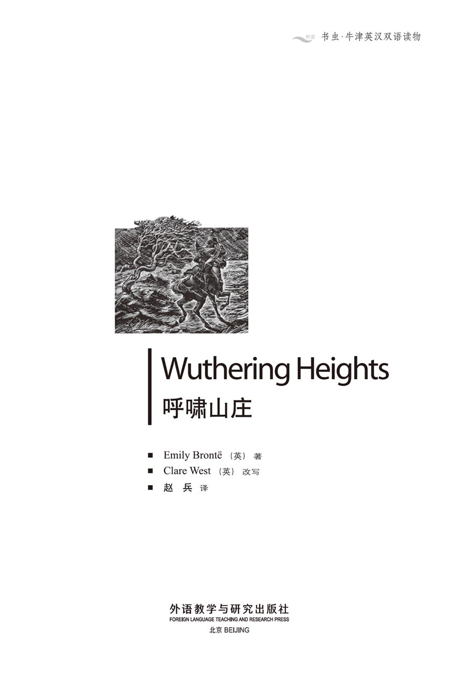
版权页
京权图字01-96-1572
Originally published by Oxford University Press, Great Clarendon Street, Oxford. © 1992
This edition is licensed for sale in the People's Republic of China only and not for export therefrom.
'Oxford' is a registered trademark of Oxford University Press.
只限中华人民共和国境内销售，不包括香港特别行政区、澳门特别行政区及台湾省。不得出口。
图书在版编目（CIP）数据
呼啸山庄 = Wuthering Heights／（英）勃朗特（Brontë, E. ）著；（英）韦斯特（West, C. ）改写；赵兵译．—北京：外语教学与研究出版社，1997（2014.11 重印）
（书虫·牛津英汉双语读物）
ISBN 978-7-5600-1220-9
Ⅰ．呼… Ⅱ．①勃…②韦…③赵… Ⅲ．小说—对照读物—英、汉 Ⅳ．H319.4：I
中国版本图书馆CIP数据核字（97）第06394号
出版人： 蔡剑峰
责任编辑：蔡剑峰
出版发行：外语教学与研究出版社
社 址：北京市西三环北路19号（100089）
网 址：http://www.fltrp.com
版 次：1997年5月第1版
书 号：ISBN 978-7-5600-1220-9
* * *
举报电话：（010）88817519
电子邮箱：banquan@fltrp.com
法律顾问：立方律师事务所 刘旭东律师
中咨律师事务所 殷 斌律师
简 介
简 介
爱情未必总是幸福的历程，相爱的人也未必总是彼此善待。我们都熟知很多恋人因外来压力不能相聚的故事——有时是因为他们的家庭，有时是迫于他们所处社会的世俗习惯。
在《呼啸山庄》中，使恋人隔开的主要原因来自他们自身。这个故事中的人物，像现实世界的人们一样，有弱点——正是这些弱点导致了他们的不幸。他们高傲、自私；他们经常陷于感情纠葛之中，又不能决定自己的命运。爱情经常由于这些原因而失败，但现实生活中很少有像这个故事中所描述的这样动人心魄。
艾米莉·勃朗特（1818—1848）出生和生活于英格兰北部的约克郡，也是《呼啸山庄》这个故事发生的地方。她与她的姐姐夏洛蒂和妹妹安妮都属当时英格兰最伟大的小说家之列。
目录
家 谱
家 谱
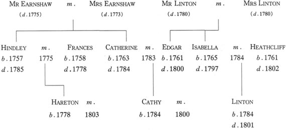
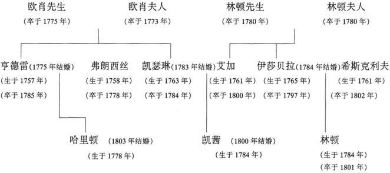
1 Mr Lockwood visits Wuthering Heights
1
Mr Lockwood visits Wuthering Heights
1801 I have just returned from a visit to my landlord, Mr Heathcliff. I am delighted with the house I am renting from him. Thrushcross Grange is miles away from any town or village. That suits me perfectly. And the scenery here in Yorkshire is so beautiful!
Mr Heathcliff, in fact, is my only neighbour, and I think his character is similar to mine. He does not like people either.
'My name is Lockwood,' I said, when I met him at the gate to his house. 'I'm renting Thrushcross Grange from you. I just wanted to come and introduce myself.'
He said nothing, but frowned, and did not encourage me to enter. After a while, however, he decided to invite me in.
'Joseph, take Mr Lockwood's horse!' he called. 'And bring up some wine from the cellar!' Joseph was a very old servant, with a sour expression on his face. He looked crossly up at me as he took my horse.
'God help us! A visitor!' he muttered to himself. Perhaps there were no other servants, I thought. And it seemed that Mr Heathcliff hardly ever received guests.
His house is called Wuthering Heights. The name means 'a windswept house on a hill', and it is a very good description. The trees around the house do not grow straight, but are bent by the north wind, which blows over the moors every day of the year. Fortunately, the house is strongly built, and is not damaged even by the worst winter storms. The name 'Earnshaw' is cut into a stone over the front door.
Mr Heathcliff and I entered the huge main room. It could have been any Yorkshire farmhouse kitchen, except that there was no sign of cooking, and no farmer sitting at the table. Mr Heathcliff certainly does not look like a farmer. His hair and skin are dark, like a gipsy's, but he has the manners of a gentleman. He could perhaps take more care with his appearance, but he is handsome. I think he is proud, and also unhappy.
We sat down by the fire, in silence.
'Joseph!' shouted Mr Heathcliff. No answer came from the cellar, so he dived down there, leaving me alone with several rather fierce-looking dogs. Suddenly one of them jumped angrily up at me, and in a moment all the others were attacking me. From every shadowy corner in the great room appeared a growling animal, ready to kill me, it seemed.
'Help! Mr Heathcliff! Help!' I shouted, trying to keep the dogs back. My landlord and his servant were in no hurry to help, and could not have climbed the cellar steps more slowly, but luckily a woman, who I supposed was the housekeeper, rushed into the room to calm the dogs.
'What the devil is the matter?' Mr Heathcliff asked me rudely, when he finally entered the room.
'Your dogs, sir!' I replied. 'You shouldn't leave a stranger with them. They're dangerous.'
'Come, come, Mr Lockwood. Have some wine. We don't often have strangers here, and I'm afraid neither I nor my dogs are used to receiving them.'
I could not feel offended after this, and accepted the wine. We sat drinking and talking together for a while. I suggested visiting him tomorrow. He did not seem eager to see me again, but I shall go anyway. I am interested in him, even if he isn't interested in me.
* * *
Two days later Yesterday afternoon was misty and bitterly cold, but I walked the four miles to Wuthering Heights and arrived just as it was beginning to snow. I banged on the front door for ten minutes, getting colder and colder. Finally Joseph's head appeared at a window of one of the farm buildings.
'What do you want?' he growled.
'Could you let me in?' I asked desperately.
He shook his head. 'There's only Mrs Heathcliff indoors, and she won't open the door to you.'
Just then a young man appeared and called me to follow him. We went through the back door and into the big room where I had been before. I was delighted to see a warm fire and a table full of food. And this time there was a woman sitting by the fire. She must be Mrs Heathcliff, I thought. I had not imagined my landlord was married. She looked at me coldly without saying anything.
'Terrible weather!' I remarked. There was silence.
'What a beautiful animal!' I tried again, pointing to one of the dogs that had attacked me. She still said nothing, but got up to make the tea. She was only about seventeen, with the most beautiful little face I had ever seen. Her golden wavy hair fell around her shoulders.
'Have you been invited to tea?' she asked me crossly.
'No, but you are the proper person to invite me,' I smiled.
For some reason this really annoyed her. She stopped making the tea, and threw herself angrily back in her chair. Meanwhile the young man was staring aggressively at me. He looked like a farm worker, but seemed to be part of the family. I did not feel at all comfortable. At last Heathcliff came in.
'Here I am, sir, as I promised!' I said cheerfully.
'You shouldn't have come,' he answered, shaking the snow off his clothes. 'You'll never find your way back in the dark.'
'Perhaps you could lend me a servant to guide me back to the Grange?' I asked.
'No, I couldn't. There aren't any servants here except Joseph and the housekeeper. Get the tea ready, will you?' he added fiercely to the young woman. I was shocked by his unpleasantness.
We sat down to eat. I tried to make conversation with the three silent people round the table.
'How happy you must be, Mr Heathcliff,' I began, 'in this quiet place, with your wife and—'
'My wife! My wife's ghost, you mean?'
I suddenly realized I had made a serious mistake. So his wife was dead! Of course he was too old to be married to that young girl. She must be married to the young man next to me, who was drinking his tea out of a bowl and eating his bread with unwashed hands. Perhaps the poor girl had found no one better to marry in this uninhabited area. I turned politely to the young man.
'Ah, so you are this lady's husband!' This was worse than before. His face went red, and he seemed only just able to stop himself hitting me. He muttered something I could not hear.
'Wrong again, Mr Lockwood,' said Mr Heathcliff. 'No, her husband, my son, is dead. This,' he added, looking scornfully at the young man, 'is certainly not my son.'
'My name is Hareton Earnshaw,' growled the young man.
We finished our meal in silence, and when I looked out of the window, all I could see was darkness and snow.
'I don't think I can get home without a guide,' I said politely. No one answered me. I turned to the woman.
'Mrs Heathcliff,' I begged, 'What can I do? Please help me!'
'Take the road you came on,' she replied without interest, opening a book. 'That's the best advice I can give.'
'Mr Heathcliff, I'll have to stay here for the night!' I told him.
'I hope that will teach you not to walk over the moors in bad weather,' he answered. 'I don't keep guest bedrooms. You can share a bed with Hareton or Joseph.'
I was so angry with them all that I could not stay there a moment longer, and rushed out into the darkness. I saw Joseph by the back door, caught hold of the lamp he was carrying, and ran with it to the gate. But the dogs chased after me and attacked me, and I was soon knocked to the ground. Heathcliff and Hareton stood at the door, laughing, as I shouted at the dogs and tried to get up. In the end I was again rescued by the housekeeper, Zillah, who ordered away the dogs and helped me to my feet.
I was so bruised and exhausted that I did not feel strong enough to walk home, and although I did not want to, I had to spend the night at Wuthering Heights. Nobody wished me goodnight, as Zillah took me upstairs to find a bed for me.
landlord n. man who has a house and lets people live there, for money. 男房东。
scenery n. a view or views of natural features, especially in open country. 风景。
cellar n. room in the ground under a house. 地窖。
description n. saying what something or someone is like. 描绘。
moor n. open, rough land on hills. 荒野。
gipsy n. someone with dark hair and eyes who lives in a caravan and never stays long in one place. 吉普赛人。
shadowy adj. not clear. 幽暗的。
even if although. 即使。
misty adj. with sort of thin cloud near the ground. 有雾的。
bitterly adv. very coldly. 严寒的。
wavy adj. bent. 卷曲的。
annoy v. make someone rather angry. 使生气。
aggressive adj. always ready to quarrel or attack. 爱挑衅的。agressively adv.
conversation n. informal talk in which people exchange news, thoughts, etc. 交谈。
mutter v. say words in a low voice. 咕哝。
scornful adj. with no respect. 轻蔑的。
rescue v. save someone or something from danger. 救出。
exhausted adj. very tired. 精疲力尽的。
洛克伍德先生造访呼啸山庄
1 洛克伍德先生造访呼啸山庄
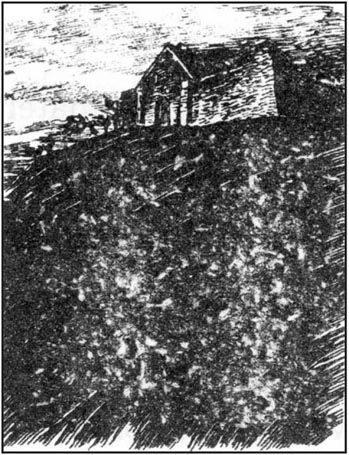
1801年
我刚刚拜访我的房东希斯克利夫先生回来。我喜欢从他那儿租来的那座房子。画眉山庄无论离哪个村镇都有数英里之遥，正合我的心意。约克郡这儿的风景太美了！
希斯克利夫先生实际上是我唯一的邻居，我觉得他的性情与我相仿。他也不喜欢人群。
在通向他房子的院门前我见到了他。“我姓洛克伍德，”我说道，“我租用着您的画眉山庄。我是来同您打个招呼的。”
他没说话，却皱了一下眉头，不太愿意让我进去。但待了一会儿又决定请我进屋。
“约瑟夫，牵走洛克伍德先生的马！”他喊道，“到地窖里拿些酒上来！”约瑟夫是个很老的仆人，脸上表情乖戾。牵马时气鼓鼓地看了我一眼。
“上帝保佑！来了客人！”他自言自语地嘟囔着。我想可能再没有别的仆人了。看来希斯克利夫先生几乎从不接待客人。
他的房子叫呼啸山庄。意思是“狂风肆虐的山丘上的房子”，名字起得恰如其分。房子周围的树不是直着长，而是被常年累月里从荒原过来的北风吹弯了。好在房子造得结实，即使是冬天最烈的风暴也毁不了。房子正门的一块石头上刻着“欧肖”这个名字。
希斯克利夫先生和我进到极大的正房。它很像是约克郡一个普通农家的厨房，只是没有做饭的迹象，桌旁也没坐着农夫。希斯克利夫先生看上去显然不像个农夫，他的头发和皮肤是深色的，像吉卜赛人，但有绅士的派头。他还能对自己的外表再多上点儿心，但已经算得上英俊了。我觉得他很高傲，而且郁郁寡欢。
我们在火旁坐下，都没说话。
“约瑟夫！”希斯克利夫先生高声喊道。地窖里没有回答，于是他钻了下去，只剩下我单独和几条恶狗在一起。突然其中一条气势汹汹地跳起来扑向我，随即其他的几条也都攻向我。这大屋子的每个阴暗角落都蹿出一条嗥叫的恶兽，一副要杀了我的架势。
“救命呀！希斯克利夫先生！救命！”我一边竭力不让狗近身，一边高声喊道。我的房东和他的仆人根本不急于来解救我，不慌不忙地从地窖的楼梯往上爬。但幸运的是有个女人，我猜她是这儿的女管家，冲进屋里把狗制服了。
“搞什么鬼？”希斯克利夫先生无礼地问我道，这时他终于进了屋。
“是您的狗，先生！”我回答，“您不应该把一个生人撇下，和它们在一起。它们很危险。”
“好了，好了，洛克伍德先生，喝点酒。我们这儿不常来生人，恐怕我和我这些狗都不知道怎么接待客人。”
这么一来我倒没了被冒犯的感觉，接过了酒。我们坐在一起边喝边聊了一会儿。我提议明天再来拜访他。他对再见我似乎并没有热情，但无论如何我也得去。我对他很有兴趣，虽然他对我没有。
两天后
昨天下午有雾，天气阴冷，但我走了四英里去呼啸山庄，刚到就开始下雪了。我在前门使劲儿敲了10分钟，觉得越来越冷。最后约瑟夫终于从一间农舍的窗子里探出头来。
“你想干什么？”他吼道。
“你能让我进去吗？”我绝望地问。
他摇了摇头。“只有希斯克利夫夫人在家，她不会给你开门的。”
就在这时出现了一个年轻人，叫我跟他走。我们从后门进了我曾去过的那间大屋。看到暖暖的一炉火和一张摆满饭菜的桌子，我精神一振。这次有一个女人坐在火旁。我猜她一定就是希斯克利夫夫人了。我没料到我的房东已有家室。她冷冰冰地看着我，一声没吭。
“这坏天气！”我说。还是沉默。
“真是条好狗！”我指着攻击过我的一条狗，又试探了一次。她还是没说话，却起身沏茶。她只有17岁上下，一张脸蛋儿是我所见过的最美的。她波浪般的金发披在肩上。
“有人请你来喝茶吗？”她别扭地问了我一句。
“不，但您可以请我，”我微笑着说。
这话不知为何让她真的有些不悦。茶也不沏了，怒气十足地一屁股坐回她的椅子。同时，那个年轻人也挑衅似地盯着我。他看起来像个农场做工的，但又似乎是这个家庭的成员。我觉得很不自在。最后希斯克利夫终于进来了。
“我来了，先生，我说过我要来的！”我高高兴兴地说。
“你不该来，”他回答，一边抖落衣服上的雪，“天黑了你别想找到回去的路。”
“也许您能派个仆人领我回画眉山庄？”我问道。
“不，我做不到。这儿除了约瑟夫和女管家就没有仆人了。把茶沏好，行吗？”他蛮横地对那个年轻女人加了一句。他的不悦让我大吃一惊。
我们坐下开始进餐。我试着同桌边这三个默不作声的人搭话。
“您该有多幸福啊，希斯克利夫先生，”我说道，“在这个宁静的地方，与您的夫人和……”
“我的夫人！你指的是我夫人的灵魂吗？”
突然间我意识到我犯了个严重的错误。原来他的夫人已经死了！他这个年龄当然不会娶那么年轻的姑娘。她嫁的一定是我旁边的这个年轻人，他正从碗里喝茶，用来吃面包的手也没有洗。也许这可怜的姑娘在这人烟稀少的地方也找不到更好的人可嫁了。我恭敬地转向那年轻人。
“啊，原来您是这位夫人的丈夫！”这一下比刚才更糟。他的脸红了，似乎差点儿就忍不住要揍我。他嘟囔了些什么，但我没听清。
“又错了，洛克伍德先生，”希斯克利夫先生说，“不，她的丈夫，我儿子，已经死了。这位，”他边讥讽地看着那年轻人，边补充道，“当然不是我的儿子。”
“我叫哈里敦·欧肖。”年轻人吼道。
我们在沉默中吃完了饭，这时我往窗外望去，能看到的只是一片黑暗和雪花。
“我想，没有向导我回不了家的。”我礼貌地说。没人理睬我的话。我转向那女人。
“希斯克利夫夫人，”我恳求道，“我能怎么办？请帮帮我！”
“顺着你来的原路回去，”她毫不关心地回答，同时打开了一本书，“这是我能给你的最好的建议。”
“希斯克利夫先生，我不得不在这儿过夜了！”我告诉他。
“我希望你能接受这个教训，天气不好时别到荒原上走，”他回答，“我没为客人准备卧室。你可以同哈里敦或约瑟夫睡一张床。”
我对他们几个简直是怒不可遏，在这儿我一会儿也待不下去了，当即冲出门，到了黑暗之中。我看见约瑟夫在后门那儿站着，于是一把抓过他手里的那盏灯，拿着奔大门跑去。但那些狗追着攻向我，我很快就被击倒在地上。在我对着狗高声呵斥，试图站起来，希斯克利夫和哈里敦却站在门前笑着。最后，又是女管家齐拉救了我，她叱退了狗，扶我站起来。
我浑身是伤，精疲力竭，感觉没力气走回家，虽然我不想留下，但不得不在呼啸山庄过夜了。齐拉带我上楼为我找张床的时候，谁也没对我说晚安。
2 Catherine Earnshaw's room
2
Catherine Earnshaw's room
1801 'Quietly, sir!' whispered the housekeeper, as we climbed up the dark stairs. 'My master will be angry if he discovers which bedroom you're sleeping in. For some reason he doesn't want anyone to sleep there, I don't know why. They're strange people in this house, you know. Here's the room, sir.'
But I was too tired to listen. 'Thank you, Zillah,' I said, and, taking the candle, I entered the room and closed the door.
The only piece of furniture in the large, dusty bedroom was a bed, placed next to the window. There were heavy curtains which could be pulled around it, to hide the sleeper from anyone else in the room. Looking inside the curtains I saw a little shelf full of books, just under the window. I put my candle down on the shelf, and dropped thankfully on to the bed. I closed the curtains around the bed, and felt safe from Heathcliff and everyone else at Wuthering Heights.
I noticed that there were names written on the wall in childish handwriting—Catherine Earnshaw, Catherine Heathcliff and Catherine Linton. Then I fell asleep, but I was woken very suddenly by a smell of burning. My candle had fallen on to a Bible on the shelf and was burning it. When I opened the Bible to see if it was damaged, I found that wherever there was an empty page, or half a page, someone had written on it, and on the first page was written 'Catherine Earnshaw's diary, 1776'. Who was the girl who had slept in this bed, written her name on the wall, and then written her diary in the Bible, twenty-five years ago? I read it with interest.
'How I hate my brother Hindley!' it began. 'He is so cruel to poor Heathcliff. If only my father hadn't died! While he was alive, Heathcliff was like a brother to Hindley and me. But now Hindley and his wife Frances have inherited the house and the money, and they hate Heathcliff. That horrible old servant Joseph is always angry with Heathcliff and me because we don't pray or study the Bible, and when he tells his master, Hindley always punishes us. I can't stop crying. Poor Heathcliff! Hindley says he is wicked, and can't play with me or eat with me any more.'
My eyes were beginning to close again and I fell asleep. Never before had I passed such a terrible night, disturbed by the most frightening dreams. Suddenly I was woken by a gentle knocking on the window. It must be the branch of a tree, I thought, and tried to sleep again. Outside I could hear the wind driving the snow against the window.
But I could not sleep. The knocking annoyed me so much that I tried to open the window. When it did not open, I broke the glass angrily and stretched out my hand towards the branch. But instead, my fingers closed around a small, ice-cold hand! It held my hand tightly, and a voice cried sadly, 'Let me in! Let me in!'
'Who are you?' I asked, trying to pull my hand away.
'Catherine Linton,' it replied. 'I've come home. I lost my way!' There seemed to be a child's face looking in at the window.
Terror made me cruel. I rubbed the creature's tiny wrist against the broken glass so that blood poured down on to the bed. As soon as the cold fingers let go for a moment, I pulled my hand quickly back, put a pile of books in front of the broken window, and tried not to listen to the desperate cries outside.
'Go away!' I called. 'I'll never let you in, not if you go on crying for twenty years!'
'It is almost twenty years!' replied the sad little voice. 'I've been out here in the dark for nearly twenty years!' The hand started pushing through the window at the pile of books, and I knew it would find me and catch hold of me again. Unable to move, I stared in horror at the shape behind the glass, and screamed.
There were rapid footsteps outside my bedroom door, and then I saw the light of a candle in the room.
'Is anyone here?' whispered Heathcliff. He could not see me behind the curtains, and clearly did not expect an answer. I knew I could not hide from him, so I opened the curtains wide.
I was surprised by the effect of my action. Heathcliff dropped his candle and stood without moving, his face as white as the wall behind him. He did not seem to recognize me.
'It's only your guest, Lockwood,' I said. 'I'm sorry, I must have had a bad dream and screamed in my sleep.'
'To the devil with you, Mr Lockwood!' growled my landlord. 'Who allowed you to sleep in this room? Who was it?'
'It was your housekeeper, Mr Heathcliff,' I said, quickly putting my clothes on. 'And I'm angry with her myself! No one can sleep in a room full of ghosts!'
'What do you mean?' asked Heathcliff, looking suddenly very interested. 'Ghosts, you say?'
'That little girl, Catherine Linton, or Earnshaw, or whatever her name was, must have been wicked! She told me she had been a ghost for nearly twenty years. It was probably a punishment for her wickedness!'
'How dare you speak of her to me?' cried Heathcliff wildly. But as I described my dream, he became calmer, and sat down on the bed, trembling as he tried to control his feelings.
'Mr Lockwood,' he said finally, brushing a tear from his eye, 'you can go into my bedroom to sleep for the rest of the night. I'll stay here for a while.'
'No more sleep for me tonight,' I replied. 'I'll wait in the kitchen until it's daylight, and then I'll leave. You needn't worry about my visiting you again either. I've had enough company for a long time.'
But as I turned to go downstairs, my landlord, thinking he was alone, threw himself on the bed, pushed open the window and called into the darkness. 'Come in! Come in!' he cried, tears rolling down his face. 'Catherine, do come! My darling, hear me this time!'
But only the snow and wind blew into the room.
How could my dream have produced such madness? I could not watch his suffering any more, and went downstairs.
I waited in the kitchen until it was light enough outside for me to find my way through the deep snow back to Thrushcross Grange. The housekeeper there, Ellen Dean, rushed out to welcome me home. She thought I must have died in the previous night's snowstorm. With a warm fire, and a hot meal, I began to recover from my unpleasant experiences.
After my stay at Wuthering Heights, I thought I would never want to speak to any human being again, but by the end of the next day I was beginning to feel lonely. I decided to ask Mrs Dean to sit with me after supper.
'How long have you lived in this house?' I asked her.
'Eighteen years, sir. I came here early in 1783 when my mistress was married, to look after her. And when she died, I stayed here as housekeeper.'
'Who was your mistress?' I asked.
'Her name was Catherine Earnshaw,' she replied.
'Ah, my ghostly Catherine,' I muttered quietly to myself.
'She married Mr Edgar Linton, a neighbour,' added Mrs Dean, 'and they had a daughter, Cathy, who married Mr Heathcliff's son.'
'Ah, so that must be the widow, young Mrs Heathcliff at Wuthering Heights!'
'That's right, sir. Did you see her? I looked after her as a baby, you know. How is she? I do want to know.'
'She looked very well, and very beautiful. But I don't think she's happy.'
'Oh, poor thing! And what did you think of Mr Heathcliff?'
'He's a rough, hard man, Mrs Dean. But I'm very interested in him. Tell me more about him.'
'Well, he's very rich, of course, and mean at the same time. He could live here at Thrushcross Grange, which is a finer house than Wuthering Heights, but he would rather receive rent than live comfortably. But I'll tell you the whole story of his life, as much as I know, that is, and then you can judge for yourself.'
discover v. to find out. 找到，发现。
candle n. stick of wax that gives light when it burns. 蜡烛。
Bible n. the holy book of the Christians and the Jews. 《圣经》。
damage v. break or hurt something. 毁坏。
inherit v. receive a house, money, title, etc. from someone who has died. 继承。
punish v. make someone suffer because he has done wrong. 惩罚，处罚。
disturb v. stop someone thinking or working well. 打搅，扰乱。
stretch out v. straighten (the limbs or body) to full length. 伸开四肢。
desperate adj. having no hope and ready to do any wild or dangerous thing. 绝望的，拼命的。
in horror great fear. 恐惧。
scream v. cry out loudly. 尖叫。
growl v. make a low, angry sound in the throat. 怒吼。
tremble v. shake because you are afraid, cold, weak, etc. 发抖。
previous adj. of an earlier time. 先前的，早先的。
mistress n. a woman who is in control (of a family, school, etc.) 女主人，主妇。
widow n. woman whose husband is dead. 寡妇。
凯瑟琳·欧肖的房间
2 凯瑟琳·欧肖的房间
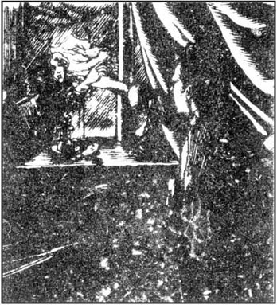
1801年
“别出声，先生！”我们爬上黑暗的楼梯时女管家轻声对我说。“如果我的主人发现你睡在那间卧室，他会生气的。因为某些原因，他不愿任何人睡在那儿，我不知为什么。这座房子里尽是怪人，这你知道。就是这个房间，先生。”
但我太累了，也没顾得上听。“谢谢，齐拉。”我说，然后拿着蜡烛，进了房间，关上门。
这是一间很大的卧室，积满灰尘，唯一的家具就是那张靠窗放着的床。有几重厚厚的帘子，拉起来可以把床围住，这样房里的其他人就看不见睡觉的人了。我往帘子里头看了一眼，看到窗子的正下方有一个装满了书的架子。我把蜡烛放到架子上，心满意足地躺上了床。我把床的围帘拉上，有一种与希斯克利夫和呼啸山庄所有其他人隔开的安稳感觉。
我注意到墙上写着些名字，笔迹很幼稚——凯瑟琳·欧肖，凯瑟琳·希斯克利夫和凯瑟琳·林顿。然后我就睡着了，但突然我被一阵着火的味儿呛醒了。是蜡烛倒在了架子上的一本《圣经》上，正烧着呢。当我打开那本《圣经》看有没有烧坏时，发现凡是有空白页，或半页空白的地方都写满了字，而第一页上就写着“凯瑟琳·欧肖的日记，1776年”。25年前在这床上睡过、在墙上写上自己的名字，然后又在《圣经》上写日记的姑娘是谁？我饶有兴致地读了下去。
“我恨死我哥哥亨德雷了！”日记开始写道，“他对可怜的希斯克利夫太凶了。如果我爸爸还没过世该多好！他活着的时候，希斯克利夫就像是我和亨德雷的兄弟一般。但现在亨德雷和他老婆弗朗西丝继承了房子和财产，而他们恨希斯克利夫。约瑟夫那可恶的老仆人又总是因为希斯克利夫和我不祈祷或不读《圣经》而对我们吹胡子瞪眼，当他状告到主人那儿，亨德雷肯定要惩罚我们。我止不住要哭。可怜的希斯克利夫！亨德雷说他邪性，再也不让他跟我一起玩儿，不让他跟我一起吃饭。”
我的眼睛又慢慢合上，睡着了。在这以前我从来没有经历过那么可怕的一夜，被最令人恐惧的梦魇烦扰着。突然间我被窗子上轻轻的敲击声弄醒了，一定是树枝的缘故，我想，打算接着再睡。我能听到外面风卷着雪花打在窗子上的声音。
但我无法入睡。敲击声太让人心烦，我试图打开窗户。窗子打不开，于是我恼怒地砸碎了玻璃向外伸手去够那根树枝。但树枝没够着，却抓住了一只冰凉的小手！小手紧紧抓着我的手，一个声音哭诉道，“让我进去！让我进去！”
“你是谁？”我问道，想把手抽回来。
“凯瑟琳·林顿，”它回答，“我回家了！我迷路了！”似乎有一张孩子的脸由窗外探进来。
恐惧使我心狠起来。我把那小东西细小的手腕儿在破玻璃上拉来拉去，直到血淌到了床上。那冰冷的手指一放松，我就赶紧把手抽了回来，在窗子缺口前堆了一摞书，尽量不去听外面那苦苦哀求的声音。
“滚开！”我嚷道，“我决不会让你进来的，再叫20年也没用！”
“已经快有20年啦！”那凄楚孱弱的声音回答道。“我流落在外面这黑暗里已经将近20年啦！”那只手开始伸过窗子的破口来推那摞书，我知道它会找到我而且又会抓住我的。我一动不能动，惊恐地盯着玻璃后面的影子，放声尖叫起来。
我的卧室门外很快就传来了急促的脚步声，然后就看到房间里有了烛光。
“有人吗？”希斯克利夫低声问。我在帘子后面，他看不见，因而显然不指望会有人回答。我知道自己躲不过他了，就把帘子拉开了。
我这个动作的后果让我吃了一惊。希斯克利夫手里的蜡烛掉了，呆呆地站在那儿，他的脸煞白得像他身后的墙。他好像没认出我来。
“我不过是您的客人，洛克伍德啊，”我说，“对不起，想必我做了个恶梦，在睡梦中尖叫出来了。”
“见鬼去吧，洛克伍德先生！”我的房东咆哮道，“谁允许你睡在这房间的？是谁？”
“是您的女管家，希斯克利夫先生，”我说，同时很快地穿上了衣服。“我也很生她的气！没人能睡在这满是鬼魂的房间！”
“你什么意思？”希斯克利夫问，突然露出很感兴趣的样子。“鬼魂，你说？”
“那个小姑娘，凯瑟琳·林顿，或欧肖，或不管她叫什么，一定是个邪种！她告诉我她已经做了将近20年的鬼了。这可能就是对她邪恶的惩罚！”
“你怎么竟敢对我说起她来？”希斯克利夫狂怒地高声叫道。但随着我描述着梦境，他开始平静下来，在床边坐下，颤抖着，试图控制他的情绪。
“洛克伍德先生，”最后他开腔了，一边抹去他眼里的一滴泪，“后半夜你可以去我的卧室睡。我要在这儿待一会儿。”
“今晚我没法再睡了，”我回答，“我要到厨房坐到天亮，然后就走。您也不必担心我会再来拜访您了。就这伴儿已够折腾我好一阵子了。”
当我转身下楼时，我的房东以为只剩他自己了，一头倒在床上，推开窗户，对着黑暗喊叫起来。“进来吧！进来吧！”他哭喊着，眼泪顺着他的脸淌下来。“凯瑟琳，来吧！我的爱人，这次你听到我了吧！”
但只有雪花和着风吹进房来。
我的梦怎么会让他如此疯狂？我不忍再看他凄苦的样子，下楼去了。
我在厨房等着，直到外面的天光能使我在深深的雪地里找到回画眉山庄的路。画眉山庄的女管家，艾伦·迪恩，赶出来迎接我。她以为我一定在头一夜的暴风雪中死了呢。烤着暖暖的一炉火，吃了一顿热乎乎的饭菜，我开始从我不快的经历中恢复了过来。
打我在呼啸山庄过了一夜之后，我想我再也不会同任何人说话了，但到了第二天后半晌我又开始觉得孤单。我决定让迪恩夫人在晚饭后陪我坐一会儿。
“你在这房子里住了多久啦？”我问她。
“18年啦，先生。我是在1783年初我的女主人结婚时来这儿的，来照顾她。她死后，我就做了这儿的女管家。”
“你的女主人是谁？”我问。
“她名叫凯瑟琳·欧肖。”她回答。
“啊，我的鬼魂凯瑟琳。”我喃喃地自语道。
“她嫁给了艾加·林顿先生，一个邻居，”迪恩夫人补充说，“后来他们生了个女儿，凯茜，嫁给了希斯克利夫先生的儿子。”
“哦，一定就是那个寡妇，呼啸山庄里年轻的希斯克利夫夫人！”
“对，先生。您见到她了吗？她小时候是我看的，您知道。她怎么样？我真的很想知道。”
“她看上去很好，非常漂亮。但我觉得她并不开心。”
“噢，可怜的人儿！那您觉得希斯克利夫先生怎么样？”
“他是个粗暴、苛刻的人，迪恩夫人。但我对他挺有兴趣。给我再说些他的事。”
“嗯，他很富有，但也很吝啬。他本可以住在画眉山庄，这儿房子要比呼啸山庄好，但他宁愿收租金也不愿住得舒坦。我会给您讲所有有关他的事儿，就是尽我所知的，然后您就可以自己判断了。”
3 Ellen Dean's story—Catherine and Heathcliff as children
3
Ellen Dean's story—Catherine and Heathcliff as children
1770 When I was a child, I was always at Wuthering Heights, because my mother was a servant with the Earnshaw family. They are a very old family who have lived in that house for centuries, as you can see from their name on the stone over the front door. I grew up with Catherine and Hindley Earnshaw, and we three played together as children.
One day, their father Mr Earnshaw came back from a long journey. He had travelled sixty miles to Liverpool and back on business, and was very tired.
'Look what I've brought you!' he told us all, unwrapping something he was holding carefully in his arms. Catherine and Hindley were expecting presents, and they rushed eagerly to see what it was. They were very disappointed to see only a dirty, black-haired gipsy child.
'I found him all alone in the busy streets of Liverpool,' Mr Earnshaw explained to them, 'and I couldn't leave him to die. He can sleep in your room.' But Hindley and Catherine were angry because they had not received any presents, and refused to let the strange child share their room. However Mr Earnshaw insisted, and little by little the boy became accepted by the family. He was called Heathcliff, as a first and last name. No one ever discovered who his parents had been.
Catherine and he became great friends, but Hindley hated him, and was often cruel to him. Old Mr Earnshaw was strangely fond of this gipsy child, and frequently punished his son for behaving badly to Heathcliff. Hindley began to be jealous of his father's feelings for Heathcliff, and saw them both as enemies.
This situation could not last. As Mr Earnshaw grew old and ill, Heathcliff became even more his favourite, and Hindley often quarrelled with his father. When Hindley was sent away to study, I hoped that we would have peace in the house. But then it was that old servant Joseph who caused trouble. He tried to persuade his master to be stricter with the children, and was always complaining that Heathcliff and Catherine did not spend enough time studying the Bible or attending church services.
Catherine was a wild, wicked girl in those days. We had to watch her every moment of the day, to stop her playing her tricks on us. She was proud, and liked giving orders. But she had the prettiest face and the sweetest smile you've ever seen. I could forgive her anything when she came to say she was sorry.
She was much too fond of Heathcliff, and the worst punishment we could invent was to keep her separate from him. Her father could no longer understand her or her behaviour, and Catherine did not realize that his illness made him less patient with her.
At last Mr Earnshaw found peace. He died quietly in his chair by the fire one October evening in 1775. The night was wild and stormy, and we were all sitting together in the big kitchen. Joseph was reading his Bible at the table, while Catherine had her head on her father's knee. He was pleased to see her so gentle for once, and she was singing him to sleep. I was glad the old gentleman was sleeping so well. But when it was time to go to bed, Catherine put her arms round her father's neck to say goodnight, and immediately screamed, 'Oh, he's dead, Heathcliff! He's dead!'
Heathcliff and I started crying loudly and bitterly too. Joseph told me to fetch the doctor, so I ran to the village, although I knew it was too late. When I came back, I went to the children's room, to see if they needed me, and I listened for a moment at their door. They were imagining the dead man in a beautiful distant place, far from the troubles of this world. And as I listened, crying silently, I could not help wishing we were all there safe together.
journey n. going from one place to another. 旅行。
little by little gradually. 逐渐地，一点一点地。
jealous adj. with angry and sad feelings because you want what another person has. 妒忌的。
quarrel v. talk angrily because you can't agree. 争论，争吵。
persuade v. make someone believe or do something by talking to him. 说服，劝导。
stormy adj. with strong wind, rain, etc. 有暴风雨的。
艾伦·迪恩讲述的故事——凯瑟琳和希斯克利夫的童年
3 艾伦·迪恩讲述的故事
——凯瑟琳和希斯克利夫的童年
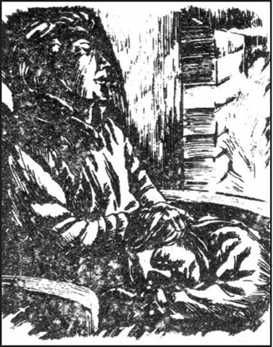
1770年
我小时候一直在呼啸山庄，因为我母亲在欧肖家做用人。欧肖家是一个很古老的家族，在那幢宅子住了好几百年，你能从门前石头上刻着的名字看出来。我是同凯瑟琳和亨德雷·欧肖一起长大的，小时候我们仨都在一起玩儿。
一天，他们的父亲欧肖先生出远门回来。他赶了60英里去利物浦办事后又赶回来，非常疲倦。
“看我给你们带来了什么！”他对我们大家说，一边打开了怀里小心抱着的东西。凯瑟琳和亨德雷正指望着是礼物呢，兴冲冲地围上来看到底是什么东西。当他们只看到一个脏兮兮、黑头发的吉卜赛孩子时，大失所望。
“我看到他孤零零地待在利物浦繁忙的街头，”欧肖先生对他们解释说，“我总不能让他就那么死了吧。他可以睡在你们的房里。”但亨德雷和凯瑟琳气恼没有得到礼物，不肯让这个野孩子睡在他们的房间。在欧肖先生的坚持下，一家人还是渐渐地接受了这个孩子。他叫希斯克利夫，既是名，也是姓。始终没人搞清楚他的父母是谁。
凯瑟琳和他成了好朋友，但亨德雷不喜欢他，对他常常很粗暴。老欧肖先生异乎寻常地喜欢这个吉卜赛孩子，时常因为自己的儿子对希斯克利夫不友善而惩罚他。亨德雷开始嫉妒他父亲对希斯克利夫的感情，视他俩为敌。
这种情况不可能持续下去。随着欧肖先生变得年迈多病，他越发地偏爱希斯克利夫了，而亨德雷则常同他父亲吵架。当亨德雷被送到外头上学后，我本指望我们能在家里过上安稳日子。但又轮到老仆人约瑟夫招惹是非。他试图怂恿他的主人对孩子们再严厉些，总是抱怨希斯克利夫和凯瑟琳不下功夫研读《圣经》和参加教堂的礼拜。
凯瑟琳当时是个任性、淘气的姑娘。我们一天到晚都得盯着她，一不留意就会被她捉弄。她很骄傲，喜欢发号施令。但您从没看到过比那更可爱的小脸和甜甜的微笑。只要她过来说抱歉，我就什么都原谅她了。
她太喜欢希斯克利夫了，不让她和希斯克利夫在一起是我们所能采取的最严厉的惩罚。她的父亲已无法理解她和她的所作所为，而凯瑟琳也没有意识到父亲的病情已使他对自己不像以前那样惯着了。
欧肖先生最终安息了。1775年10月的一个晚上，他安祥地死在火炉旁他的椅子上。那天晚上狂风肆虐，我们都一起坐在大厨房里。约瑟夫伏案读着他的《圣经》，凯瑟琳把头枕在她父亲的膝头。好不容易看到她这么乖，欧肖先生很高兴，她唱着歌儿催他入眠。老先生睡得这么好，我很欣慰。但该上床睡觉的时候，凯瑟琳用胳膊搂着她父亲的脖子道晚安时，她突然尖叫起来，“啊，他死了，希斯克利夫！他死了！”
希斯克利夫和我也都开始嚎啕痛哭。约瑟夫叫我去喊大夫，虽然我知道太晚了，但还是跑去了村子。回来后，我到孩子们的房间去看看他们是否需要我，我在门前站着听了一会儿。他们正在那儿想像死去的人如何在一个遥远、美丽的地方远离凡世的烦恼。我边听边默默地哭着，不禁开始祈望我们都能在天堂相安无事地相处。
4 Catherine Earnshaw gets to know the Lintons
4
Catherine Earnshaw gets to know the Lintons
1775 Hindley came home for his father's burial. What was more surprising was that he brought a wife with him. She was called Frances, a thin, pale woman with a frequent cough. Now that Hindley was the master of the house, he ordered Joseph and me to spend our evenings in the small back-kitchen, as we were only servants, while he, his wife and Catherine sat in the main room. Catherine and Heathcliff were treated very differently. Catherine received presents, and could continue her lessons, but Heathcliff was made to work on the farm with the men, and, as a farm worker, was only allowed to eat with us in the back-kitchen. They grew up like two wild animals. Hindley did not care what they did, as long as they kept out of his way, and they did not care even if he punished them. They often ran away on to the moors in the morning and stayed out all day, just to make Hindley angry. I was the only one who cared what happened to the two poor creatures, and I was afraid for them.
One Sunday evening they were missing at bedtime, and Hindley ordered me angrily to lock the front door. But I did not want them to stay out in the cold all night, so I kept my window open to look out for them. In a while I saw Heathcliff walking through the gate. I was shocked to see him alone.
'Where's Catherine?' I cried sharply.
'At Thrushcross Grange, with our neighbours the Lintons,' he replied. 'Let me in, Ellen, and I'll explain what happened.' I went down to unlock the door, and we came upstairs very quietly.
'Don't wake the master up!' I whispered. 'Now tell me!'
'Well, Catherine and I thought we'd just walk to the Lintons' house. We wanted to see if Isabella and Edgar Linton are punished all the time by their parents, as we are.'
'Probably not,' I answered. 'I expect they are good children and don't need to be punished.'
'Nonsense, Ellen! Guess what we saw when we looked in at their sitting-room window? A very pretty room, with soft carpets and white walls. Catherine and I would love to have a room like that! But in the middle of this beautiful room, Isabella and Edgar Linton were screaming and fighting over a little dog! How stupid they are, Ellen! If Catherine wanted something, I would give it to her, and she would do the same for me. I would rather be here at Wuthering Heights with her, even if I'm punished by Joseph and that wicked Hindleyul, than at Thrushcross Grange with those two fools!'
'Not so loud, Heathcliff! But you still haven't told me why Catherine isn't with you?'
'Well, as we were looking in, we started laughing at them so loudly that they heard us, and sent the dogs after us. We were about to run away, when a great fierce dog caught Catherine's leg in its teeth. I attacked it, and made it let go of her leg, but the Lintons' servants appeared and caught hold of me. They must have thought we were robbers. Catherine was carried unconscious into the house, and they pulled me inside too. All the time I was shouting and swearing at them.
'"What a wicked pair of thieves!" said old Mr Linton. "The boy must be a gipsy, he's as dark as the devil!" Mrs Linton raised her hands in horror at the sight of me. Catherine opened her eyes, and Edgar looked closely at her.
'"Mother," he whispered, "the young lady is Miss Earnshaw, of Wuthering Heights. I've seen her in church occasionally. And look what our dog has done to her leg! It's bleeding badly!"
'"Miss Earnshaw with a gipsy!" cried Mrs Linton. "Surely not! But I think you must be right, Edgar. This girl is wearing black, and Mr Earnshaw died recently. It must be her. I'd better put a bandage on her leg at once."
'"Why does her brother Hindley let her run around with such a companion?" wondered Mr Linton. "I remember now, he's the gipsy child Mr Earnshaw brought home from Liverpool a few years ago."
'"He's a wicked boy, you can see that," said Mrs Linton. "And did you hear the bad language he used just now? I'm shocked that my children heard it."'
'I was pushed out into the garden, but I stayed to watch through the window. They put Catherine on a comfortable sofa, cleaned her wound and fed her with cakes and wine. I only left the house when I was sure she was well taken care of. She's a breath of fresh air for those stupid Lintons. I'm not surprised they like her. Everybody who sees her must love her, mustn't they, Ellen?'
'I'm afraid you'll be punished for this, Heathcliff,' I said sadly.
And I was right. Hindley warned Heathcliff that he must never speak to Catherine again, or he would be sent away from Wuthering Heights, and it was decided that Catherine would be taught to behave like a young lady.
She stayed with the Linton family at Thrushcross Grange for five weeks, until Christmas. By that time her leg was fine, and her manners were much better than before. Frances Earnshaw visited her often, bringing her pretty dresses to wear, and persuading her to take care of her appearance, so that when she finally came home after her long absence, she almost seemed a different person. Instead of a wild, hatless girl, we saw a beautiful, carefully dressed young lady.
When she had greeted all of us, she asked for Heathcliff.
'Come forward, Heathcliff!' called Hindley. 'You may welcome Miss Catherine home, like the other servants.'
Heathcliff was used to being outside all day, and had not bothered to wash or change his clothes. His face and hands were black with dirt. In spite of this, Catherine was very glad to see him and rushed up to kiss him. Then she laughed.
'How funny and black and cross you look! But that's because I'm used to Edgar and Isabella, who are always so clean and tidy. Well, Heathcliff, have you forgotten me?'
But, ashamed and proud, the boy said nothing, until suddenly his feelings were too much for him.
'I won't stay to be laughed at!' he cried, and was about to run away, when Catherine caught hold of his hand.
'Why are you angry, Heathcliff? You... you just look a bit strange, that's all. You're so dirty!'
She looked worriedly at her hands, and her new dress.
'You needn't have touched me!' he said, pulling away his hand. 'I like being dirty, and I'm going to be dirty!'
As he ran miserably out of the room, Hindley and his wife laughed loudly, delighted that their plan to separate the two young people seemed to be succeeding.
The next day was Christmas Day. Edgar and Isabella Linton had been invited to lunch, and their mother had agreed, on condition that her darlings were kept carefully apart from 'that wicked boy'. I felt sorry for poor Heathcliff, and while the Earnshaws were at church, I helped him wash and dress in clean clothes.
'You're too proud,' I scolded him as I brushed his black hair. 'You should think how sad Catherine is when you can't be together. And don't be jealous of Edgar Linton!'
'I wish I had blue eyes and fair hair like him! I wish I behaved well, and was going to inherit a fortune!'
'He has none of your intelligence or character! And if you have a good heart, you'll have a handsome face. Who knows who your parents were? Perhaps a king and queen, far more important than the Lintons!'
In this way I encouraged Heathcliff to have more confidence in himself. But when the Earnshaws and the Lintons arrived back from church, the first thing Hindley did was shout at Heathcliff.
'Get out of my sight, until we've finished eating! I'll pull that long hair of yours if you don't obey me at once!'
'It is long,' said Edgar. 'I'm surprised he can see anything.'
This was too much for Heathcliff. He looked desperately around for a weapon, picked up a bowl of hot soup and threw it at Edgar, who started screaming. Hindley immediately took hold of Heathcliff and pushed him upstairs.
'I'm sure Hindley's going to hit him!' cried Catherine. 'I hate it when Heathcliff is punished! It's your fault, Edgar, you annoyed him! Why did you speak to him?'
'I didn't,' replied Edgar, tears in his eyes. 'I promised Mother I wouldn't. I spoke about him, not to him.'
'Well, don't cry,' said Catherine with scorn. 'You've made enough trouble already. Here comes my brother.'
Hindley returned, hot and breathless.
'That'll teach him!' he said. 'And now let's have lunch!'
The others seemed to forget Heathcliff, but I noticed Catherine could not eat much, and I knew she was sorry for her friend. In the evening there was music from a travelling band, and dancing in the main room. Catherine said the music sounded sweeter from high up, and so she went to sit in the dark on the stairs. When I went to find her, however, I discovered she had gone right to the top of the house to talk to Heathcliff through his locked bedroom door, and had then climbed out on to the roof and in through his window. I persuaded them both to come out of the room the same way, as I had no key to the door, and took Heathcliff down into the warm servants' kitchen with me, while Catherine returned to her guests and the dancing.
'You must be hungry, Heathcliff,' I said. 'You haven't eaten all day. Have some Christmas cake, do.'
'I can't eat anything,' he growled, putting his head in his hands. 'I've got to think how I can have my revenge on Hindley. I only hope he doesn't die first! He'll be sorry he's treated me like this, Ellen!'
burial n. burying or putting a dead body in a grave. 安葬。
as long as conj. so long as. 只要。
nonsense n. silly ideas. 胡说，废话。
run away: go away. 奔跑。
occasionally adv. sometimes. 偶然地。
bandage n. long strip of cloth to put round a part of the body that is hurt. 绷带。
wonder v. feel surprised. 对……感到吃惊。
take care of look after someone or something. 照料，照顾。
miserable adj. very unhappy. 痛苦的，悲惨的。adv. miserably
on condition that if. 如果。
fortune n. a lot of money. 财产（富）。
confidence n. sure feeling that you can do something. 自信。
pick up v. lift someone or something from the ground. 拾起，抱起。
band n. group of people who play music together. 乐队。
have your revenge on someone harm someone who has harmed you or your friend. 对……进行报复。
凯瑟琳·欧肖认识了林顿一家
4 凯瑟琳·欧肖认识了林顿一家
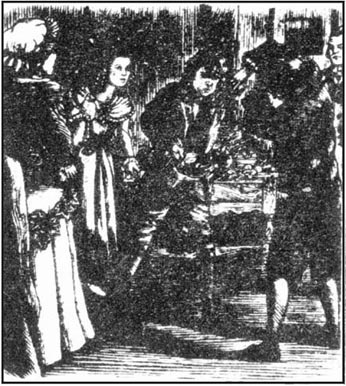
1775年
亨德雷回家参加他父亲的葬礼。更令人惊奇的是他带回来个妻子。她叫弗朗西丝，是个瘦削苍白的女人，总是咳嗽个不停。这会儿亨德雷成了这宅子的主人，他责令约瑟夫和我晚上待在后面的小厨房里，因为我们是下人，而他、他妻子和凯瑟琳则坐在正屋里。凯瑟琳和希斯克利夫的境遇大不相同。凯瑟琳收到了礼物，可以继续学习，但希斯克利夫被遣去与男人们一起在农庄干活，一个干农活的，只能被允许和我们在后面厨房里一起吃饭。他们俩像两个小野人似地长大了，亨德雷对他们的所作所为不闻不问，只要他们别碍着他的事；而他们就算被亨德雷惩罚也不吃他那一套。他们常常一大早就跑到荒原上，一整天都待在外面，就是为了气气亨德雷。只有我才关心这两个可怜的小东西，替他们担惊受怕。
一个星期天的晚上，该睡觉的时候还没见他们人影，亨德雷怒冲冲地命令我锁上前门。但我不想他们大冷天整夜待在外头，所以我就没关我的窗户，留意着他们。过了一会儿，我看到希斯克利夫走进了大门。见到只有他一个人，我大吃一惊。
“凯瑟琳哪儿去了？”我尖声叫道。
“在画眉山庄，在我们的邻居林顿家，”他回答，“让我进去，艾伦，我会跟你解释是怎么回事。”我下去开了门，我们一声不响地走上楼。
“别吵醒了主人！”我小声说，“现在说吧！”
“呃，凯瑟琳和我本打算走到林顿家，我们想看看伊莎贝拉和艾加·林顿是不是也像我们这样天天受他们父母的罚。”
“八成不会，”我答道，“我想他们都是好孩子，没必要惩罚。”
“不是那么回事儿，艾伦！猜猜我们从他们起居室的窗子望进去时看到了什么？那是一个很漂亮的房间，铺着软软的地毯，四壁洁白。凯瑟琳和我要是有那么一间该多好！但就在这漂亮房间的中间，伊莎贝拉和艾加·林顿正围着一条小狗又吵又闹！他们多傻啊，艾伦！如果凯瑟琳想要什么东西，我就会给她，她对我也一样。就算约瑟夫和那个坏亨德雷惩罚我，我也宁愿跟凯瑟琳在呼啸山庄，而不愿在画眉山庄与那两个傻瓜在一起！”
“小声点儿，希斯克利夫！但你还没告诉我凯瑟琳为什么没和你在一起？”
“呃，我们往里看的时候开始笑出声来，声音太大被听见了，他们就放狗追我们。就在我们要跑开的当儿，一条凶猛的大狗咬住了凯瑟琳的腿。我打了狗，让它放开她的腿，但林顿家的仆人出来抓住了我。他们肯定是把我们当贼了。凯瑟琳人事不醒，被抬进了房里，他们把我也拽了进去。我一直在不停地大叫大骂他们。
“‘这两个小恶贼！’老林顿先生说，‘这小子一定是个吉卜赛人，看他黑得像鬼一样！’林顿夫人一看到我，双手惊恐地举了起来。凯瑟琳睁开眼，艾加紧盯着她。
“‘妈妈，’他低声说，‘这小姑娘是呼啸山庄的欧肖小姐。我在教堂碰见过她一两次。看我们的狗把她腿咬的！出了这么多血！’
“‘欧肖小姐和一个吉卜赛人在一起！’林顿夫人叫道，‘绝对不可能！但我想你说得没错，艾加。这小姑娘穿着黑衣服，而欧肖先生是最近刚过世的。一定是她。我得马上把她的腿包扎一下。’
“‘她哥哥亨德雷怎么能让她和这么个伴儿到处跑？’林顿先生问，‘我想起来了，他是几年前欧肖先生从利物浦带回家的那个吉卜赛孩子。’
“‘他是个坏小子，你一眼就能看出来，’林顿夫人说，‘你没听见刚才他骂的粗话？我的孩子们听到了这些话，真让人害怕。’”
“我被推到院子里，但我待着没走，从窗子往里看。他们把凯瑟琳放到一个舒适的沙发上，为她清洗伤口，喂她蛋糕，给她葡萄酒喝。看到她的确受到善待我才离开他们家。她给林顿家那些笨蛋带去了些新鲜空气。他们对她好，我不奇怪。谁见到她都会喜欢她，你说是吗，艾伦？”
“恐怕你会招来惩罚的，希斯克利夫。”我黯然说道。
我说的不错。亨德雷警告希斯克利夫再也不许和凯瑟琳说话，要不就把他撵出呼啸山庄，还决定要管教凯瑟琳，让她言谈举止像个年轻淑女的样子。
她在画眉山庄林顿家里住了五个礼拜，直到圣诞节。她腿好了以后，举止比以前规矩多了。弗朗西丝·欧肖常去看她，给她带去漂亮衣服穿，劝说她要注意打扮，所以当久别的凯瑟琳终于回到家时，好像完全变了个人。我们看到的是一个漂漂亮亮、穿戴仔细的淑女，不再是那个毛手毛脚、帽子也不戴的小姑娘了。
跟我们大家打完招呼，她问起希斯克利夫。
“过来，希斯克利夫！”亨德雷叫道，“你可以像其他仆人一样欢迎凯瑟琳小姐回家。”
希斯克利夫成天在外面待惯了，也不换洗自己的衣服。他的脸和双手黑黑的，沾满尘土。即使这样，凯瑟琳见了他还是很高兴，冲上去吻了他。然后开怀笑了起来。
“你看上去真好笑，那么黑，还闷闷不乐的！但那是因为我看惯了艾加和伊莎贝拉的缘故，他们总是干干净净、整整齐齐的。唉，希斯克利夫，你把我忘了吗？”
但这孩子既觉得羞愧，又很骄傲，什么都没说，直到最后他突然受不了了。
“我不在这儿让你们嘲笑我！”他叫道，正准备跑出去，凯瑟琳一把抓住了他。
“怎么生气啦，希斯克利夫？你……你只不过看上去有点怪怪的，仅此而已。你真脏！”
她不大放心地看了看自己的手和新衣服。
“你不必来碰我！”他说着，把手抽了回来。“我喜欢脏，以后还是脏！”
当他窘迫地跑出房间时，亨德雷和他妻子大笑起来，看到拆开这两个年轻人的计划似乎就要得逞，他们很开心。
第二天是圣诞节。艾加和伊莎贝拉·林顿被请来吃午饭，他们的母亲答应了，条件是要保证她的宝贝儿要离那个“坏小子”远远的。我为可怜的希斯克利夫感到难过，趁欧肖一家去教堂的功夫，我帮他洗了澡换了干净衣裳。
“你太要强了，”替他梳那头黑发时我埋怨他，“你应该想想你们不能在一块儿凯瑟琳该多难过啊。别去嫉妒艾加·林顿！”
“我多想自己像他那样长着蓝蓝的眼睛，浅色的头发！我但愿自己能举止得体，将来还可以继承一大笔财产！”
“你的聪明和优点他可一点儿也没有！如果你心地善良，你就会变得英俊。谁又知道你父母是什么人物？说不定是国王和王后呢，比林顿家显赫多了！”
我就是这样鼓励希斯克利夫，让他对自己有更多自信。但当欧肖一家和林顿一家从教堂回来时，亨德雷二话没说就冲着希斯克利夫吼叫起来。
“我们吃完饭之前别让我看见你！你要是不马上照办我就扯你的长头发！”
“头发真长，”艾加说，“想不到他还能看见东西。”
希斯克利夫忍无可忍。他孤注一掷地往周围看了看，想找个家伙，接着抄起一盆热汤朝艾加泼了过去。艾加尖叫起来。亨德雷当即抓住希斯克利夫，把他推上了楼。
“亨德雷肯定会打他！”凯瑟琳哭道，“我不愿希斯克利夫挨罚！都是你，艾加，你惹怒了他！你为什么要跟他说话？”
“我没有，”艾加答道，眼里含着泪。“我答应妈妈不跟他讲话。我只是说到他，没对他说话。”
“哎，别哭了，”凯瑟琳奚落道，“你惹的事儿够多了。我哥来了。”
亨德雷满脸通红、气喘吁吁地回来了。
“这下他就会学乖了！”他说。“我们现在吃午饭吧！”
其他人好像把希斯克利夫抛到了脑后，但我看出凯瑟琳吃不下东西，我知道她是为她的朋友感到难过。那天晚上有一个巡回乐队来演奏音乐，在正屋里跳起了舞。凯瑟琳说音乐从高处听更柔美，就去坐到了黑黑的楼梯上。但我去找她时，发现她已经直接跑到房子的顶层，隔着上了锁的门跟希斯克利夫说话。然后她又爬到房顶上，从他的窗户钻了进去。我劝说他们俩照原样从房间里出来，因为我没有那扇门的钥匙。我把希斯克利夫领到下面仆人的厨房，那儿暖和，而凯瑟琳则回到客人们中间跳舞去了。
“你一定饿了，希斯克利夫，”我说，“你一整天没吃东西了。吃些圣诞蛋糕吧，吃吧。”
“我什么也吃不下，”他吼道，把头埋在双手里。“我要想个法子报复亨德雷。我只盼着他别先死了！他会后悔这样对我的，艾伦！”
5 Catherine and Edgar
5
Catherine and Edgar
1778 In the summer of this year Hindley's wife Frances had her first, and last, baby. They called the boy Hareton. But the poor woman had been ill for a long time, although we had not realized it, and died soon after Hareton was born.
Hindley only had room in his heart for two people, himself and his wife, so when she died, he was in despair. He neither cried nor prayed. Instead he swore at God and man, and drank himself to sleep every night. The servants all left him, except for Joseph and me. Joseph enjoyed being able to scold his wicked employer, with warnings from the Bible, and I could not leave Miss Catherine. After all, I had grown up with her and Hindley.
But the master's behaviour was a bad example for Catherine and Heathcliff. At fifteen, Catherine was the most beautiful girl for miles around, but she was proud and quick-tempered. She led what was almost a double life. At Wuthering Heights, under Heathcliff's influence, she annoyed Hindley, laughed at Joseph, and was rude to me. But at Thrushcross Grange, which she often visited, she showed a different, calmer side of her character, and was polite, intelligent and amusing. The Lintons all liked her, and poor Edgar had fallen in love with her.
Heathcliff was sixteen at this time. He did not have time to study any more, and the long hours of work on the farm made him tired and dull. There was always an angry expression on his face, and he did not even try to keep himself clean and tidy. He seemed to want people to dislike him. Catherine and he still spent time together, when he was not working in the fields, but he no longer expressed his fondness for her in words, and he looked angry if she touched or kissed him.
One afternoon, when Hindley had gone into town, Heathcliff came into the main room after lunch. I was helping Catherine to arrange her hair, as she had invited Edgar Linton to visit her while Hindley was absent.
'Catherine, are you going anywhere this afternoon?' asked Heathcliff. 'Why have you got that silk dress on? Nobody's visiting you, I hope.'
'No-o, I don't think so,' replied Catherine, looking quickly at me. 'But you should be at work by now, Heathcliff.'
'That devil Hindley isn't away very often. I'm taking a holiday. I won't work any more today. I'm staying with you this afternoon. He'll never know.'
Catherine thought for a moment. Somehow she had to prepare him for Edgar's visit. 'Isabella and Edgar said they might call here this afternoon. If they come, you'll be scolded for not working.'
'Tell Ellen to say you're busy and can't see them,' he said. 'Those friends of yours take up all your time. You spend most of your evenings with them, not with me.'
'Well, why should I always spend my time with you?' she asked crossly. 'What can you talk about? How can you amuse me?'
'You never told me before that you didn't like my company, Catherine!' cried Heathcliff.
Just then we heard a horse outside, and there was a light knock on the door. Edgar Linton entered, his handsome face full of delight at receiving Catherine's unexpected invitation. I wondered if Catherine was comparing her two friends, as Edgar came in and Heathcliff ran out.
'I haven't come too soon, have I?' asked Edgar politely.
'No,' answered Catherine. 'Leave us alone, Ellen.'
'I'm just doing my work, miss,' I replied, pretending to dust the furniture. Hindley had told me to be present if Edgar Linton came to visit Catherine.
She came up to me, and whispered crossly, 'Go away, Ellen!' Keeping her back to Edgar, she cruelly scratched my arm.
'Oh!' I screamed, to show Edgar what had happened. 'What a wicked thing to do, miss! You have no right to hurt me!'
'I didn't touch you, you lying creature!' she cried angrily, and, unable to control herself, hit me hard on the face.
'Catherine, love! Catherine!' cried Edgar, shocked.
The baby, Hareton, who followed me everywhere, immediately started sobbing and saying, 'Wicked aunt Catherine!'
She picked him up and shook the poor child until he screamed. Edgar rushed up to her and tried to stop her. At once she turned and hit him over the ear as hard as she could.
The young man looked very pale and went straight to the door.
'Where are you going, Edgar Linton?' she asked. 'Don't leave me! I shall be miserable all night!'
'Can I stay after you have hit me?' he replied. 'You've made me afraid and ashamed of you. I won't come here again!'
'Well, go then, if you want to!' she cried. 'I'm going to cry until I'm ill!' and she dropped on to the floor, her shoulders shaking and the tears rolling down her face.
Edgar managed to get as far as the door. But here he hesitated, and I called out to him to encourage him to leave.
'Miss is just a selfish child, sir! You'd better ride home and forget her!'
But as he could not stop looking at her, I knew there was no hope for him. Nothing would keep him away from her now. And sure enough, he came back into the room and shut the door. This time I left them alone, and stayed in the kitchen with little Hareton, but when I came to warn them that Hindley had returned, I realized that their quarrel had only brought them closer together.
soon after not long after a time. 不久。
swore v. past tense of swear, said bad words. 诅咒，咒骂。
scold v. speak angrily to someone because he has done something wrong. 责骂。
fall in love with sb begin to love with sb. 爱上（某人）。
dull adj. stupid, not clever. 迟钝的，呆笨的。
no longer adv. not now. 不再。
amuse v. make someone smile or laugh. 逗笑，逗乐。
pretend v. make it seem that something is true when it is not. 假装。
at once adv. immediately, now. 立即。
hesitate v. stop for a moment to show that you are not sure about what you are doing. 犹豫。
warn v. tell someone about danger or about a bad thing that will perhaps happen. 告诫。
凯瑟琳与艾加
5 凯瑟琳与艾加
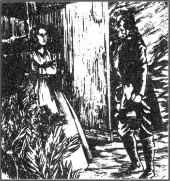
1778年
这年夏天，亨德雷的妻子弗朗西丝生下她的第一个，也是最后一个孩子。他们给这个男孩起名叫哈里顿。尽管我们没有意识到，其实那个可怜的女人已是病了不短时间，在生下哈里顿后不久就死了。
亨德雷的心里只容得下两个人，他和他妻子，她这么一死，亨德雷万念俱灰。他既不哭，也不祈祷。反而怨天尤人，一天到晚地喝酒。仆人们都离开了他，只剩下约瑟夫和我。约瑟夫很高兴能有机会引用《圣经》中的警句来斥责他那恶毒的主人几句，而我则离不开凯瑟琳。不管怎么说，我是与她和亨德雷一块儿长大的。
但主人的所作所为对凯瑟琳和希斯克利夫起了坏影响。凯瑟琳15岁时，出落成方圆数英里最漂亮的姑娘，但她傲气十足，性情暴躁。她几乎是过着一种双重生活在呼啸山庄，受希斯克利夫的影响，她惹亨德雷生气，拿约瑟夫取笑，对我也无礼。但在她常去的画眉山庄，就表现出她性格中恬静的一面，她彬彬有礼，聪明风趣。林顿一家都喜欢她，可怜的艾加已经爱上了她。
希斯克利夫当时l6岁。他再也没有时间去学习，终日在农庄里长时间劳作使他身心疲惫、无精打采。他的脸上总是有一种愤愤然的表情，也不上心保持自己的整洁。他好像是想让人讨厌他。他不下地干活儿时，凯瑟琳还时常和他待在一起，但他不再开口表达对她的深情，凯瑟琳碰他或吻他时，他甚至看上去很恼怒。
一天下午，亨德雷进城去了，希斯克利夫吃完午饭后进了正屋。我正在帮凯瑟琳梳理头发，因为她请了艾加·林顿在亨德雷不在家的时候来看她。
“凯瑟琳，你下午要去哪儿吗？”希斯克利夫问道，“为什么穿上了丝绸礼服？我希望不是有人要来看你吧。”
“没，没有，我不这么想，”凯瑟琳回答，说着瞥了我一眼。“但你现在应该上工了，希斯克利夫。”
“亨德雷那恶棍不常出去。我今天休假。我今天不干活儿了，下午和你在一起。他不会知道的。”
凯瑟琳寻思了一会儿。她反正要让他对艾加的造访有个准备。“伊莎贝拉和艾加说今天下午要来这儿。如果他们来了，你不干活儿会受责骂的。”
“告诉艾伦说你没空儿，不能见他们，”他说，“你的这帮朋友占用了你全部时间，你多数晚上都和他们在一起，而不是和我。”
“那，为什么我要总和你在一起呢？”她愠怒地问道。“我们能谈些什么？你能怎样逗我开心？”
“你以前从没告诉我你不喜欢和我在一起，凯瑟琳！”希斯克利夫大声道。
就在此时我们听到外面传来马蹄声，然后是轻轻的敲门声。艾加·林顿走进来，出乎意料地受到凯瑟琳的邀请，他那英俊的脸上满面春风。我搞不清凯瑟琳是不是在对她的两个朋友做比较，艾加进来时，希斯克利夫跑了出去。
“我没来得太早吧，是么？”艾加彬彬有礼地问。
“没有，”凯瑟琳回答，“出去吧，艾伦。”
“我还在干活儿呢，小姐，”我回答，假装掸家具上的灰尘。亨德雷吩咐我如果艾加·林顿来看凯瑟琳，我要在场。
她朝我走过来，懊恼地小声说，“走吧，艾伦！”她背对着艾加，恶狠狠地抓着我的胳膊。
“噢！”我尖叫起来，要让艾加看看到底是怎么回事。“这么做太恶毒了，小姐！你没权伤害我！”
“我没动你，你这个嚼舌头的东西！”她恼怒地喊道，失去了自控，重重地打在我的脸上。
“凯瑟琳，亲爱的！凯瑟琳！”艾加叫道，大吃一惊。
哈里顿那孩子一向是我去哪儿他去哪儿，他马上开始哭出声来，叫着，“坏姑姑凯瑟琳！”
她提起他，摇着这惨兮兮的孩子，直到他尖叫起来。艾加冲上去想制止她。她当即转过身，用尽全身力气打了他一耳光。
这年轻人面色惨白，直奔门而去。
“你去哪儿，艾加·林顿？”她问道，“别离开我！我整夜都会难受的！”
“你打了我，我还能待下去么？”他回答，“你让我怕了你，为你感到羞耻。我不会再来了！”
“好，走罢，随你便！”她哭喊道，“我要哭出病来！”说着倒在地板上，肩膀战栗着，眼泪顺着脸庞淌下来。
艾加已走到门口。但在那儿犹豫着，我向他喊着，催他离开。
“小姐只是个自私的孩子，先生！你最好骑马回家，忘了她吧！”
但他忍不住看着她，我就知道他没指望了。现在什么都没法使他离开她。自然而然，他回到房里关上门。这次我不管他们了，到厨房和小哈里顿待着，但当我去提醒他们亨德雷回来了时，我看得出他们这一吵不过是让他们走得更近了。
6 Heathcliff disappears
6
Heathcliff disappears
1778—9 Hindley came into the kitchen, swearing terribly, just as I was about to hide little Hareton in a cupboard. I was always afraid that Hindley would hurt his small son, either by accident or on purpose, when he was drunk, so I tried to keep Hareton out of the way. But this time Hindley discovered my plan.
'Ah, you keep my son in a cupboard, do you!' he cried angrily, picking up a sharp kitchen knife. 'With the devil's help I'II make you swallow this, Ellen!' And he pushed the knife between my teeth.
I was never afraid he would hurt me, and calmly took the knife out of my mouth.
'But that can't be my son, can it?' he continued aggressively, staring at the frightened little boy. 'If it is, he should be punished for not running to greet his father. Perhaps I'll cut his ears off!' And then suddenly his manner changed. 'No, Hareton, darling, don't cry! Kiss me, kiss your father! What? You won't? Then I'll break your neck!'
Poor Hareton, screaming wildly, was carried upstairs by his father. Suddenly Hindley stopped on the stairs to listen, almost forgetting what he was holding. Heathcliff had come into the house and stood at the bottom of the stairs, looking up. Just then the child jumped out of Hindley's arms and fell. I only had time to gasp in horror, before I saw that Heathcliff had caught him.
Heathcliff stared down at the child he was holding. He must have felt sorry he had saved the life of his enemy's son. I rushed to take the poor little boy in my arms, and Hindley came slowly downstairs.
'Look what you've done, Mr Hindley!' I cried. 'You nearly killed your own son! What would his mother say if she were alive?'
'Take him away, Ellen. And you, Heathcliff, go away too. I won't murder you tonight, unless perhaps I set the house on fire. But that depends how I feel.' And he poured himself a drink.
'Don't drink any more, Mr Hindley!' I begged.
'What difference does it make?' he growled. 'Get out, both of you! To the devil with you!'
We left him swearing at us, and went back into the kitchen.
'It's a pity he can't kill himself with drink,' muttered Heathcliff. 'Dr Kenneth says he'll live longer than any of us, he's so strong.'
He walked out of the door and, I thought, into the fields. In fact I discovered later that he was sitting just under the window, and could hear everything that was said in the kitchen.
I was singing little Hareton to sleep when Catherine came in.
'Are you alone, Ellen?' she whispered. 'Where's Heathcliff?'
'He's out on the farm,' I answered.
She looked sad and worried, and I even saw a tear or two on her face. But I had not forgotten how she had lied, and behaved so badly to me as well as to Edgar Linton, so I did not feel sorry for her, or encourage her to talk.
'Ellen, will you keep a secret for me?' she asked in the end, giving me her sweetest smile. 'I must tell you! I need your advice. Today Edgar Linton has asked me to marry him, and I gave him an answer. Now, before I tell you if it was yes or no, you tell me which I should have said.'
'Really, Miss Catherine, how can I know? Perhaps you should have refused him. He must be a fool to ask you, after you were so rude and violent this afternoon.'
'Well, I accepted him, Ellen!' she said crossly. 'But should I have done so? Should I? What do you think?'
'First, do you love him?' I asked.
'Of course I do,' she replied.
'Why do you love him, Miss Catherine?'
'Well, I do, that's enough. Well, because he's handsome, and a pleasant companion.'
'Oh, that's bad,' I said, shaking my head.
'And because he loves me.'
'That's worse.'
'And because he'll be rich, and I shall be the most important woman for miles around.'
'Worst of all. But there are several other handsome, rich young men in the world. Why don't you marry one of them?'
'I don't know any of them. I only know Edgar.'
'Well, I don't know why you're unhappy, Miss Catherine. Your brother will be pleased, and Mr Edgar's parents will, too. You love Edgar, and Edgar loves you. What's the problem?'
'Here! And here!' replied Catherine, beating her head and her chest. 'In my heart and soul I know I'm wrong! Ellen, I can't live apart from Heathcliff! He is more myself than I am. Our souls are the same! I have nothing in common with Edgar. But I can't marry Heathcliff now! Hindley has made him become a poor, dull farm worker. He'll never know how I love him.'
I suddenly heard a movement outside the window, and saw Heathcliff stand up and walk away. I realized he had been listening until he heard Catherine say she could not marry him. Then he stayed to hear no more.
'Quiet, Miss Catherine!' I said. 'Just imagine how hard it will be for Heathcliff when you marry Mr Edgar! He'll have no friends at all when you leave him.'
'Leave him? Why should we be separated?' she asked angrily. 'Who will separate us? Nobody will dare! Edgar must learn to accept him as my friend. Didn't you ever think, Ellen, that if Heathcliff and I married, we would be very poor? But if I marry Edgar, I can help Heathcliff with my husband's money.'
'That's the worst reason you've given so far for marrying Mr Edgar,' I replied, shocked.
'It isn't! Heathcliff is more important to me than myself. My love for Edgar is like the leaves on the trees—I'm sure time will change it. But my love for Heathcliff is like the rocks in the ground—not beautiful, but necessary and unchanging. He's always, always in my heart—'
Just then Joseph entered the kitchen. I whispered to Catherine that I was sure Heathcliff had heard some of what she said. She jumped up, frightened, and rushed outside. But although we all looked everywhere for Heathcliff, there was no sign of him that night, or for many nights in the future.
At about midnight, while we were still waiting for him to come home, we noticed the wind was getting stronger. We could hear it whistling down the chimney, and howling all around the house. Suddenly there was a terrible crash of thunder, and the branch of a tree fell on to the roof. We were not hurt, but Joseph immediately dropped on to his knees to pray. The rain was beating down on the windows, but Catherine stayed outside, although by now her hair and clothes were completely wet.
In the end we all went to bed. I managed to persuade Catherine to come in, but she insisted on sleeping in the kitchen, in case Heathcliff returned during the night. In the morning we discovered that she had caught a fever, as a result of getting wet. She became seriously ill, and it was several weeks before Dr Kenneth would allow her out of bed.
When she recovered, she was invited to stay for a while at Thrushcross Grange. Unfortunately old Mr and Mrs Linton caught the fever too, and died within a few days of each other. Catherine returned to us, prouder and quicker-tempered than ever, but not as strong as before.
'If she gets ill again, it could be fatal,' Dr Kenneth warned us. 'My advice to you is to do whatever she wants, and don't make her angry!' So we had to obey all her orders, and Joseph and I were not allowed to scold her any more.
Edgar Linton was still in love with her, and thought himself the happiest man on earth when he married her three years after his parents' death. She insisted on having me with her, so we moved together to Thrushcross Grange, although I was very sad to leave little Hareton with his father.
It's very late, Mr Lockwood. I think you should go to bed, or you'll be ill tomorrow. I can tell you the rest of the story another time.
Four weeks later In fact I was ill the next day, and have been ill since then. The terrible night I spent at Wuthering Heights was the cause of my illness, and I blame Mr Heathcliff for it. Dr Kenneth has warned me I won't be able to go out until the spring. All I can do is lie in bed, listening to the howling wind and staring at the grey northern sky.
So I've decided to ask Mrs Dean to come upstairs and finish telling me her story. She tells me she's happy to continue.
cupboard n. piece of furniture, for keeping things in. 碗橱，柜。
on purpose adv. with a particular idea. 故意地，有目的地。
set something on fire make something begin to burn. 点燃。
pour v. to flow steadily and rapidly. 倒，灌。
whisper v. speak very softly. 低声说，耳语。
handsome adj. good-looking. 漂亮的。
companion n. someone who is with another person. 同伴，朋友。
have something in common have some of the same interests as another person. 有共同点。
separate v. divide something. 分开。
in the future from now. 将来，从此以后。
chimney n. sort of big pipe that takes smoke from a fireplace out of a building. 烟囱。
thunder n. big noise in the sky when there is a storm. 雷。
insist on say strongly that you must do something. 坚持。
blame v. say that is because of someone or something that wrong happened. 责怪、埋怨。
continue v. start again after stopping. 继续。
希斯克利夫失踪了
6 希斯克利夫失踪了
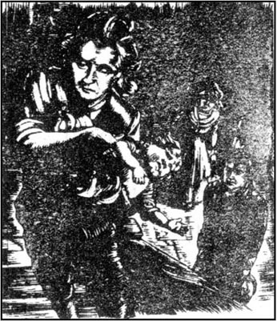
1778—1779年
我正想把小哈里顿藏进碗橱里，亨德雷就骂骂咧咧地进到厨房。我一直怕亨德雷会在喝醉了酒后有意无意地伤害他的小儿子，所以我想法儿让哈里顿别碍事。但这次亨德雷看出了我的心思。
“啊，你把我儿子放在碗橱里，是吗！”他火气冲冲地嚷道，拿起一把锋利的菜刀。“魔鬼帮帮我，我要让你把它吞下去，艾伦！”说着把刀塞进我的牙缝。
我从没怕过他会伤害我，很镇静地把刀从我口里拿出来。
“但这不可能是我儿子，对吗？”他又挑衅似地接着说道，瞪着被吓坏了的小男孩。“如果这是，他应该受到惩罚，因为他没跑出来问他父亲好。或许我会割掉他的耳朵！”然后他的态度突然变了，“不，哈里顿，亲爱的，别哭！亲亲我，亲亲你父亲！怎么？你不？那我就拧断你的脖子！”
可怜的哈里顿狂呼乱叫着被他父亲抱向楼上。亨德雷突然在楼梯上停下听着什么，几乎忘了他抱的是什么。希斯克利夫来到屋里，站在楼梯下面往上看。就在这时那孩子跳出亨德雷的手臂，掉落下来。就在我吓得倒吸冷气的时候，只见希斯克利夫一把接住了他。
希斯克利夫紧盯着他手中抱着的孩子。他一定后悔救了他仇人儿子的命。我赶上去把那可怜的小男孩接到我怀里，亨德雷慢条斯理地朝楼下走来。
“看您做了些什么，亨德雷先生！”我叫道，“您差点弄死自己的儿子！如果他妈还活着会怎么说？”
“把他带走，艾伦。还有你，希斯克利夫，也走开。我今晚不会杀你，除非可能我把这房子烧了。但那得看我心情如何。”他给自己倒了杯酒。
“别再喝啦，亨德雷先生！”我乞求道。
“那又怎么样？”他咆哮道，“滚，你们两个都滚！你们见鬼去吧！”
我们没理会他对我们的咒骂，回到厨房。
“可惜没喝死他，”希斯克利夫低声说，“肯尼士大夫说他会比我们命长，他那么壮。”
他走出门，我想是到田里去了。其实到后来我得知他当时坐在窗户下面，厨房里说什么他都能听见。
我哼着曲儿催小哈里顿入睡时凯瑟琳进来了。
“你一个人吗，艾伦？”她小声说，“希斯克利夫哪儿去啦？”
“他去农庄了。”我回答。
她模样忧郁，心事重重，我甚至看到她脸上有一两滴泪珠。但我没忘她是如何说瞎话的，还有对我和艾加·林顿那样粗暴，所以我不同情她，也不想听她说什么。
“艾伦，你肯为我保密吗？”她最后问道，露出了她最甜美的微笑。“我必须告诉你！我需要你的意见。今天艾加·林顿向我求婚了，我给了他答覆。现在我先不说，你告诉我应该怎么说。”
“说真的，凯瑟琳，我怎么知道？也许你应该回绝他。今天下午你对他那么粗暴无礼他还向你求婚，一定是个傻瓜。”
“哼，我接受了他，艾伦！”她愠怒地说道，“可我该这么做么？我应该么？你怎么想？”
“首先，你爱他吗？”我问。
“我当然爱他。”她回答。
“你爱他什么，凯瑟琳小姐？”
“这，我爱他，这就够了。嗯，因为他英俊，跟他在一起很快活。”
“哦，不妙。”我摇摇头说。
“还因为他爱我。”
“更糟糕。”
“还因为他会很富有，我会成为方圆数英里最尊贵的女人。”
“糟得不能再糟了。那这世上还有其他一些英俊富有的年轻人。你怎么不挑一个嫁？”
“我不认识他们，我只认识艾加。”
“那，我就不知道你为何闷闷不乐了，凯瑟琳小姐。你哥哥会高兴的，艾加先生的父母也会高兴的。你爱艾加，艾加也爱你。有什么问题？”
“这儿！还有这儿！”凯瑟琳答道，边说边敲着自己的头和心口。“在我心灵深处我知道我错了！艾伦，我生命里不能没有希斯克利夫！他比我更像我自己！我们心心相印！而我与艾加毫无共同之处。但我现在不能嫁给希斯克利夫！亨德雷把他变成了一个穷困、枯燥乏味的农场工人。他永远不会知道我有多爱他。”
我突然听见窗外有动静，然后看见希斯克利夫站起来走开了。我意识到他一直在听，直到凯瑟琳说她不会嫁给他。之后他就没留下来听了。
“静一静，凯瑟琳小姐！”我说，“想想你嫁给艾加对希斯克利夫有多残酷啊！你离开他，他就一个朋友也没有了。”
“离开他？我们为什么要分开？”她怒问道，“谁会拆散我们？没人敢！艾加要学着把他作为我的朋友来接受他。你难道没想过，艾伦，如果希斯克利夫和我结婚，我们就会一贫如洗吗？可如果我嫁了艾加，我可以用我丈夫的钱帮助希斯克利夫。”
“到目前为止，这是你说的要嫁给艾加先生的最糟糕的一个理由，”我答道，感到很吃惊。
“不是！对我来说，希斯克利夫比我自己还重要。我对艾加的爱就像树叶——肯定会随着时间而变化。但我对希斯克利夫的爱如地上的磐石——虽不华丽，却必不可少，一成不变。他永远、永远在我心里——”
就在这时约瑟夫进了厨房。我轻声告诉凯瑟琳我肯定希斯克利夫听到了她说的一些话，她神色惊恐地跳起来，冲了出去。那天晚上，虽然我们哪儿都找遍了，也没见到希斯克利夫的影子，此后很多天他都没露面。
那天午夜，我们还坐着等他回家，注意到风越刮越大。我们能听见风呼啸着从烟囱里灌下来，房子周围一片怒号声。突然一声骇人的霹雷，一根树枝落到房顶上。我们没伤着，可约瑟夫当时就扑通跪在地上开始祈祷。雨敲打着窗户，但凯瑟琳待在外面，尽管她的头发和衣裳此时都已经湿透了。
最后我们都上床睡觉去了。我把凯瑟琳劝进屋来，可她坚持要睡在厨房，怕希斯克利夫夜里回来。第二天早晨我们发现她发烧了，因为淋湿的缘故。她病得很厉害，过了好几个礼拜肯尼士大夫才允许她下床。
她病好后，被请去画眉山庄去住一段。不幸的是年迈的林顿夫妇也患了热病，几天之内相继去世。凯瑟琳回到我们这儿，比以前更骄横，脾气也更暴躁了，但身体不如以前健壮了。
“要是她再得病，可能会致命，”肯尼士大夫告诫我们，“我劝你们顺着她，别让她生气！”因此我们得对她言听计从，不许约瑟夫和我再责备她。
艾加·林顿依然爱着凯瑟琳，他在父母过世三年后娶了她，自以为是世上最幸福的人。她执意要我陪她，所以我们一起搬到画眉山庄，尽管把小哈里顿留给他父亲让我很难过。
天很晚了，洛克伍德先生。我觉得您该睡觉了，否则明天会生病的。我再找时间给您讲剩下的事。
四周后事实上第二天我是病了，一直卧床不起。病因就是我在呼啸山庄度过的那可怕的一夜，我把这归咎于希斯克利夫先生。肯尼士大夫告诫我春天之前不能出门。我只好躺在床上，听着风的怒号，盯着北方灰暗的天际。
于是我决定请迪恩夫人上楼来给我讲完她的故事。她说她乐意讲下去。
7 Heathcliff returns
7
Heathcliff returns
1783 Well, sir, when Miss Catherine became Mrs Linton, and we went to live at Thrushcross Grange, I must say I was surprised and pleased by her behaviour. She showed great fondness for her husband, and for his sister, Isabella. He, of course, was very anxious that no one should disobey her, or make her angry. If she was depressed for a time, he blamed it on the illness she had had, and was sympathetic. But for most of the time, I believe they shared a deep and growing love for each other.
Unfortunately this happiness did not last. One evening I was bringing in a basket of apples from the garden, when a voice behind me said, 'Ellen, is that you?'
It was a deep, rather unusual voice. I turned, to see a tall, dark man in the shadow near the kitchen door.
'Don't you know me?' he asked. 'Look, I'm not a stranger!'
'What!' I cried in surprise, for it had been four years since he disappeared. 'Heathcliff! Is it really you?'
'Yes,' he replied, looking up at the windows of the house. 'Are they at home? Where is she? Tell me, Ellen! I must speak to her!'
'I'm not sure if you should see her,' I hesitated. 'Will the shock be too much for her?'
'Go and tell her I'm here, Ellen!' he said impatiently. 'Don't make me suffer like this!'
I left him at the door, and went upstairs to find Mr and Mrs Linton. They were sitting quietly together, looking out over the peaceful valley. The room, and the view, and the two people, seemed so calm that I did not want to disturb them. But I had to deliver my message.
'A man wants to see you, madam,' I muttered.
'I'll go downstairs and see him then,' replied Catherine. 'Bring the tea up, Ellen, while I'm away.' She left the room.
'Who is it, Ellen?' asked Mr Edgar.
'It's that Heathcliff, sir. You remember, he used to live at Wuthering Heights.'
'What! The gipsy, who worked on the farm?' he cried.
'Mrs Linton would be angry if she heard you talking about him like that, sir. She was very upset when he ran away. She's very fond of him, you know.'
Mr Edgar put his head out of the window and called to his wife, 'Don't stand there in the cold, love! Bring the person in, if it's anyone special.'
Catherine rushed upstairs and into the room, wild and breathless. She threw her arms round her husband's neck.
'Oh Edgar darling! Heathcliff's come back!'
'Well, well,' said Mr Edgar crossly, 'there's no need to get excited.'
'I know you didn't like him,' she said, 'but please, I beg you to be friends with him now. Shall I ask him to come up?'
'You're suggesting inviting him up here, into our sitting room? Don't you think the kitchen is more suitable for him?'
Catherine looked at her husband, half angry and half laughing. 'No,' she said, 'I can't sit in the kitchen. Ellen, bring two tables, one for your master and Miss Isabella, the other for Heathcliff and myself. We'll sit apart from them, as we're of a lower class! Will that please you, Edgar darling? Decide quickly! I must have him near me!'
'Ellen, you go and bring him up,' said Mr Edgar. 'And Catherine, try not to behave foolishly. Remember, he's only a servant!'
When Heathcliff entered the sitting-room, I was surprised to see how much he had changed. He wore a confident, intelligent expression on his face, and his manner was no longer rough. Although I recognized the same black fire in his eyes, the farm boy had become a gentleman.
Mr Edgar was as surprised as I was, but welcomed Heathcliff as politely as he could. However, he grew more and more annoyed as he watched his wife's delighted face. She could not take her eyes off Heathcliff.
'Tomorrow I won't be able to believe that I've seen and touched you, Heathcliff!' she cried, catching hold of his hands. 'But how cruel of you to run away and keep silent for four years, and never think of me!'
'I've thought of you more than you've thought of me,' he replied quietly. 'I heard you had married, Catherine, and I came, just to see you once, and then take my revenge on your brother Hindley. Your welcome may change my plans. You know, I've had a bitter, hard life since I last heard your voice, and if I've survived, it's all because of you!'
'Catherine,' said Mr Edgar, trying to remain polite, 'please pourout the tea, or it will be cold. Mr Heathcliff will have a long walk to wherever he's staying tonight, and I'm thirsty.'
But Catherine was too excited, and Mr Edgar too angry, to drink any tea. After a while their guest left. We discovered that he had been invited to stay at Wuthering Heights, by Hindley. I could not understand why Hindley, who hated him, would want his company, and I felt sure it would have been better for all of us if Heathcliff had never come back.
Catherine could not keep her happiness to herself. In the middle of the night she woke me to talk about Heathcliff.
'I just can't sleep, Ellen!' she said. 'And Edgar won't listen when I tell him how happy I am! He's so selfish!'
'He never liked Heathcliff,' I replied, 'and he'll be angry if you go on talking about him. You think he's weak, but he could be as determined as you, about something he thinks is important.'
'No!' she laughed. 'I have such confidence in Edgar's love that I think I could kill him, and he wouldn't blame me for it. He will have to learn to accept Heathcliff as my friend.'
'Do you know why Heathcliff is staying at Wuthering Heights?'
'Oh, yes. He explained that he went there to look for me. Hindley asked him to play cards, and when he discovered Heathcliff had a lot of money, invited him to stay there. You know how greedy my brother is. He'll make Heathcliff pay rent, and hope to win money from him at cards. Heathcliff wants to stay there to be near me. I'm so happy, Ellen! And I want everyone around me to be happy too!'
Catherine behaved so sweetly to her husband in the next few days that Thrushcross Grange seemed full of sunshine, and in spite of his doubts, Mr Edgar allowed Heathcliff to visit her regularly. However, Heathcliff's visits produced a result which none of us had expected. Isabella, Mr Edgar's sister, a pretty girl of eighteen, suddenly declared that she was in love with Heathcliff. Mr Edgar, who loved her dearly, was shocked. He knew that if he and Catherine had no sons, Isabella would inherit the considerable Linton fortune. He did not like the idea of the fortune passing to Heathcliff, as Isabella's husband. But more importantly, he suspected that Heathcliff was hiding his ture wickedness under his gentlemanly appearance.
Catherine tried hard to persuade Isabella that Heathcliff was not worth loving, but poor Isabella was jealous of Catherine's relationship with Heathcliff and would not listen. Finally, Catherine told Heathcliff himself that Isabella was in love with him. She thought she knew what his answer would be.
'How could I ever love that stupid girl?' he asked. 'She has a miserable pale face, and weak blue eyes, just like your husband! But... she will inherit the family wealth from him, won't she?'
'That's true,' replied Catherine. 'But don't think about that, Heathcliff. I hope Edgar and I will have several sons, and then they will inherit it.'
Catherine did not speak of this matter again, but I am sure Heathcliff often thought about it. I watched him carefully in the next few days. I hoped he would do nothing to hurt Mr Edgar, who was a kind master to me. I was worried, too, about what was happening at Wuthering Heights. Hindley and his son Hareton seemed like lost sheep to me, and I knew there was a wicked wolf just waiting for the chance to attack them.
depress v. make someone feel sad and dull. 使沮丧，使消沉。
sympathetic adj. feeling sorry for someone. 同情的。
disappear v. go away so that it cannot be seen. 消失，失踪。
valley n. low land between hills or mountains. 山谷，峡谷。
deliver v. take something to the place where it must go. 传递，送上。
be suitable for be right for that person, happening, place, etc. 合适的，适当的。
keep silent keep nothing, keep a secret. 沉默不语，保守秘密。
survive v. go on living through a difficult or dangerous time. 幸存，活下来。
thirsty adj. wanting something to drink. 口渴的。
selfish adj. thinking too much about yourself and what you want. 自私的。
greedy adj. wanting too much. 贪婪的。
in spite of not taking notice of. 不管。
regularly adv. at regular times. 定期地。
suspect v. think that something is true, but not be certain. 猜想，怀疑。
stupid adj. foolish. 愚蠢的。
希斯克利夫回来了
7 希斯克利夫回来了
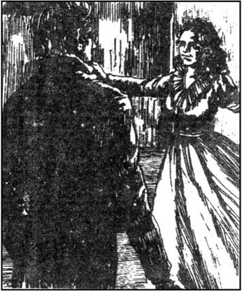
1783年
好的，先生。凯瑟琳小姐成了林顿夫人，我们就去住到画眉山庄，我得说她的表现让我又惊又喜。她看上去对丈夫非常疼爱，对他妹妹伊莎贝拉也不错。自然，他很小心不叫人逆她的愿或给她气生。在她心情郁闷时，他就归咎于她得的那场病，大加同情。但在大部分时间里，我相信他们相互之间的深情不断增长着。
遗憾的是这种幸福没有持续下去。一天晚上，我正拎着一篮子苹果从花园往家里去，这时我身后有一个声音说道，“艾伦，是你么？”
这声音低沉，不大熟悉。我转过身，看到在厨房门旁的阴暗处有一个又高又黑的人。
“你不认识我了？”他问道，“瞧，我不是个生人！”
“什么！”我惊叫道，因为他已经失踪四年了，“希斯克利夫！真是你吗？”
“是的，”他回答，抬头看着房子的窗户。“他们在家吗？她在哪儿？告诉我，艾伦！我得和她说话！”
“我说不好你是不是应该见她，”我犹豫道，“这会不会对她太突然了？”
“去通报她我在这儿，艾伦！”他不耐烦地说，“别让我这样受苦！”
我把他留在门口，上楼去找林顿夫妇。他们静静地坐在一起，眺望着宁静的山谷。这房间、这景致，还有那两个人，看上去那么平和安宁，我真不愿打搅他们。可我不得不通报讯息。
“有个人想见您，夫人。”我低声说。
“那我就下楼去见他，”凯瑟琳答应，“艾伦，我不在这会儿你把茶端上来。”她离开了房间。
“是谁，艾伦？”艾加先生问。
“是那个希斯克利夫，先生。您记得，他以前住在呼啸山庄。”
“什么！那个吉卜赛人，在农庄干活儿的那个？”他叫喊道。
“先生，如果林顿夫人听见您这么说他，会生气的。他出走时她很难过。她非常喜欢他，这您知道。”
艾加先生把头探出窗子，高声对他妻子说，“别站在凉地里，亲爱的！要是贵客，就把他带进来。”
凯瑟琳冲上楼进了房间，兴奋若狂，气喘吁吁。她张开双臂，一下搂住了丈夫的脖子。
“哦，亲爱的艾加！希斯克利夫回来啦！”
“好，好，”艾加先生不痛快地说道，“没有必要激动。”
“我知道你不喜欢他，”她说，“但求求你，求你现在跟他做朋友。我能让他上来么？”
“你想请他上到这儿，到我们的起居室？你难道不觉得他去厨房更妥当吗？”
凯瑟琳似怒似笑地看着她的丈夫。“不，”她说，“我不能坐到厨房里。艾伦，搬两张桌子，一张给你的主人和伊莎贝拉，另一张给希斯克利夫和我。我们不跟他们一起坐，因为我们层次低！这样你高兴了罢，亲爱的艾加？快拿主意！我必须让他离我近点！”
“艾伦，你去把他领上来，”艾加先生说，“还有，凯瑟琳，你别做傻事。记住，他只是个下人！”
当希斯克利夫进到起居室，我惊讶地看到他变化太大了。他脸上带着自信、睿智的表情，举止也不再粗野。虽然我还能看出他的眼中依然有一团黑色的火焰，但这个干农活的小伙子已经变成了一个绅士。
艾加先生同我一样感到惊讶，但他还是尽可能礼貌地对他表示欢迎。可当看到妻子满脸喜色，他越来越气恼。她的目光无法离开希斯克利夫。
“到明天我都不能相信我已经见到了你，摸到了你，希斯克利夫！”她抓住他的手，兴奋地说，“可你多忍心啊！出走之后杳无音讯都四年了，也从不想我！”
“我想你要比你想我多，”他平静地说，“我听说你结婚了，凯瑟琳，我是来见你一面，然后去报复你哥哥亨德雷的。你对我的欢迎也许会改变我的计划。从最后一次听到你声音到现在，我一直过着辛酸艰苦的生活，如果说我还能幸存下来，那都是为了你！”
“凯瑟琳，”艾加先生说道，尽量保持着礼节，“请倒茶吧，否则茶就凉了。希斯克利夫先生还要走一段长路到他今晚住的地方，我也渴了。”
但凯瑟琳兴奋异常，而艾加先生怒气很盛，都喝不下茶。过了一会儿，他们的客人走了。我们发现他被请去住在呼啸山庄，是亨德雷先生邀请的。我无法理解亨德雷那么恨他，为何还想和他在一起，我也肯定如果希斯克利夫压根儿没回来对我们大家都会更好些。
凯瑟琳无法独享她的快乐。大半夜叫醒我聊希斯克利夫的事。
“我就是睡不着，艾伦！”她说，“我要跟艾加讲我有多高兴，他又不肯听！他真自私！”
“他向来不喜欢希斯克利夫，”我回答，“如果你再谈他，他会生气的。你认为他软弱，但只要是他认为重要的事。他可能像你一样执著。”
“不！”她笑道，“我对艾加的爱太有信心了，我想我就是杀了他，他也不会怪我的。他要学会把希斯克利夫当我的朋友来接受。”
“你知道希斯克利夫为什么住在呼啸山庄吗？”
“噢，是的。他解释说他去那儿找我。亨德雷请他玩牌，当他看出希斯克利夫很有钱，就请他住在那儿了。你知道我哥哥有多贪财。他会收希斯克利夫的租金，而且指望玩牌赢他的钱。希斯克利夫住在那儿是想离我近点儿。我真高兴，艾伦！我希望我身边的每个人也都高兴！”
在接下去的日子里凯瑟琳对她丈夫表现得非常亲热，画眉山庄似乎阳光明媚，因此尽管艾加先生心存疑窦，他还是允许希斯克利夫常来看她。然而希斯克利夫的来访却导致了一个我们都未曾料想的结果。艾加先生的妹妹伊莎贝拉，一个18岁的可爱姑娘，突如其来地公开说她爱上了希斯克利夫。艾加先生对妹妹十分钟爱，对此感到震惊。他明白如果他与凯瑟琳没有儿子的话，伊莎贝拉将继承林顿家族相当可观的财产。他不想让财产落入成了伊莎贝拉丈夫的希斯克利夫手中。而更非同小可的是，他怀疑在希斯克利夫绅士般的外表下隐藏着真实的险恶居心。
凯瑟琳竭力劝伊莎贝拉说希斯克利夫不值得她爱，但可怜的伊莎贝拉妒嫉凯瑟琳与希斯克利夫的关系，对此听不进去。最后，凯瑟琳告诉希斯克利夫本人说伊莎贝拉爱上了他。她以为自己知道他会怎么回答。
“我怎么能爱那个傻姑娘？”他反问道，“她那张脸凄惨苍白，一双蓝眼睛也毫无神采，像你丈夫似的！可……她将从他那儿继承家族的财产，对吧？”
“对，”凯瑟琳答道，“但别惦记那个，希斯克利夫。我希望艾加和我会生几个儿子，那么他们就会继承财产。”
凯瑟琳没再提起这件事，可我肯定希斯克利夫经常在盘算着它。在过后的几天里我留心观察他。我希望他别做什么伤害艾加先生的事，艾加先生对我是个仁慈的主人。我也在担心呼啸山庄的事态如何在我看来，亨德雷和他儿子哈里顿像是迷途的绵羊，而我知道有一只恶狼正在伺机对他们发起进攻。
8 Catherine is ill
8
Catherine is ill
1783 The next time Heathcliff came to Thrushcross Grange, he met Isabella by chance in front of the house. I was watching from the kitchen window, as he went up to her, and, supposing that no one else could see him, kissed her.
'Look, madam!' I cried to Catherine, who was passing through the kitchen. 'That devil Heathcliff told you he could never love Miss Isabella! And now he's kissing her!'
So when Heathcliff entered the house, Catherine was ready to scold him.
'Leave Isabella alone, Heathcliff!' she ordered. 'You'll make Edgar angry!'
'You think I'm afraid of that weak little creature?' he growled. 'Anyway, what difference does it make to you? I can kiss her if she likes it. I'm not your husband, you needn't be jealous of me!'
'I'm not jealous of you!' replied Catherine. 'If you like Lsabella, you can marry her. But do you like her?'
'It's you I want to talk about, Catherine. You know you've treated me badly. And I'm going to have my revenge! Thank you for telling me Isabella's secret. I swear I'll make good use of it!'
At this point I went to look for my master, and told him that Catherine and Heathcliff were quarrelling in the kitchen.
'How can my wife call that man a friend?' he cried angrily. 'I've been too weak with her. I can't allow him to visit her any more. Call two servants, Ellen.' He went to the kitchen. I followed him, telling the servants to wait in the hall.
'Catherine!' said Mr Edgar to his wife as he entered. 'Do you think it's right to listen to this wicked man's talk?'
'Have you been listening at the door, Edgar?' asked Catherine coldly. Heathcliff laughed, which made Mr Edgar even angrier.
'You, sir,' he said to Heathcliff, 'are poisoning our family life. I should never have accepted you as Catherine's friend. I must inform you that you will never be allowed to enter this house again, and that if you don't leave within three minutes, you will be thrown out.'
'Well, well!' replied Heathcliff, looking scornfully at Mr Edgar's small figure. 'So, you're going to throw me out yourself, are you?'
My master looked towards the door. I realized he wanted to call the servants, as he knew he was not strong enough to fight Heathcliff alone. But Catherine must have guessed his plan. She hurried to the door and locked it. Mr Edgar looked at her in angry surprise.
'You must fight him like a gentleman, without anyone to help you!' she told her husband. 'That'll teach you to scold me!'
Mr Edgar tried to get hold of the key, but she threw it quickly into the hottest part of the fire. He went very pale, and could not stop his whole body trembling.
'Oh Edgar!' cried his wife. 'You've lost the fight already! You aren't a man, you're a mouse!'
'So that,' said Heathcliff, pointing at Mr Edgar, 'is the thing you preferred to me, Catherine. Is he crying, or is he going to die of fear?'
He went up to look more closely at Mr Edgar, who suddenly recovered and hit Heathcliff hard on the neck. While Heathcliff was getting his breath back, Mr Edgar walked out of the other kitchen door into the garden.
'Now you'll never be able to come here again,' said Catherine to Heathcliff. 'Go away quickly! He'll return with men and guns.'
Heathcliff was sensible enough to take her advice. He broke down the locked door and escaped, just as the master and his men returned.
Catherine, who was over-excited, ordered me to go upstairs with her. I hoped she would not discover that I had told Mr Edgar about her quarrel with Heathcliff.
'I'm wild with anger, Ellen!' she said, when we reached the sitting-room. 'All this trouble is because of Isabella! Tell Edgar I'm in danger of becoming seriously ill. I hope it's true, I want to frighten him. He's upset me badly. Why did he listen to us talking in the kitchen? Heathcliff says wicked things, but I know I can control him. Well, if I can't have Heathcliff as my friend, if Edgar is going to be mean and jealous, I'll try to break both their hearts by breaking my own. You must remind Edgar how quick-tempered I am, and What Dr Kenneth said about my health. Edgar must let me do what I want!'
I did not feel sympathetic towards Catherine, and certainly did not want to frighten my poor master by telling him she was ill. As I was leaving the room, however, he entered.
'Catherine,' he said, 'you must tell me one thing. You must choose between me and Heathcliff. Which do you intend to have?'
'Leave me alone!' she cried wildly. 'I'm ill, can't you see, I can't even stand! Edgar, leave me!'
She fell, stiff and pale, on to the floor. Mr Edgar looked very frightened.
'Don't worry, sir,' I whispered to him. 'She told me she would try to make you afraid by pretending to be ill.'
Unfortunately she heard me. She jumped up, her hair loose and her eyes staring, and rushed to her bedroom. We heard the key turn in the lock.
For the next few days she refused to speak to anyone, even me. I took her food up to her room, but she would not eat. Mr Edgar spent his time in the library, and did not ask about his wife. He hoped, I suppose, that she would come and ask him to forgive her. But I knew she was too proud to do that.
On the third day she unlocked her door and called me. She ate and drank eagerly, then lay down again.
'Oh, why don't I die, since no one cares about me!' she muttered. 'Edgar doesn't love me at all! What is he doing all this time, Ellen?'
'He's reading books in the library, madam,' I answered.
'Reading books!' she cried, shocked. 'And I'm dying up here! My God! Does he know how I've changed, how ill I am? Can't you tell him I'm seriously ill, Ellen?'
'You forget, Mrs Linton, that you've eaten tonight. I'm sure you'll feel better tomorrow morning.' I still wanted to make her realize how selfish she was being, although I was a little worried by her pale, almost ghostly face.
'I begin to see that you don't like me, Ellen. How strange! I always thought everybody loved me! Now they are all my enemies—Isabella and Edgar and you! I'll die with cold faces around me! I've had terrible dreams these past few nights, you know. Open the window, Ellen! I'm so hot!'
I refused, as it was the middle of winter. She was feverish.
'Who is that over there?' she asked, staring at her own face in a mirror opposite her bed. I could not make her understand it was herself, and I began to be afraid that her illness was real.
'Stay with me, Ellen,' she cried, holding my hand. 'I'm frightened of that face! I'm frightened of being alone! I wish I were in my bed at Wuthering Heights, with the wind howling through the trees. Do let me feel a breath of air from the moors, just one breath!'
I opened the window for a moment, then closed it. The cold air seemed to calm her. 'I wish I were a young girl again, wild and free, out on the moors with Heathcliff! Open the window again, wider this time! Why won't you?'
'Because I don't want you to die of cold,' I replied.
'But it's my only chance of life!' she cried, jumping out of bed and going to the window. I tried to force her back to bed, but her fever made her surprisingly strong. We looked out together into the icy darkness. There was no moon, and no lights were visible anywhere. But Catherine was sure she could see Wuthering Heights.
'Look!' she said. 'There's my old home, and the churchyard near it. I won't lie there alone, Heathcliff! I won't rest until you're in the grave with me!'
I was still holding her back from the window, and wondering what to do next, when Mr Edgar entered.
'Please help, sir,' I called, 'Mrs Linton is ill.'
'Catherine's ill?' he gasped. 'Shut the window, Ellen! Catherine! Why—'
When he saw his wife's face, he was so shocked that he stopped speaking and stared at her in horror. She was almost unconscious and did not recognize him at first.
'Ah, it's you, is it, Edgar Linton?' she said after a few moments. 'You don't come when you're wanted, and now you come when you're not wanted! But whatever you say, nothing can keep me from my home, my place of rest, out there in the open air, with a gravestone at my head!'
'She's feverish, sir, and doesn't know what she's saying,' I whispered. 'If she has food and rest, she'll recover.'
'I want no further advice from you, Ellen Dean,' said Mr Edgar coldly. 'You knew how ill she was, and you didn't tell me!'
I ran downstairs and out of the kitchen door to fetch the doctor. I thought I heard the sound of horses in the distance, which seemed strange at two o'clock in the morning. And when I found Dr Kenneth, he told me someone had seen Isabella and Heathcliff meeting secretly in the garden earlier that evening.
That night none of us slept. We all sat together and waited, while the doctor stayed with his patient. He told us he hoped that Catherine would recover, if we kept her very quiet.
In the morning we discovered that Isabella's room was empty. She had run away with Heathcliff! When Mr Edgar heard the news, he just said, 'She chose to go with him. Don't speak to me of her again. I no longer think of her as my sister.'
afraid (of) full of fear. 害怕的，担心的。
wicked adj. very bad, evil. 恶毒的。
get hold of catch something. 抓住。
tremble v. shake because you are afraid, cold, weak, etc. 发抖。
escape v. get free from something or someone. 逃跑。
sympathetic adj. feeling sorry for someone. 同情的。
pretend v. make it seem that something is true when it is not. 假装。
forgive v. say or show that you are not angry with someone any more. 原谅，宽恕。
opposite adj. across from where you are; other. 对面的。
unconscious adj. not knowing what is happening. 失去知觉的，昏迷的。
gravestone n. stone that you put on a grave, with the name of the dead person. 墓碑。
whisper v. speak very softly. 低声说，耳语。
凯瑟琳病了
8 凯瑟琳病了
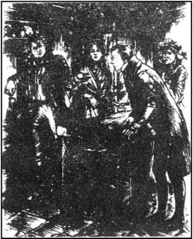
1783年
希斯克利夫再次来画眉山庄时碰巧在宅子前面见到了伊莎贝拉。他朝她走过去的时候，我正从厨房的窗户里看着，他以为没人能看见他，就吻了她。
“看哪，夫人！”我喊着凯瑟琳，她正从厨房走过，“希斯克利夫那恶棍告诉你他决不会爱伊莎贝拉小姐！这会儿正吻她呢！”
所以希斯克利夫一进房子，凯瑟琳已经打定主意责备他了。
“别碰伊莎贝拉，希斯克利夫！”她用命令的口吻说道，“你会惹怒艾加的！”
“你以为我怕那个弱不禁风的小东西？”他吼叫道，“再说，这跟你有什么关系？只要她愿意，我就可以吻她。我不是你的丈夫，你不必吃我的醋！”
“我没吃你的醋！”凯瑟琳回答，“如果你喜欢伊莎贝拉，你可以娶她。可你真的喜欢她吗？”
“我想谈论的是你，凯瑟琳。你明白你们怎么待我的。我要报复！谢谢你告诉我伊莎贝拉的秘密。我发誓要好好利用这一点！”
到了这地步我就去找了我的主人，告诉他凯瑟琳和希斯克利夫正在厨房里争吵。
“我妻子怎么会称这个人为朋友？”他怒吼道，“我对她一直太纵容了。我不能允许他再来看她。叫两个仆人，艾伦。”他朝厨房而去。我跟着他，叫仆人在厅里等着。
“凯瑟琳！”艾加先生一进门便对妻子说道，“你觉得听这恶棍说话合适吗？”
“你在门口听着的吗，艾加？”凯瑟琳冷冷地问道。希斯克利夫笑了起来，艾加先生火气更大了。
“你，先生，”他对希斯克利夫说，“在破坏我的家庭生活。我本来就不应该把你当凯瑟琳的朋友看待。我必须奉告你决不许你再进这房子，如果你三分钟内不离开，你就会被扔出去。”
“好，好！”希斯克利夫回答，满脸讥讽地看着艾加先生瘦小的身躯。“这么说，你要亲自把我扔出去喽，是吗？”
我的主人往门那儿看了一眼。我意识到他想叫仆人，因为他明白他自个儿无力与希斯克利夫斗。但凯瑟琳想必猜出了他的心思。她赶到门前，锁上了门。艾加先生又气又惊地盯着她。
“你必须像个绅士一样跟他打，别叫人帮忙！”她告诉丈夫，“对你责骂我会是个教训！”
艾加先生试图去抢钥匙，可她当即把钥匙扔进炉火的中央。他的脸色变得煞白，无法控制全身的颤抖。
“噢艾加！”他妻子叫道，“你已经输了！你不是个男人，你是只老鼠！”
“你就喜欢这么个东西，”希斯克利夫指着艾加先生说，“而不喜欢我，凯瑟琳。他是要哭出来，还是会吓死？”
他凑上前去更接近地看着艾加先生，艾加先生冷不防地缓过劲来重重打在希斯克利夫的脖子上。趁希斯克利夫正往回喘气的当儿，艾加先生从厨房的旁门走出去，到了花园。
“哎，你再也不能来这儿了，”凯瑟琳对希斯克利夫说，“快走罢！他就要带着人、带着枪来了。”
希斯克利夫明智地听从了她的劝告。主人和他的手下回来时，他刚好砸坏锁着的门逃走了。
凯瑟琳十分激动，吩咐我陪她上楼。我希望她别发现是我告诉了艾加先生她和希斯克利夫吵架的事。
“我气疯了，艾伦！”我们刚进起居室她就说，“麻烦都是伊莎贝拉惹起的！跟艾加说我快病得不行了。我盼着真生病，我想吓唬吓唬他。他让我狼狈坏了。他为什么要偷听我们在厨房的谈话？希斯克利夫说了些难听的，可我有把握能控制他。好，如果我不能有希斯克利夫这个朋友，要是艾加开始小器、嫉妒，我就让自己伤心来使他们俩都心碎。你千万要提醒艾加我脾气多暴躁，还有肯尼士大夫是怎么说我的健康情况的。艾加得让我做我想做的事！”
我对凯瑟琳不感觉同情，当然也不想去吓唬我那不幸的主人，告诉他她病了。但我正要离开房间的时候，他进来了。
“凯瑟琳，”他说，“你必须给我说清楚一件事，你必须在我和希斯克利夫之间做出选择。你想要哪一个？”
“别烦我！”她狂怒地喊道，“我病了，你看不见吗，我站都站不住了！艾加，别烦我！”
她脸色煞白，直挺挺地倒在地板上。艾加先生惊恐万分。
“别担心，先生，”我轻声对他说，“她告诉我她要装病来吓唬您。”
不巧被她听见。她跳起来，披头散发、双目圆瞪，跑向她的卧室。我们听到锁被拧上了。
此后好几天她对谁都一言不发，连我在内。我把饭端到她房间，可她不肯吃。艾加先生待在书房，也不过问他妻子。我想，他是指望她会来请求他原谅。但我清楚她那么傲慢，是不会那样做的。
到第三天她打开房门把我叫去。她狼吞虎咽地又吃又喝，接着又躺倒了。
“噢，我怎么不死，反正没人关心我！”她咕哝道，“艾加根本就不爱我！这段时间他在干吗，艾伦？”
“他在书房看书，夫人。”我回答。
“看书！”她惊异地嚷道，“我在上面都快死了！上帝！他知道我变化有多大，病得有多重吗？你就不能告诉他我病得不行了，艾伦？”
“您忘了，林顿夫人，您今晚吃了东西。我肯定您明天早上会感觉好些的。”我还是希望能使她认识到她有多自私，尽管她苍白、如幽灵般的脸色令我有点儿担心。
“我开始觉察到你不喜欢我了，艾伦。真想不到！我总以为人人都喜欢我！而如今他们都成了我的对头——伊莎贝拉和艾加，还有你！周围都是冷冰冰的面孔，我要死了！前几个晚上我一直在做恶梦，你知道。打开窗户，艾伦！我太热啦！”
因为正值隆冬，我不肯。她有点发烧。
“那是谁？”她盯着床对面镜子中她自己的脸问道。我无法使她明白那就是她自己，所以我开始担心她是真病了。
“陪着我，艾伦，”她抓着我的手叫道，“那张脸让我害怕！我害怕一个人待着！我希望我是躺在呼啸山庄我的床上，风在树林间呼啸。就让我感受一下荒原上吹来的空气吧，就一下！”
我把窗打开了一会儿，接着又关上。冰冷的空气似乎使她安静了些。“我希望我又成了小姑娘，疯疯癫癫、自由自在，同希斯克利夫一起到荒原去！再把窗子打开，这次开大点！你为什么不肯？”
“因为我不想你冻死。”我回答。
“可只有这样我才有活下去的可能！”她叫着，从床上跳下来奔窗户而去。我试图拉她回床上去，可发烧让她力气大得出奇。我们一起望着外面冰冷的黑暗。没有月亮，也看不见灯光。但凯瑟琳一口咬定她能看到呼啸山庄。
“看！”她说，“那是我原来的家，还有附近的教堂墓地。我不要独眠在那儿，希斯克利夫！除非你和我同穴而葬，否则我不会安息的！”
我仍然抱着她，不让她靠近窗户，搞不清下面该怎么办，这时艾加先生进来了。
“请帮帮忙，先生，”我叫道，“林顿夫人病了。”
“凯瑟琳病了？”他吃了一惊，“关上窗户，艾伦！凯瑟琳！为什么——”
一看到妻子的脸，他吓坏了，话也不说了，只顾惊恐地盯着她。她几乎人事不省，开始没认出他来。
“噢，是你，是吗，艾加·林顿？”她过了好一会儿才说道，“需要你的时候你不来，不需要的时候你倒来了！无论你怎么说，什么也别想阻止我回家，我安息的地方，在外面的旷野里，头顶上立着一块墓碑！”
“她有些发烧，先生，在说胡话，”我低声说，“如果她吃了东西，再休息一下就会好的。”
“我不想再听你的意见，艾伦·迪恩，”艾加先生冷冷地说道，“你本来知道她病得有多重，却不通报我！”
我跑到楼下，出了厨房门去找大夫。我觉得好像听到远处有马嘶声，此刻是凌晨两点钟，似乎有点儿蹊跷。我找到肯尼士大夫时，他告诉我有人看见伊莎贝拉和希斯克利夫当天晚上早些时候在花园里幽会。
那天晚上我们谁都没睡。大夫陪病人待着，我们则坐在一起等。他对我们说如果我们能让她心平气和，凯瑟琳有望痊愈。
到了早晨我们发现伊莎贝拉的房间空着。她跟希斯克利夫跑了！艾加先生听了这个消息，他只说，“是她自己要跟他走。别再对我提起她。我不再认她这个妹妹。”
9 Isabella's story
9
Isabella's story
1784 For two months we heard nothing of Isabella or Heathcliff. During that time Catherine was dangerously ill with brain fever, and Dr Kenneth warned us that even if she recovered, her brain would never return to normal. However she did seem to get better, and no one could have been happier than my master, when he saw her sitting up in bed for the first time, and beginning to take an interest in the people and things around her. He loved her so much, and took such good care of her, that I really thought she would recover. There was another reason for her to live. She was expecting a baby, and we all hoped she would have a son, who would inherit the Linton fortune.
Then Mr Edgar received a letter from Isabella, telling him that she and Heathcliff were married. With it was a long letter for me, which said:
Wuthering Heights
Dear Ellen,
I arrived here last night and heard that Catherine is ill. My brother refuses to write to me, so you are the only one I can write to. Tell Edgar I still love him and Catherine, and want to return to Thrushcross Grange, but I can't!
The rest of this letter is for you alone, Ellen. Two questions—how did you manage to get on with the people in this house? They don't seem human! And (this interests me very much) what is Mr Heathcliff? A man? A madman? A devil? When you come to visit me, you must explain to me what sort of creature I've married. And you must come very soon, with a message from Edgar.
Heathcliff brought me here last night. This house is going to be my home, he says. He disappeared as soon as we arrived, so I entered the kitchen alone. What a miserable, depressing place it is now, Ellen! By the fire stood a dirty child. I realized he must be Catherine's nephew, Hareton, and tried to shake his hand. But he greeted me by swearing at me, so I went into the hall to find somebody else. When I knocked at another door, it was opened by a tall, thin man, with long, dirty hair hanging down to his shoulders. I knew this must be Hindley Earnshaw, Catherine's brother and Hareton's father. His eyes, and Hareton's, reminded me of Catherine.
'What do you want?' he asked roughly.
'My name was Isabella Linton,' I replied. 'Now I'm married to Mr Heathcliff.'
'Ah, so that devil has returned! Good!' he growled.
You can imagine, Ellen, how unhappy I felt in that unpleasant house. I knew that only four miles away was my real home, Thrushcross Grange, containing the only people I loved in the world. But those four miles were like an ocean, which I could not cross! Don't tell Edgar or Catherine this, but I had hoped to find a friend at Wuthering Heights, someone to support me against Heathcliff. Now I realized that no one here would help me.
After a long silence I said, 'Please ask a maid to show me my bedroom. I'm tired after my journey.'
'We have no maids here,' he answered. 'Joseph will show you Heathcliff's room, if you like. And—and—you'd better lock the bedroom door tonight!'
'Why, Mr Earnshaw?' I asked. I did not want to lock myself in with Heathcliff.
He brought out a gun, which had a knife attached to it.
'Look at this,' he said. 'Every night I try to open his bed room door. Up to now he's locked it. But one night he'll forget, and Then I'll kill him!'
'Why do you hate him so much?' I asked.
'Because he's taken everything from me!' he shouted angrily. 'There's nothing left for Hareton to inherit! But I'm going to get it all back! and his money too, and then his blood. Then the devil can have his soul!'
He seemed mad to me, Ellen. I left him, and went to find the old servant, Joseph. It seemed that Heathcliff's room was locked, and there were no guest bedrooms, so in the end I slept on a chair in the child's room. What a welcome to my new home!
I know Heathcliff blames Edgar for Catherine's illness. He has warned me he'll make me suffer for it. Oh, I do hate him—I'm so nuserable—I've been such a fool! Don't tell anyone at Thrushcross Grange about this, Ellen. Come quickly—don't disappoint me!
Isabella
As soon as I had read this, I asked Mr Edgar if I could take a message from him to his sister.
'You may visit her this afternoon, Ellen, if you like. Tell her I'm not angry, just sorry to have lost her. I can't imagine she will ever be happy. I shall never visit her or write to her.'
When I arrived at Wuthering Heights that afternoon, I was shocked to see how much worse the house looked than when I used to live there. I realized that Hindley did not care what conditions he lived in, and Joseph clearly spent more time praying than cleaning. Heathcliff and Isabella were both in the main room. Heathcliff looked more like a gentleman than I had ever seen him, but his wife had not bothered to brush her hair or change her dress. I had to explain to poor Isabella that Mr Edgar had refused to write to her. She cried a little when she heard that. Then Heathcliff asked me question after question about Catherine's illness.
'If you really love her,' I told him, 'you'll keep away from her now. She mustn't be over-excited. Her health will always be weak. And her loving husband is a very good nurse to her!'
'Her loving husband!' repeated Heathcliff scornfully. 'Don't compare my feeling for her with his! No, Ellen, before you leave this house, I'll make you promise to arrange a meeting for me with Catherine. I must see her!'
'I'll never agree to that,' I said. 'She's just beginning to recover. She's almost forgotten you, and now you want to upset her again!'
'Ellen, you know as well as I do that she can never forget me! If she thinks once of Edgar Linton, she thinks a thousand times of me! He can't love her as I can! And Catherine has a heart as deep as mine!'
'Catherine and Edgar are very fond of each other!' said Isabella suddenly. 'Don't speak of my brother like that!'
'Your dear brother doesn't care enough about you to write to you,' replied Heathcliff, smiling sourly.
'That's because he doesn't know how much I've suffered,' she answered quietly, turning away to hide the tears on her face.
'Sir,' I said, 'it seems to me that Miss Isabella, Mrs Heathcliff, I should say, is unhappy. You must treat her kindly. Try to look after her. Let her have a maid, for example.'
'I'm not going to be soft with her,' he replied with a laugh. 'She was stupid enough to run away with me. I never pretended to love her. Now I think she's beginning to realize that I scorn her. She's an even weaker fool than her brother, but she's going to be useful to me. That's why I'm keeping her with me.'
'Ellen, he says he married me to have his revenge on Edgar! But I won't let him carry out his plan, whatever it is. I'll die, or I'll see him dead first!'
'You're getting violent, Isabella!' said Heathcliff. 'Go upstairs now. I want to speak to Ellen Dean in private. Go on!' And he pushed her roughly out of the door.
'Don't you feel pity for her?' I asked, when we were alone. 'Have you ever felt pity for anybody in your life?'
'Why should I? She's just like an insect under my foot. The more she cries, the more I enjoy hurting her. Now, Ellen, listen. I'll wait every day and every evening in the Grange garden, until I find a chance to see Catherine. If I meet Edgar Linton or his servants, I'll shoot them. But don't you think it'd be better to avoid a fight? You could tell me when she'll be alone. Then there'll be no violence.'
I argued and complained, and refused fifty times, but in the end he forced me to agree. I promised to let him know when Edgar Linton was away from home. I suppose it was wrong of me, but I hoped it would be Heathcliff's last meeting with Catherine.
normal adj. or usual, ordinary. 正常的。
refuse v. say 'no' to what someone wants to do etc. 拒绝。
devil n. wicked spirit. 魔鬼。
nephew n. son of your brother or sister. 侄子，外甥。
support v. keep something or someone up. 支持。
be attached to like someone. 喜爱，爱慕。
compare v. think about two or more things or people so that you can see the differences. 比较，对照。
arrange v. to plan in advance; prepare. 安排，准备。
be fond of love or like someone or something. 喜好。
in private alone; away from other people. 单独。
insect n. small animal with six legs. 昆虫。
伊莎贝拉的故事
9 伊莎贝拉的故事

1784年
两个月来伊莎贝拉和希斯克利夫音讯全无。在这期间凯瑟琳的脑膜炎很重，肯尼士大夫提醒我们就算她病好了，她的脑子也无法完全复原。尽管如此她看上去还是好了起来，当我的主人看到她第一次在床上坐起来并开始注意她周围的人和事时，他比谁都高兴。他对她爱意无限，关心无微不至，于是我真的相信她一定会好起来。她要活下去还有另一个原因。她怀了孩子，我们都希望她能生个儿子来继承林顿家族的财产。
后来艾加先生收到了伊莎贝拉来的一封信，告诉他她已同希斯克利夫结婚了。同来的还有一封给我的长信，写道：
亲爱的艾伦：
我昨晚到了呼啸山庄，听说凯瑟琳病了。我哥哥不肯给我写信，所以我只能给你写。告诉艾加我还爱着他和凯瑟琳，还想回到画眉山庄，可我不能！
下面的内容是写给你一个人的，艾伦。有两个问题——你是怎么跟这宅子里的人相处的？他们好像没有人性！还有（我很想知道）希斯克利夫先生是什么东西？是人么？是个疯子？还是个魔鬼？你来看我的时候，你一定得跟我说说我到底嫁给了个什么东西。你一定要尽快来，带一个艾加的口信来。
希斯克利夫昨晚把我带到这儿。这宅子将是我的家，他说。一到这儿他就不见了，所以我一个人进了厨房。现在那儿真是个乱七八糟、令人难受的地方，艾伦！火炉旁站着一个邋遢的孩子，我琢磨他一定就是凯瑟琳的侄子哈里顿了，于是想跟他握握手。可他用咒骂的方式来欢迎我，所以我到厅里去找其他人。我去敲另一扇门，开门的是一个瘦高挑儿的男人，头发又长又脏，披到肩上。我知道这一定就是亨德雷·欧肖，凯瑟琳的哥哥，哈里顿的父亲。他的眼睛，还有哈里顿的眼睛，让我想起凯瑟琳。
“你想干什么？”他粗鲁地问。
“我叫伊莎贝拉·林顿，”我回答，“我已嫁给了希斯克利夫先生。”
“哦，这么说那个恶棍回来啦！好！”他咆哮道。
你可以想像得到，艾伦，我在那讨厌的宅子里会多难过。我清楚这儿离我真正的家画眉山庄只有四英里，那儿有我在这世上唯一爱着的人。但那四英里像一片汪洋，我过不去！别把这个告诉艾加或凯瑟琳，我原指望能在呼啸山庄找到一个朋友，一个能帮助我对付希斯克利夫的人。如今我明白这儿没人能帮我。
沉默了许久之后我说，“请让个女仆带我去我的卧室。我走了那么远的路，累了。”
“我们这儿没有女仆，”他回答，“约瑟夫会带你去希斯克利夫的房间，如果你愿意，还有——还有——今晚你最好锁上卧室的门！”
“为什么，欧肖先生？”我问。我不想把自己和希斯克利夫锁在房间里。
他拿出一枝枪，上面还带着一把刀子。
“看看这个，”他说，“我每天晚上都想橇开他卧室的门。到目前为止他都上锁。可要是哪天晚上他忘了，我就会杀了他！”
“你为什么这么恨他？”我问。
“因为他抢走了我的一切！”他嚎道，“什么也没剩下让哈里顿去继承！但我会把它全夺回来的！还有他的钱，还有他的血。然后魔鬼就能收去他的灵魂！”
我看他好像疯了，艾伦。我离开了他，去找那个老仆约瑟夫。希斯克利夫的房间似乎是锁着的，也没有给客人住的卧室，所以最后我在孩子的房里睡下了。到了我的新家，他们就这么欢迎我！
我明白希斯克利夫把凯瑟琳的病归咎于艾加。他威胁过我，要我为此吃苦头。啊，我真恨他——我真命苦——我真是个傻瓜！别对画眉山庄的任何人讲，艾伦。快来吧——别让我失望！
伊莎贝拉
于呼啸山庄
一读完信，我就问艾加先生我能否替他给他妹妹带个口信。
“你今天下午可以去看她，艾伦，如果你愿意。告诉她我不是生气，只是为失去她而难过。我无法想像她会幸福。我不会去看她，也不会给她写信。”
那天下午我到呼啸山庄时，看到房子比我以前住的时候脏乱得多，我很吃惊。我想亨德雷不在乎他住的环境，约瑟夫花在祈祷上的时间无疑比打扫卫生多。希斯克利夫和伊莎贝拉都在正房里。希斯克利夫比我以前任何时候看到他时都更像个绅士，可他的妻子却懒得梳理头发、更换衣服。我不得不向可怜的伊莎贝拉解释说艾加先生不肯给她写信。她听到这个哭了一会儿。然后希斯克利夫就一遍一遍地问我凯瑟琳的病情。
“要是你真的爱她，”我对他说，“你现在就离她远点。她不能太激动。她的身体一直都会很弱。她那深情的丈夫把她护理得非常好！”
“她那深情的丈夫！”希斯克利夫讥讽地重复了一句，“别把我对她的感情与他的相比！不，艾伦，你离开这房子之前，我要让你答应安排我与凯瑟琳见一面。我一定要见她！”
“我决不会答应的，”我说，“她刚刚开始恢复。她差不多把你忘了，而你现在又要再去惹她！”
“艾伦，你我都知道她决不会忘了我！如果她想起艾加·林顿一次，她就会想我一千次！他不会像我那样爱她！凯瑟琳有一颗如我一般深情的心！”
“凯瑟琳和艾加彼此非常相亲相爱！”伊莎贝拉突然说道，“别那样说我哥哥！”
“你那亲爱的哥哥对你的关心还不足以让他给你写信。”希斯克利夫回道，悻悻地一笑。
“那是因为他不知道我有多苦。”她静静地回答道，她转过身去不让人看见她脸上的泪水。
“先生，”我说，“伊莎贝拉小姐，我应该说希斯克利夫夫人，好像并不快乐。你得对她好点。尽量照顾她。比如说，给她找个女仆。”
“我不会和气地对她，”他笑着答道，“她太傻了，跟我私奔。我从没假装爱她。此刻我想她开始明白我看不起她。她甚至比他哥哥还软弱愚蠢，但她对我会有用。所以我才留她在我这儿。”
“艾伦，他说他娶我是为了报复艾加！不管他打什么鬼主意，我不会让他得逞的。要么我死，要么我要看着他先死！”
“你开始过激了，伊莎贝拉！”希斯克利夫说道，“现在上楼去。我想同艾伦·迪恩单独谈谈。快去！”他粗野地把她推出门外。
“难道你不怜悯她吗？”只剩我们两个时我问，“你这一生可曾怜悯过什么人吗？”
“我为什么要怜悯？她就像我脚下的一只虫子。她越叫唤，我就越喜欢折磨她。好了，艾伦，听着。我每天从早到晚都会在画眉山庄的花园里等着，直到我有机会看到凯瑟琳为止。要是让我遇上艾加·林顿或他的家仆，我就开枪打死他们。可你不觉得最好能避免一场争斗吗？你可以告诉我什么时候她会一个人待着。这样就不会有人受伤了。”
尽管我同他争执、抱怨，无数次地拒绝，但最终他还是强迫我答应下来。我应允在艾加·林顿出门的时候通知他。我觉得我做得不对，但我希望着这是希斯克利夫最后一次见凯瑟琳。
10 Heathcliff visits Catherine for the last time
10
Heathcliff visits Catherine for the last time
1784 Heathcliff had given me a letter for Catherine, but I decided not to show it to her until Mr Edgar was out of the house. My chance came four days after my visit to Wuthering Heights. As it was a Sunday, Mr Edgar and all the servants went to church, leaving me alone to look after Catherine.
She was sitting downstairs, by an open window, enjoying the spring sunshine. Her appearance had changed since her illness, but there was a strange beauty in her pale face. She did not read or sew any more, but used to sit there silently, staring into the distance. Her eyes seemed fixed on something far away, something beyond normal sight.
I showed her the letter, but she looked confused and could not seem to understand it, so I had to explain.
'It's from Mr Heathcliff,' I said gently. 'He's in the garden, and wants to see you. What shall I tell him?'
She said nothing, but bent forward in her chair to listen. We both heard someone coming through the hall. Heathcliff had realized the house was almost empty, and had found an open door. Catherine looked eagerly towards the entrance to the room. He appeared, and in two steps was by her side. For five whole minutes he held her in his arms and kissed her again and again. It gave him great pain to look at her face. He could see, as I could, that she would never recover, that she was certain to die.
'Oh, Catherine! Oh, my life! How can I bear It!' he cried.
'You and Edgar have broken my heart,' said Catherine, 'And you both want me to pity you! How strong you are, Heathcliff! You'll live for years after my death! Will you forget me, and be happy with others, when I'm in my grave?'
'It's wicked of you to say that, Catherine. You know your words will burn for ever in my memory after you've left me. You know I could never forget you!'
'I don't want you to suffer more than I do, Heathcliff. I only want us to be together, always.'
Heathcliff turned away, his shoulders shaking.
'That isn't my Heathcliff,' Catherine said to me. 'I'll always love my Heathcliff, and take him with me. He's in my soul, you see. Oh, Ellen, I do want to escape from this prison. There's a beautiful world waiting for me out there. You feel sorry for me now because I'm ill. Well, very soon I'll feel sorry for you, because I'll be beyond you all!'
Heathcliff turned towards her, his fierce eyes wet. For a moment they looked at each other, and then they were in each other's arms again. No one could have separated them.
'How cruel you've been to me, Catherine!' he cried wildly. 'You loved me, so why did you marry Edgar Linton? It's all your fault! I haven't broken your heart, you've broken it! And you've broken mine too! Do you think I want to live after you are dead?'
'If I've done wrong, I'm dying for it!' sobbed Catherine. 'It's your fault too, Heathcliff! You left me, remember? But I forgive you. Now forgive me!'
'It's hard to forgive, when I look at your sad eyes, and feel your thin hands. Kiss me again, Catherine! I forgive you for making me suffer, but how can I forgive you for dying?'
Catherine sobbed quietly, hiding her face in his shoulder, and tears rolled down Heathcliff's dark face.
Suddenly I noticed, through the window, the servants coming back from church. I was afraid Mr Edgar would find Heathcliff with Catherine.
'My master will be here in a moment,' I warned them.
'I must go, Catherine,' said Heathcliff.
'No, no!' she screamed. 'Don't go! It's the last time! Edgar won't hurt us! Heathcliff, I'll die if you go!'
'All right, my darling, I'll stay. If he shot me in your arms, I'd die happy.'
At that moment my master appeared at the door. When he saw Heathcliff holding his wife, he went pale with anger.
'Here, take care of her first,' said Heathcliff, putting Catherine in her husband's arms, 'then speak to me later if you wish.' He walked out of the house.
Catherine seemed to be unconscious, and Mr Edgar was so worried about her that he forgot about Heathcliff for the moment. She recovered a little, but did not recognize any of us, and was clearly very ill. We put her to bed immediately, and at twelve o'clock that night her daughter, Cathy, was born, two months early. That's the young lady you saw at Wuthering Heights, Mr Lockwood. Two hours later, Catherine died, without calling for Heathcliff, or recognizing Edgar. My poor master was in the depths of despair. I thought it was very unfortunate that Catherine had only given him a daughter, not a son. Now the Linton fortune would pass to Isabella and her husband after Mr Edgar's death.
Catherine's dead body lay peacefully on her bed. In death she looked more beautiful than in life. I wondered if she was now 'beyond us all', as she had said, and hoped that her soul had found a home with God.
In the morning I went to look for Heathcliff. I found him in the Grange garden, where he had been waiting for news all night.
'She's dead, I know!' he called to me as I came closer. 'Don't cry, she doesn't need your tears! Tell me—tell me, how did—?' He tried to say her name, but could not manage it. 'How did she die?' he said at last, staring fiercely at me. 'Don't be sorry for me, I don't want your pity!'
'Poor creature!' I thought. 'You have a heart just like other men, but you are too proud to show it!'
Aloud I said, 'She died quietly, in her sleep. Her life finished in a gentle dream. I hope she wakes as calmly in the other world!'
'Where are you, Catherine?' he cried in despair. 'Don't leave me here, where I can't find you! I pray that you will never rest while I'm alive. You said I killed you—haunt me then! Murdered people do haunt their murderers, I believe. Come back as a ghost—drive me mad—I don't care! Oh, God! I can't bear it! I cannot live without you, my soul!'
He howled like a wild animal, and hit his forehead several times against a tree, until the wood was covered in blood. I knew I could no longer help him, so I left him.
Catherine was buried the following Friday. Her brother Hindley, although invited, did not come, and Isabella was not invited, so it was only Mr Edgar and the servants who attended the ceremony. To our surprise, she was not buried in the church with the Lintons, nor with the Earnshaws. She lies in an open corner of the churchyard, where she can breathe the air from the moors. Her husband's grave is next to hers.
fix on v. to direct (one's eyes, attention; etc.) steadily at. 使（目光，注意力等）集中于。
entrance n. way into a place. 入口， 门口。
grave n. the place in the ground where a dead person is buried. 墓穴，坟墓。
prison n. place where they lock up criminals. 监狱，牢房。
sob v. cry. 啜泣。
in a moment very soon. 很快，立即。
recover v. to return to the proper state of health, strength, ability, etc. 恢复（健康、体力、能力等）。
haunt v. to be always in the thoughts of (someone). 萦绕心头。
ceremony n. special programme at an important happening. 典礼，仪式。
希斯克利夫最后一次看望凯瑟琳
10 希斯克利夫最后一次看望凯瑟琳
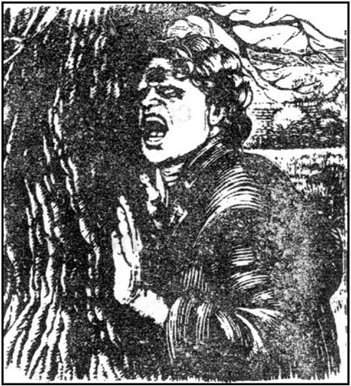
1784年
希斯克利夫给了我一封给凯瑟琳的信，但我决定在艾加先生不在家时再给她看。从呼啸山庄回来后过了四天，我找到了一个机会。那是个礼拜天，艾加先生和所有家仆都到教堂去了，留我一个人照看凯瑟琳。
她在楼下一个开着的窗户旁坐着，享受着春天的阳光。她得病之后容貌变了，但她惨白的面庞有一种莫名的美。她不再读书，也不再做针线活儿，但常静静地坐在那儿，呆呆地望着远方。她的目光好像盯着远处的什么东西，正常视线以外的东西。
我把信给她看，可她显得有些茫然，似乎无法理解，所以我不得不解释一下。
“是希斯克利夫写的，”我轻声说，“他在花园里，想见你。我该怎么跟他说？”
她什么也没说，但从椅子里欠起身在听着。我们俩都听到有人从厅里走过来。希斯克利夫意识到房子里没有什么人了，就找了扇敞开的门。凯瑟琳急切地望着房门。他出现了，两步就走到她的身边。他把她抱在怀里，一遍遍地吻她，足足有五分钟。他看着她的脸，十分痛苦。他和我都能看出来，凯瑟琳永远不会复原了，她肯定是要死了。
“噢，凯瑟琳！噢，我的命根子！我如何能忍受得了！”他痛苦地叫道。
“你和艾加伤透了我的心，”凯瑟琳说，“你们却都想让我怜悯你们！你多健壮啊，希斯克利夫！我死后你还能活好多年！等我入土之后，你会忘了我，和别的人幸福地生活吗？”
“你这么说太过分了，凯瑟琳。你明白在你离开我之后，你的话仍将会烙印在我记忆中。你知道我永远都不会忘记你的！”
“我不想你比我多受罪，希斯克利夫。我只想我们俩在一起，永远。”
希斯克利夫转开身，他的双肩在颤抖。
“这不是我的希斯克利夫，”凯瑟琳对我说道，“我将永远爱我的希斯克利夫，把他带在身边。他在我的灵魂里，你知道。哦，艾伦，我真想逃离这牢狱。那儿有一个美丽的世界在等着我。你为我难过是因为我病了。可很快我就会为你们感到难过，因为我将会在你们所有人之上！”
希斯克利夫转过来面对着她，炽烈的双眼里含着泪。他们先是相对而视，然后又拥抱在一起。没人能把他们分开。
“你对我多无情啊，凯瑟琳！”他发疯似地说道，“你爱我，那为什么却嫁给了艾加·林顿？都是你的错！我没有伤你的心，是你自己伤了自己的心！而且你还伤了我的心！你以为你死了我还想活下去吗？”
“如果是我错了，那我该死！”凯瑟琳抽泣道，“你也有错，希斯克利夫！你离开了我，还记得吗？但我原谅你。你也原谅我吧！”
“我一看到你忧郁的双眼，摸着你瘦弱的双手，我就很难原谅。再吻吻我吧，凯瑟琳！我原谅你给我的痛苦，可我怎能原谅你要死去？”
凯瑟琳无声地啜泣着，把脸埋在他的肩上，泪水顺着希斯克利夫黝黑的面庞淌落下来。
我突然从窗子看到仆人们正从教堂往回走。我怕艾加先生会看到希斯克利夫和凯瑟琳在一起。
“我的主人马上就到了。”我提醒他们。
“我得走了，凯瑟琳。”希斯克利夫说。
“不，不！”她高声叫起来，“别走！这是最后一面了！艾加不会伤害我们的！希斯克利夫，你要走我会死的！”
“好，我亲爱的，我不走。如果他把我杀死在你的怀里，我会幸福地死去。”
这时，我的主人在门口出现了。看到希斯克利夫正抱着自己的妻子，他的脸气得煞白。
“哎，先照看她，”希斯克利夫说，把凯瑟琳交到她丈夫的怀里，“要是你想跟我说话，另找个时间。”他走出了房子。
凯瑟琳好像是晕过去了，艾加先生非常担心，一时间竟忘了希斯克利夫的事。她的知觉恢复了一点，可认不出我们，显然是病得很重。我们当即把她放到床上，就在当天晚上12点她的女儿凯茜出世了，早产了两个月。她就是你在呼啸山庄看见的那年轻女士，洛克伍德先生。两个小时后，凯瑟琳死了，既没有喊希斯克利夫，也没认出艾加。我那可怜的主人陷入了深深的绝望。我想，凯瑟琳只给他生了个女儿却没有儿子，真是太不幸了。这样在艾加先生死后林顿家的财产就会传给伊莎贝拉和她的丈夫。
凯瑟琳的遗体宁静地躺在她的床上。她死后的样子比生前更美。我不知道是否现在她“在我们之上”，像她曾说过的那样，我祈望她的灵魂已在上帝那儿找到了归宿。
早晨我去找希斯克利夫。在画眉山庄的花园里我找到了他，他一整夜都在那儿等着消息。
“她死了，我知道！”我走近时他对我叫道，“别哭，她不稀罕你的眼泪！告诉我——告诉我，是怎么——？”他想说她的名字，但说不出来。“她是怎么死的？”他最后说道，凶神恶煞般地盯着我。“别为我难过，我不需要你的怜悯！”
“可怜的家伙！”我想，“你的心跟别的男人也都一样，但你的自尊心太强，不肯表现出来而已！”
我大声说，“她是在睡梦中平静地死去的。她的生命在安祥的梦中结束了。我希望她能在另一个世界同样平静地醒来！”
“你在哪儿，凯瑟琳？”他绝望地喊着，“别把我留在这儿，我找不到你！我祈求在我还活着的时候你永远不要安息。你说是我害死了你——那就来索我的命吧！我相信被害死的人会找害他们的人索命的。变作鬼魂回来吧——把我逼疯——我不在乎！噢，上帝！我受不了啦！我活着不能没有你，我的爱人！”
他像一头野兽般地嗥叫着，好几次把前额撞到一棵树上，直到树干上沾满了鲜血。我明白我也帮不了他，就离开了。
凯瑟琳是那个礼拜五安葬的。虽然请了他的哥哥亨德雷，可他没来，又没有请伊莎贝拉，所以只有艾加先生和仆人们参加了葬礼。我们感到奇怪的是她没被葬在教堂林顿家人下葬的地方，也没同欧肖家的人葬在一起。她躺在教堂墓地开阔的一角，她在那儿能呼吸到荒原吹来的空气。她丈夫的墓和她的相邻。
11 Isabella escapes
11
Isabella escapes
1784 That Friday evening the wind changed, and brought first rain, then snow. Next morning the spring flowers were all hidden under deep snow. Mr Edgar stayed in his room. I was in the sitting-room with the baby, when I was surprised to hear a girl's voice behind me. I turned round, and saw it was Isabella Heathcliff. I was quite shocked by her appearance. Her hair was loose, and wet with snow and rain. She wore a light silk dress and thin shoes, which did not seem at all suitable for a long walk in the snow. Under her ear was a deep wound, which was bleeding. Her face was scratched and bruised, and she looked very tired. I could see that she was expecting a baby.
'I've run all the way here from Wuthering Heights,' she said, gasping for breath. 'I couldn't count how many times I've fallen down! Ellen, please ask a maid to find some dry clothes for me, and then I'll go on to the village. I'm not staying here.'
'First, my dear young lady,' I told her, 'you'll get warm and dry, and I'll put a bandage on that wound. Then we'll have some tea.' She was so exhausted that she let me help her without protesting, and finally we sat down together near the fire with our cups of tea.
'Oh, Ellen,' she said, 'I cried bitterly when I heard of Catherine's death, you know. And Heathcliff is desperately sad! But I can't feel sorry for him. This is the last thing of his I've got,' and she took off her gold wedding-ring and threw it in the fire. 'I'll never go back to him. But I can't stay here, in case he comes to find me. And anyway I don't want to beg for Edgar's help, or make trouble for him. To escape from Heathcliff I must go a long way away. How could Catherine have liked him, Ellen? I wish he would die, and then I could forget him completely!'
'Don't say that,' I protested, 'he's a human being. There are worse men than him in the world!'
'He isn't human,' she replied. 'I gave him my heart, and he destroyed it, so I can't feel pity for him. But I must tell you how I managed to escape. Hindley Earnshaw should have been at Catherine's burial yesterday, but he had been drinking so much that he couldn't go. Last night he and I were sitting silently in the kitchen at about midnight, when Heathcliff came home. Hindley decided to lock the doors so that Heathcliff could not get in. He told me his plan was to murder his hated guest that night, with the weapon he had shown me. I hate Heathcliff too, but I could not agree to murder, so I called out a warning from the kitchen window. Heathcliff swore horribly at me and broke one of the windows. Hindley put his right arm out through the hole, with the gun in it, and aimed it at his enemy. But before he could fire, Heathcliff caught hold of the gun and pulled it away from Hindley. The knife cut into Hindley's wrist, and blood poured out. Heathcliff jumped into the kitchen through the window, and started kicking and hitting Hindley, who was lying unconscious on the kitchen floor.
'I ran off to find Joseph. When we came back, Heathcliff was putting a bandage on Hindley's wrist. Joseph was shocked at the sight of his master, and would have gone to the police, if Heathcliff hadn't forced me to describe what happened. I had to agree that Hindley had certainly attacked Heathcliff first.
'The next day, I decided to have my revenge on Heathcliff, by telling Hindley that 'that devil' had hit and kicked him when he was unconscious. And I told Heathcliff to his face that he could never have made Catherine happy, if she had been his wife. This made him so angry that he threw a knife at me, which cut my neck, and then he rushed towards me, swearing violently. I knew I had to get away quickly, and as I ran out of the kitchen, I saw Hindley attack Heathcliff. Both of them were rolling on the floor, fighting. I came over the moors through the snow to the Grange. At last I'm free! And I shall never, never spend another night at Wuthering Heights.'
After drinking her tea, Isabella left the Grange. From our village she travelled by coach to the south, where she made her new home near London. There, a few months later, she had a son. She called him Linton.
Heathcliff must have discovered this from the servants. One day when I saw him in the village, he said, 'I hear I've got a son, Ellen, whose name's Linton! I suppose Isabella wants me to hate him! She can keep him for the moment. But tell Edgar Linton I'll have the boy one day! He's mine!'
After Catherine's death my poor master, Mr Edgar, was a changed man. He no longer went to church, or saw any friends. He occasionally went for lonely walks on the moors, and regularly visited his wife's grave. But fortunately Catherine had left him something of herself, her daughter Cathy. This tiny child soon won his heart.
It's strange, Mr Lockwood, to compare Hindley and Edgar. They both lost their wives, and were left with a child. Hindley did not believe in God, and showed no interest in his son Hareton. But Edgar believed, and loved his daughter Cathy deeply.
Hindley himself died six months after his sister Catherine. We never discovered exactly what happened, but Heathcliff said he had drunk himself to death. It appeared that Heathcliff had won Hindley's house, land and money from him when playing cards, so he was now the master of Wuthering Heights. Hareton inherited nothing from his father, and could only stay on at Wuthering Heights as a servant, working for the man who had been his father's enemy.
bleed v. lose blood. 流血。
scratch v. cut or mark something with a rough or sharp thing. 抓破。
bandage n. long strip of cloth to put round a part of the body that is hurt. 绷带。
protest v. complain. 反对。
in case so as to be safe if something happens. 如果，以防。
coach n. a large enclosed four-wheeled horse — drawn carriage. 四轮马车。
believe in to have faith or trust in. 信仰，信任。
伊莎贝拉跑了
11 伊莎贝拉跑了
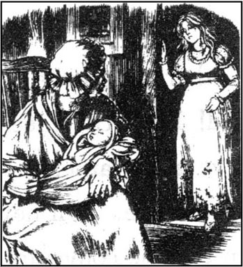
1784年
那个礼拜五的晚上风向变了，先来了一阵雨，接着是雪。第二天早晨春天的花儿都被厚厚的雪掩埋了。艾加先生待在自己的房间里。我正在起居室里和婴儿在一起，这时出乎意料地听到身后有一个姑娘的声音，我回过身，看到是伊莎贝拉·希斯克利夫。她的样子让我吓了一大跳。她散乱的头发湿漉漉地沾满雨雪。她穿着一件薄薄的丝绸外衣和一双单鞋，这装束看着根本不适合在雪地里走远路。她的耳根有一处很深的伤口，淌着血。脸上伤痕累累，看上去疲惫不堪。我能看出她怀孕了。
“我是从呼啸山庄一路跑到这儿的，”她上气不接下气说道，“我也数不清跌了多少跤！艾伦，请叫一个女仆给我找些干衣裳，然后我就到村里去。我不待在这儿。”
“首先，我的好小姐，”我对她说，“你先暖和暖和，等身子干了，然后我把伤口给你包扎一下。最后我们再喝点茶。”她累极了，所以乖乖地由着我拾掇她，最后我们端着茶在炉火旁一起坐了下来。
“哦，艾伦，”她说，“听到凯瑟琳的死讯，我大哭了一场，你知道。希斯克利夫也是悲痛欲绝！但对他我可怜不起来。这是我身上最后一件他的东西，”说着摘下她的结婚戒指扔进火里。“我再也不回到他那儿去了。可我不能留在这儿，以防他来找我。况且反正我不想求艾加帮忙，说不定还会给他添麻烦。要躲开希斯克利夫，我得走得远远的。凯瑟琳怎么会喜欢他，艾伦？我盼着他死，这样才能把他忘得一干二净！”
“别那么说，”我分辩道，“他是一个人。世上还有比他更坏的人！”
“他不是人，”她回答，“我把心交给了他，他却把它毁了，所以我不能可怜他。我得告诉你我是怎么逃出来的。亨德雷·欧肖昨天本来是要参加凯瑟琳的葬礼的，但他喝多了，没去成。昨晚约摸半夜的时候，他和我坐在厨房里，默默无言，这时希斯克利夫回来了。亨德雷想锁上门不让希斯克利夫进来。他对我说他准备当天晚上用他给我看过的武器去杀了他恨之入骨的房客。我也恨希斯克利夫，可我不能同意去杀人，所以我就朝厨房的窗户外大声警告。希斯克利夫对我破口大骂，砸坏了一个窗户。亨德雷右手拿着枪，从破洞里伸出去瞄准他的仇人。可他还没来得及开枪，希斯克利夫一把把枪抓住，夺了过去。刀子割进了亨德雷的手腕，血顿时涌了出来。希斯克利夫从窗户跳进厨房，开始对躺在地板上已人事不知的亨德雷拳打脚踢。
“我跑出去找约瑟夫。我们回来时，希斯克利夫正给亨德雷包扎手腕。约瑟夫一见他主人的样子惊恐万分，要不是希斯克利夫逼着我说出怎么回事，他就去报警察了。我不能不同意说的确是亨德雷先攻击希斯克利夫的。
“第二天，我决定报复希斯克利夫，于是告诉亨德雷在他昏迷不醒时那‘恶棍’曾对他拳打脚踢。而且我还当着希斯克利夫的面说，如果凯瑟琳当了他妻子，他也决不能让她幸福。这话让他勃然大怒，拿刀就朝我扔过来，砍在我脖子上，接着他又大骂着向我冲来。我明白我必须马上逃走，就在我跑出厨房的当儿，我看见亨德雷攻向希斯克利夫，他们俩在地板上厮打着滚作一团。我在雪地里越过荒原朝画眉山庄而来。我终于自由啦！我坚决不会再在呼啸山庄多过一个晚上。”
喝完茶，伊莎贝拉离开了画眉山庄，她从我们的村子出发，乘马车去了南方，并在伦敦附近建立了一个新家。几个月后，她在那儿生了个儿子，给他起名叫林顿。
希斯克利夫一定是从仆人们那儿听说了这个消息。一天，我在村里看见他，他说，“我听说我有了个儿子，艾伦，他叫林顿！我猜伊莎贝拉是想让我恨他！她可以暂时养着他。但要告诉艾加·林顿，这孩子总有一天是我的！他是我的！”
凯瑟琳死后，我那可怜的主人艾加先生似乎成了另一个人。他不再上教堂，也不看朋友。他偶尔会上荒原独自走走，定期去看看妻子的墓。但好在凯瑟琳给他留下了她的血肉，女儿凯茜。这个小孩子很快赢得了他的欢心。
洛克伍德先生，要比较亨德雷和艾加就会令人不解。他们都失去了妻子，都留下了一个孩子。亨德雷不信上帝，对哈里顿毫不关心。而艾加信上帝，并且非常爱他的女儿凯茜。
亨德雷在他妹妹死后六个月也死了。我们一直没弄清楚到底是怎么回事，尽管希斯克利夫说他是喝酒醉死的。好像希斯克利夫玩牌赢走了亨德雷的宅子、土地和钱财，所以现在他成了呼啸山庄的主人。哈里顿从他父亲那儿一个子儿也没继承到，只能在呼啸山庄当仆人，为他父亲原来的仇人干活儿。
12 Bringing up Cathy
12
Bringing up Cathy
1797 During the next twelve years I was happier than I had ever been before. All my time was spent looking after little Cathy, who brought sunshine into our lives. She was a real beauty, with the Earnshaws' dark eyes and the Lintons' fair skin. She wasn't as proud and quick-tempered as her mother, but she was used to getting what she wanted. Her father loved her so much that he gave her everything, and never scolded her.
Until she was thirteen she had never been outside the Grange garden alone. She knew nothing of Wuthering Heights or Heathcliff. She often asked me about the hills in the distance, beyond the moors, and wanted to ride her pony there. I knew the master would not let her leave the safety of the Grange to go so far, especially as the road to the hills passed close to Wuthering Heights. So I always told her she would be able to go there when she was older. I did not know what she was planning.
Mr Edgar received a letter from his sister Isabella. She wrote that she was dying of a fever, and asked him to visit her for the first and last time. She also wanted him to take care of her son Linton after her death. Although my master hated travelling, he did not hesitate to do as she requested. He told me to look after Cathy carefully, and left at once.
He was away for three weeks. Cathy did not cause me any trouble at first. She spent her days walking her dogs and riding her pony in the large garden. But one day she asked if she could stay out the whole day, and away she went on her little pony, with her two dogs running behind.
There was no sign of her at tea-time, and I began to be seriously worried. I went outside to look for her. At the gate I found a workman, who had seen her jump the low wall separating the garden from the road, and then ride on towards the hills and Wuthering Heights.
I was very frightened now. She could be lost on the moors! She could have tried to climb the hills, and fallen! I walked across the moors as fast as I could, and arrived breathless at Wuthering Heights. How glad I was to see one of her dogs lying outside the kitchen door! I knocked loudly, and Zillah let me in. I knew she had been the housekeeper there since Hindley's death.
'Ah,' she said, 'you've come for your little mistress! She's here, quite safe! The master, Mr Heathcliff, isn't here. He won't be back for a while.'
Cathy was sitting comfortably in the kitchen, talking eagerly to Hareton. He was now a big, strong young man of eighteen, who was staring rather stupidly at her. I was delighted to find her again, but I pretended to be angry to punish her.
'Well, miss! You are wicked, going such a long way all alone! I've been all over the moors looking for you! Your father will be angry!'
'What have I done?' she sobbed, suddenly frightened. 'Father didn't forbid me to leave the Grange garden! He won't scold me, Ellen. He's never cross, like you! And I've been to the hills, Ellen! This—man—showed me, because I didn't know the way.'
I made her put on her hat and prepare to leave.
'Whose house is this?' she asked suddenly. 'It's your father's, isn't it?' she added, turning to Hareton.
'No,' he replied, looking down. His face went very red.
'Whose then—your master's?' she asked.
He swore, and turned away.
"Ellen, he didn't say 'miss' to me. Servants should always say 'miss', shouldn't they?"
Hareton frowned and looked very angry, but said nothing.
'You, get my horse,' she ordered him. 'Hurry!'
'What the devil do you mean? I'm not your servant!' he growled.
'You see, Miss Cathy? Nice words to be used to a young lady! Now come along, let's fetch the pony and leave, 'I said.
'But Ellen,' she cried, staring horrified at him, 'how dare he speak to me like that! He must do as I tell him!'
'He's not your servant, miss,' said Zillah, who had been listening to the conversation. 'He's your cousin.'
'He can't be my cousin!' cried Cathy, with a scornful laugh. 'Father has gone to fetch my cousin from London.He's a gentleman's son, not—not a farm worker like him!' She pointed at poor Hareton, whose clothes were old and dirty.
I was very annoyed with her and Zillah. Now Heathcliff would hear about his son's arrival, which we had hoped to keep secret from him. And Cathy would certainly ask her father whether she had a cousin at Wuthering Heights. On our way home I explained to her that if her father discovered she had visited Wuthering Heights, he would perhaps be so angry with me that he would send me away. She could not bear to think of that, so she promised to keep her visit a secret from him.
We heard from Mr Edgar that his sister had died, and that he was returning soon with his young nephew. Cathy was wild with excitement. She would see her dear father again, and have a cousin of the same age to play with.
But when the coach arrived, young Linton had to be carried into the house. He was a pale, thin boy, who looked very like Mr Edgar. He seemed so weak that I wondered how long he would live. I thought he would have no chance of life if his father Heathcliff took him to live at Wuthering Heights.
In fact Linton only stayed one night with us. Later that evening Heathcliff's servant Joseph arrived and asked to speak to the master. Although it was late and Mr Edgar was tired after his journey, Joseph insisted, so I took him to the master's room.
'Heathcliff has sent me for his son, and I can't go back without him,' he said.
Mr Edgar was silent for a moment. On his face was an expression of deep sadness. He had hoped to keep Linton with him, as Isabella had wished. But he could not refuse the boy's father.
'Tell Mr Heathcliff,' he said calmly, 'that Ellen will take his son to Wuthering Heights tomorrow. He's asleep at the moment, and I won't disturb him.'
'No!' said Joseph, banging the table with his hand. 'I must take him back now!'
'Not tonight!' answered Mr Edgar. 'Leave the house now, and tell your master what I said!'
'Very well!' shouted Joseph, as he walked out. 'If he doesn't arrive early in the morning, Heathcliff will come for him!'
pony n. small horse. 小马。
housekeeper n. woman whose job is to look after a house, do the shopping, etc. 主妇，女管家。
delighted adj. very pleased, happy, etc. 快乐的，高兴的。
forbid v. say that someone must not do something. 禁止，不许。
frown v. move the eyebrows together when angry, worried, thinking, etc. 皱眉。
arrival n. getting to a place. 到达，到来。
bang v. knock, beat or push forcefully, often with a loud noise. 敲、打、推（常常很大声音）。
凯茜长大了
12 凯茜长大了
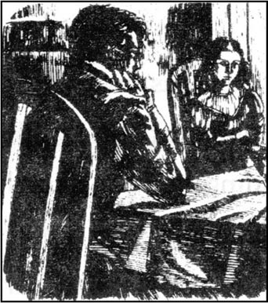
1797年
在以后的12年里，我比以前任何时候都过得舒心。我所有的时间都花在照看小凯茜身上，她给我们的生活带来了阳光。她是一个不折不扣的小美人，长着欧肖家的黑眼睛，林顿家的白皮肤。她不像她母亲那样孤傲和脾气暴躁，但也是习惯了要什么有什么。她的父亲对她非常宠爱，什么都给她，也从不责骂。
她13岁之前从未单独出过画眉山庄的门。她对呼啸山庄和希斯克利夫的事一无所知。她常问我远处荒原那边的山丘是什么样的，想骑着她的小马到那儿去。我知道主人不会让她离开画眉山庄的庇护，跑到那么远的地方，尤其是通向山丘的路离呼啸山庄很近。所以我总是告诉她等她长大些才能去。我不知道她是怎么打算的。
艾加先生收到一封她妹妹伊莎贝拉来的信。她在信中说她患了热病，将不久于人世，头一次、也是最后一次请求他去看望她。她还想托付他在她死后照顾她的儿子林顿。尽管我的主人实在不愿出门，可他还是毫不犹豫地依了她。他嘱咐我小心看管凯茜，然后就上路了。
他走了三个星期。开始凯茜没给我添什么麻烦。她整天在大花园里溜狗，骑她的小马。但有一天她问能不能到外面待一整天，然后骑上她的小马，后面跟着两条狗就走了。
到了吃茶点的时候还没见她的人影，我开始真的担心起来。我到外面找她。我在大门前碰到一个佣工，他曾看见她跳过花园和路之间的矮墙，骑着马朝山丘和呼啸山庄的方向去了。
这时我吓坏了。她可能在荒原里迷了路！她可能爬山时摔了下来！我以最快的速度走过荒原，上气不接下气地赶到呼啸山庄。当看到厨房的门前躺着凯茜的一条狗，我真是如释重负！我大声敲门，齐拉把我让了进去。我知道亨德雷死后她就成了这儿的女管家。
“哦，”她说，“你是来找你家小姐的！她在这儿，平安无事！主人希斯克利夫先生不在家。他一时还回不来。”
凯茜舒舒服服地坐在厨房里，跟哈里顿兴致勃勃地说着话。他已是个18岁的小伙子，长得高大强壮，正傻呆呆地盯着她看。我很高兴找到了她，但我还是作出生气要惩戒她的样子。
“好啊，小姐！你真是够野的，一个人跑了这么远！我到荒原找遍了你！你父亲会生气的！”
“我怎么啦？”她呜咽起来，忽然觉得有点害怕。“父亲并不禁止我离开画眉山庄！他不会骂我的，艾伦。他从不发怒，像你一样！我去了山上，艾伦！是这个——人——给我指的路，因为我不认识。”
我叫她戴上帽子，准备告辞。
“这是谁的房子？”她冷不丁地问道，“是你父亲的，是吗？”她转向哈里顿，加了一句。
“不。”他回答，眼睛看着下面，脸变得通红。
“那是谁的——你主人的？”她问。
他骂了一句，转过身去。
“艾伦，他没叫我‘小姐’。仆人该称我‘小姐’，对么？”
哈里顿眉头一皱，看上去很恼怒，但没说话。
“你，给我备马，”她命令道，“快点！”
“你他妈的什么意思？我不是你的仆人！”他怒吼道。
“你知道了，凯茜小姐，对一个年轻的小姐就用这种文雅的语言！跟我走吧，我们牵上小马离开吧。”我说。
“可艾伦，”她嚷道，反感地瞪着他，“他怎敢那样对我说话！他得照我吩咐的去做！”
“他不是你的仆人，小姐，”齐拉说道，她一直在听着他们的对话，“他是你表哥。”
“他不可能是我的表哥！”凯茜讥笑着喊道，“父亲到伦敦去接我表弟去了。他是个有教养人家的公子，不是——不是像他这样一个农场工人！”她指着衣衫邋遢、可怜巴巴的哈里顿。
她和齐拉让我很气恼。这样希斯克利夫就会听到他儿子回来的消息，我们本打算不让他知道的。而且凯茜也肯定会问父亲她是不是有个表哥在呼啸山庄。在回去的路上，我对她解释说要是她父亲得知她去了呼肃山庄，会对我很生气，有可能会把我赶走。她不愿想象这种结果，所以答应不让父亲知道她来呼啸山庄的事。
我们收到艾加先生的信说他妹妹已经去世了，他很快就带着他的小外甥回来。凯茜欣喜若狂。她又能见到父亲了，而且还将有一个同龄的表弟和她一起玩。
可当马车到来的时候，小林顿是被抱着进的房子。他是个皮肤苍白、身体瘦弱的少年，样子很像艾加先生。他看上去很虚弱，我不禁怀疑他还能活多久。我想如果他父亲希斯克利夫把他带到呼啸山庄去住的话，他就根本没有活下去的机会。
其实林顿只同我们一起住了一夜。当天晚上希斯克利夫的仆人约瑟夫来了，想求见主人，有话要说。虽然已经很晚，艾加先生长途跋涉也很疲惫，可约瑟夫执意要见，于是我就把他领到主人的房间。
“希斯克利夫派我来接他的儿子，不带上他我不能回去，”他说。
艾加先生好一会儿没做声，满面愁容。他本来希望按伊莎贝拉的遗愿把林顿留在他身边。可他无法拒绝孩子的父亲。
“转告希斯克利夫先生，”他平静地说，“艾伦明天会把他儿子送到呼啸山庄。他现在已经睡了，我不愿叫醒他。”
“不行！”约瑟夫手拍着桌子说道，“我现在必须把他带回去！”
“今天晚上不行！”艾加先生回答，“马上离开这座房子，把我的话告诉你的主人！”
“好极了！”约瑟夫往外走的时候叫嚷道，“要是他明天一大早没到，希斯克利夫会来接他的！”
13 Heathcliff's son at Wuthering Heights
13
Heathcliff's son at Wuthering Heights
1797 Linton was very surprised to be woken so early, and told that he had another journey to make, before breakfast. As we rode the four miles to Wuthering Heights, he kept asking me questions about his new home, and the father he had never seen. When we arrived, Heathcliff, Hareton, and Joseph all came out of the house to inspect the child.
'Master, that's not a boy,' said Joseph after a while. 'Look at that white skin and fair hair! Mr Edgar's sent you his daughter instead!'
'God! What a beautiful creature!' laughed Heathcliff scornfully. 'That's worse than I expected!'
I helped the trembling child off the horse and into the house. Heathcliff took him roughly by the arm.
'I hope you'll be kind to him, Mr Heathcliff,' I said. 'He's weak, and ill. And he's all the family you've got!'
'Don't worry, Ellen,' replied Heathcliff with a smile. 'As Isabella's son he'll inherit Thrushcross Grange one day, and I don't want him to die before that. He'll be educated as a gentleman. But I'm bitterly disappointed at having such a weak, crying baby for a son!'
So poor Linton was left in his father's care. At first Cathy was nuserable, because she would not now have anyone to play with, but she soon forgot him. Whenever I met Zillah, the housekeeper, in the village, I used to ask her about Linton.
'He's often ill,' she told me. 'And so selfish! He has to have a fire even in summer! He calls for cakes and hot drinks all the time. He only ever thinks of himself. Mr Heathcliff can't bear being in the same room as him!'
Several years passed without any more news of Linton. In 1800 Cathy reached the age of sixteen. We never celebrated her birthday, because it was also the day her mother died. On this particular day she came downstairs, dressed for going out, and suggested a walk on the moors with me. Her father gave permission.
It was a lovely spring morning, and I was very happy walking in the sunshine, watching Cathy running ahead of me. But we had walked further than I had realized, and I called to her to come back. She did not seem to hear me. We were on the moors, close to Wuthering Heights, when I caught sight of two men talking to her. I recognized Heathcliff and Hareton at once. I hurried to catch up with her.
'Miss Cathy,' I said breathlessly, 'we must go home. Your father will be getting worried.'
'No, he won't, Ellen. This gentleman wants me to go to his house and meet his son. He says we've already met, but I don't remember, do you? Let's go, Ellen!'
Although I protested, she and Hareton were already halfway to Wuthering Heights. Heathcliff and I followed behind.
'It's very bad of you, Mr Heathcliff,' I scolded him. 'Mr Edgar will blame me for letting her go to your house.'
'I want her to see Linton, Ellen,' he replied. 'Listen to my plan. It's really a very generous one. I want the two cousins to fall in love and marry. You know Cathy won't inherit anything from her father. My son Linton will inherit all the Linton fortune when Edgar dies. If she marries Linton, she'll be wealthy. Of course, if Linton dies, then the money comes to me, as his only other relation.'
I was still angry with Heathcliff, but it was too late to stop Cathy entering Wuthering Heights. She was delighted to rediscover her cousin Linton, who was keeping warm by the fire.
'If he is my cousin, and you are his father,' she said to Heathcliff, smiling, 'then you must be my uncle! Why don't you ever visit us at the Grange?'
'I visited it once or twice too often before you were born,' he said. 'I must tell you that I quarrelled violently with your father once. He hates me, and if you tell him you want to come here, he'll forbid it.'
'Well, if I can't come here, Linton can come to visit me at the Grange,' suggested Cathy happily.
'It'll be too far for me,' said her cousin weakly. 'It would kill me to walk four miles.'
Heathcliff looked scornfully at his son.
'I don't think my plan will ever succeed, Ellen!' he whispered to me. 'Who would fall in love with a selfish baby like that?' He went to the kitchen door and called, 'Hareton! Come and take Miss Cathy round the farm.' Cathy was eager to see the animals, and she and Hareton went out.
As we watched them through the kitchen window, Heathcliff seemed to be thinking aloud.
'I've taken my revenge on his father, by making Hareton work for me. I treat him badly, as they used to do to me, and he suffers, as I used to. He's intelligent, and strong, and handsome, but I've taught him to scorn those qualities. So now he's just an uneducated farm worker, and knows nothing of the world. That's how he'll always be. And my son? He's stupid, and weak, and ill. But he's gentleman, and he'll marry Cathy, and he'll be rich!'
Meanwhile Linton had got up from his armchair and gone out to join Cathy and Hareton. Through the open window I could hear the two younger ones laughing at Hareton's coarse way of speaking. I began to dislike Linton rather than pity him.
When we arrived back at the Grange, Cathy told her father about the visit. He did not want to frighten her, and, in my opinion, did not explain clearly enough why she should never communicate with Linton again. At the time she seemed to accept her father's wish.
During the next few weeks, however, I noticed Cathy's behaviour change. She was always writing on little pieces of paper, which she kept in a locked drawer in her room, and every morning she got up surprisingly early to go down to the kitchen. I suspected something, and one day I decided to break open her drawer. In it I was horrified to find a whole pile of love letters from Linton. The two cousins had been writing to each other in secret for several weeks, and Cathy had used the milkman as a messenger. I told her at once that I knew her secret, and made her promise not to send or receive any more letters. We burnt Linton's letters together.
inspect v. look at something carefully. 细看，审看。
disappointed at unhappy at not seeing hopes come true. 失望。
celebrate v. do something to show that a day or a happening is special. 庆祝。
catch up with reach or go past a person or thing that is going the same way. 赶上。
generous adj. liking to give things to people. 大方的，慷慨的。
be eager to warn to do something very much. 渴望的。
armchair n. comfortable chair with high sides where you can rest your arms. 扶手椅，安乐椅。
communicate with talk, write, or send message to someone. 讲话，传递（消息）。
quality n. something typical of a person or material. 品质，素质。
horrify v. frighten or shock someone. 吓唬，使震惊。
messenger n. someone who carries a message from one person to another. 通信员，送信人。
希斯克利夫的儿子在呼啸山庄
13 希斯克利夫的儿子在呼啸山庄
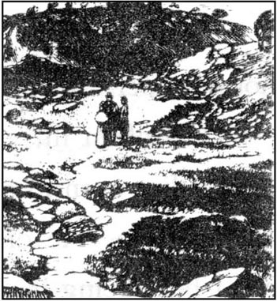
1797年
林顿很奇怪自己为什么那么早就被叫醒，而且还要接着走，连早餐都没吃。在我们去呼啸山庄的四英里路途中，他一直在问我有关他的新家和他那从未见过面的父亲的事。我们一到，希斯克利夫、哈里顿和约瑟夫都走出房子来审视这孩子。
“主人，那不是个男孩子，”过了一会儿约瑟夫说，“看那白皙的皮肤和浅色的头发！艾加先生把他的女儿给你送来充数！”
“上帝！多漂亮的小家伙！”希斯克利夫轻蔑地笑起来，“比我预想的还不如！”
我把战战惊惊的孩子扶下马，陪他进了房子。希斯克利夫粗野地抓着他的胳膊。
“我希望你对他好一点，希斯克利夫先生，”我说，“他体弱多病，况且他也是你唯一的家人！”
“别担心，艾伦，”希斯克利夫笑着答道，“他是伊莎贝拉的儿子，总有一天会把画眉山庄继承下来，在此之前我可不希望他死。他会被调教成个绅士。但要这么个弱不禁风、哭哭啼啼的孩子作儿子，让我大失所望！”
可怜的林顿就这样被留下来由他父亲照顾。开始凯茜很难过，因为这样一来没有人陪她玩了，但不久她就把他忘了。无论什么时候我在村子里碰到女管家齐拉，都会向她打听林顿的情况。
“他常生病，”她告诉我，“还特别自私！夏天他都得要点上炉火！他一刻不停地要点心和热茶。他只想着自己。希斯克利夫先生跟他在一个房间里根本待不下去！”
又是几年过去了，没再听到林顿的消息。1880年凯茜满16岁了。我们从未庆祝过她的生日，因为她母亲也是那一天去世的。就在这个不寻常的日子她一身出门的装束走下楼来，提议和我到荒原上去走走。她父亲同意了。
那是个可爱的春天的上午，走在阳光下，看着凯茜在前面蹦蹦跳跳，我心情很愉快。但在我不经意之间，我们已走出了很远，我喊她回来。她好像没听见我的话。我们在荒原上，离呼啸山庄不远，这时我看见有两个男人在跟她说话。当时我就认出是希斯克利夫和哈里顿。我赶紧追上她。
“凯茜小姐，”我喘着粗气说道，“我们得回家了。你父亲会开始担心了。”
“不，他不会，艾伦。这位先生想让我到他家去见见他儿子。他说我们曾见过面，可我不记得了，你记得吗？我们去吧，艾伦！”
尽管我不同意，可她和哈里顿已经走到去呼啸山庄的半路上了。希斯克利夫和我在后面跟着。
“你没安好心，希斯克利夫先生，”我指责他，“艾加先生会怪我让她去你家的。”
“我想让她见见林顿，艾伦，”他答道，“听听我的打算。这的确是个很大度的计划。我想让这两个表姐弟相爱结婚。你清楚凯茜继承不到他父亲的任何东西。我儿子林顿在艾加死后会继承林顿家所有家产。如果她嫁给林顿，她就会很富有。当然，如果林顿死了，财产就归我了，因为我是他唯一的家人。”
我还在生着希斯克利夫的气，但已经来不及制止凯茜进呼啸山庄去了。她很高兴又见到表弟林顿，他正在炉火旁取暖。
“他是我表弟，而你是他父亲，”她微笑着对希斯克利夫说，“那你肯定就是我姑父啦！你为什么从不到画眉山庄去看我们？”
“我在你出世之前多去了那儿一两次，”他说，“我必须告诉你有一次我同你父亲吵得很凶。他恨我，要是你告诉他你要到这儿来，他会坚决不许的。”
“那好，要是我不能来这儿，林顿可以去画眉山庄去看我。”凯茜满心欢喜地出主意道。
“对我来说太远了，”她的表弟细声细气地说，“走四英里我会累死的。”
希斯克利夫轻蔑地看着自己的儿子。
“我想我的计划是不可能成功了，艾伦！”他小声对我说，“谁会爱上像他那么个自私的小东西？”他走到厨房门口叫道，“哈里顿！来带凯茜小姐到农庄看看。”凯茜很想看看牲畜，于是她同哈里顿出去了。
我们从厨房的窗户看着他们，希斯克利夫好像是在自言自语。
“让哈里顿替我干活，我已经报复了他父亲。我对他百般虐待，他们以前对我也是那样；他很痛苦，我以前也一样。他聪明、健壮、英俊，但我教他看不起这些优点。所以他如今成了个没教养的干农活的，对这个世界一无所知。他将来永远就是这个样子啦。而我的儿子呢？他愚蠢、孱弱多病。可他是个绅士，他会娶凯茜，还会很富有！”
这时林顿从躺椅中站起来，出去找凯茜和哈里顿。我由开着的窗户听到那两个年纪较小的年轻人正在奚落哈里顿的说话口音粗俗。我开始有些不喜欢林顿，不那么同情他了。
我们回到画眉山庄后，凯茜把去呼啸山庄的事告诉了父亲。在我看来，他可能是不想吓着她，没有跟她解释清楚她为什么不能再和林顿交往。当时她似乎是接受了父亲的告诫。
可在过后的几个星期里，我注意到凯茜的举动有些异样。她老是在小纸条上写字，把纸条锁在她房间的抽屉里，每天早晨起床出奇地早，然后下到厨房。我怀疑她在搞什么鬼，于是一天我决定撬开她的抽屉。我震惊地发现里面是一大撂林顿写来的情书。这两个表姐弟偷偷地相互通信已有好几个星期了，凯茜是让送牛奶的替他们捎信。我马上告诉她我知道了她的秘密，逼着她答应不再写信和收信。我们一起把林顿的信烧了。
14 Secret visits
14
Secret visits
1800 The months passed, and soon it was autumn. Mr Edgar caught a bad cold, which seemed to get worse and worse. He stayed indoors the whole winter, so Cathy only had me as a companion on her walks. She had become very quiet and sad since her relationship with Linton had ended, and was very worried about her father's illness. One day when we were walking in the Grange garden, I noticed her crying.
'Cathy, what's the matter, love?' I asked.
'Oh, Ellen,' she sobbed, 'what shall I do if Father dies? And if you die? I'll be left alone!'
'I hope he and I have years more of life ahead of us. All you need do is look after your father, and let him see you're cheerful. But I think he would be really ill if he thought you loved Linton, whose father would like to see Mr Edgar dead.'
'I'll never, never do anything to worry or annoy Father,' she promised. 'I only want him to recover. I love him more than anyone else in the world, more than myself!'
Just then we reached the gate, and I saw a gentleman on a horse looking over it. It was Heathcliff.
'Miss Linton!' he called. 'There's something I must tell you!'
'I won't listen,' answered Cathy. 'Father and Ellen both say you're a wicked man.'
'But this is about my son Linton, not me. What a trick you played on him! You wrote him all those love letters, and then I suppose you got tired of it, and stopped! Well, you've broken poor Linton's heart. I swear, he's dying of love for you, and he'll be in the grave by next summer unless you help him! Be generous, come and visit him. I'll be away all next week, so your father won't be angry if you come.'
He rode away. Although I tried to persuade Cathy that Heathcliff could not be telling the truth, my young mistress was very upset, and determined to discover how Linton was.
The next morning we rode to Wuthering Heights. We found Linton alone, lying on a sofa. He looked feverish and ill, and had a bad cough.
'Will you shut the door?' he said crossly, as we entered. 'It's so cold! No, Cathy, I can't breathe if you kiss me! I want a drink.'
Cathy poured him a glass of water.
'And are you glad to see me, Linton?' she asked hopefully.
'Yes, I am,' he replied. 'But you should have come before! My father swore at me, and said it was my fault you didn't come. Will you come and visit me again?'
'Yes, Linton,' Cathy said gently, holding his hand. 'If Father agreed, I'd spend half my time with you. I wish you were my brother, then we could spend all our time together!'
'But my father says you would love me best if you were my wife, so that would be better.'
'I've never love anybody more than Father,' she replied seriously. 'Sometimes men hate their wives, like your father. He hated your mother, my aunt Isabella. That's why she left him.'
'That's not true!' cried the boy. 'Anyway, your mother hated your father! And she loved mine!'
'You're lying! I hate you!' she shouted angrily, and gave the sofa a violent push. He fell back, and started coughing so badly that even I was frightened. At last he recovered. Cathy was crying in a corner, afraid that she had really hurt him.
'How do you feel now, Linton?' she asked after a while. 'I'm sorry, I didn't mean to hurt you.'
'I wish you felt as ill as I do, you cruel thing! And I was better today, before you came!' His voice was full of pity for himself.
'We must go,' I said. 'You can see, Miss Cathy, that he isn't dying of love for you! It's not your fault that he's ill. Come along!' But I could not stop Cathy whispering something in Linton's ear, before we left the room.
On the way home I told her I would not allow her to visit him again.
'He's a selfish child, Miss Cathy, and I don't think he'll live till he's twenty. I'm glad you're not going to marry him.'
Cathy looked sad. 'I'm sure he'd recover if I looked after him. And I don't think we'd quarrel if we knew each other better.'
'Well, miss, if you try to go there again, with or without me, I'll tell your father.'
But the next day I fell ill, and had to stay in bed for three weeks, which was very unusual for me. My little mistress went from her father's bedroom to mine, and back again, and looked after us both with the greatest care. But I never wondered what she did in the evenings, when Mr Edgar had gone to bed, and I no longer needed her.
I only discovered the truth on the first day I was able to get up. In the evening I asked her to read to me, and was surprised how sleepy she seemed. She went to bed early. I felt rather worried about her health, and went to her room an hour later to see if she needed anything. Her bedroom was empty. I sat there in the dark, waiting for her to return.
When she arrived, shaking the snow off her shoes, she was shocked to find me there. I guessed where she had been, but I made her tell me the whole story. Every night since I had been ill, she had ridden to Wuthering Heights and spent the evening with her cousin. Sometimes she was happy with Linton, when he was cheerful and less selfish, but most of the time she was miserable. However, she insisted that the visits should continue, because Linton needed her, and she wanted to see him.
Although she begged me to say nothing to her father, I went straight to the master and told him. He forbade her to visit Wuthering Heights again. She had to obey her father, although it made her very sad.
Well, Mr Lockwood, all this happened only about a year ago. I never thought I would be telling a stranger this story! But who knows how long you'll be a stranger? You're too young to live alone for long, and no one could see Cathy and not love her. Anyway, I'll continue my story.
trick n. unkind game to make someone look silly. 恶作剧。
tell the truth say what is true. 说实话。
come along come on. 走吧。
forbid v. to command not to do something. 禁止，不许。
any way in any case. 不管怎样。
密访
14 密访
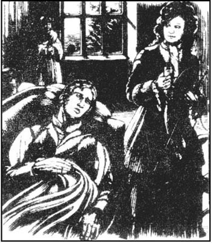
1800年
过了几个月，很快就到秋天了。艾加先生得了重感冒，似乎病情日渐严重。他整个冬天都待在屋里，所以凯茜散步时只有我来陪她。自从她同林顿的关系结束后，她变得很沉默、忧郁，也非常担心父亲的病情。有一天我们在山庄花园散步时我看到她哭了。
“凯茜，怎么啦，亲爱的？”我询问道。
“哦，艾伦，”她抽泣道，“要是父亲去世了我该怎么办？要是你再去世了呢？我就会被孤零零地撇下！”
“我倒希望他和我都能多活些年。你只需要照顾好你父亲，让他看到你快乐。但我想如果他认为你爱上了林顿，他会真的很痛苦，林顿的父亲盼着艾加先生死呢。”
“我永远、永远不会做让我父亲担心或不快的事，”她许诺道，“我只希望他能痊愈。他是世上我最爱的人，我爱他胜过我自己！”
就在我们刚到大门的时候，我看见一个绅士打扮的人骑在马上往里张望。是希斯克利夫。
“林顿小姐！”他喊道，“我有话得跟你说！”
“我不听，”凯茜回答，“父亲和艾伦都说你是个坏人。”
“可要说的是我儿子林顿的事，不是我。你对他施了什么鬼花招！你给他写了这么多情书，然后我想你是厌倦了，不写了！好了，你伤透了可怜的林顿的心。我肯定他会因为爱你而被折磨死的，要是你不帮帮他，到不了明年夏天他就要入土了！仁慈点儿罢，来看看他。我下个星期都不在家，所以你来的话你父亲不会生气的。”
他骑着马走了。尽管我百般劝说凯茜希斯克利夫一定没讲真话，可我家小姐还是很放心不下，执意要去看看林顿的情况。
第二天上午我们骑马去了呼啸山庄。我们发现林顿孤单地躺在沙发上，他像是得了病，在发烧，咳嗽得也很厉害。
“你们关上门行吗？”我们进屋时他不快地说，“太冷了！不，凯茜，别吻我，我会喘不上气来的！我想喝水。”
凯茜给他倒了杯水。
“你见到我高兴么，林顿？”她满怀期望地说。
“是的，我高兴，”他答道，“但你早就该来的！我父亲骂我，说你不来是我的过错。你还会来看我吗？”
“是的，林顿，”凯茜抓着他的手轻声说，“要是父亲同意，我可以抽一半时间来陪你。你是我弟弟该多好，那样我们就总能在一起了！”
“但我父亲说你要是成了我妻子的话，你就会最爱我，那样就更好了。”
“我不会爱任何人胜过我父亲，”她认真地说道，“有时候男人恨他们的妻子，像你父亲。他恨你母亲、我姑姑伊莎贝拉。所以她离开了他。”
“一派胡言！”小伙子嚷道，“不管怎么说，你母亲恨你父亲！她爱我父亲！”
“你撒谎！我恨你！”她喊道，使劲地推了一下沙发。他倒向后面，开始拚命地咳嗽，连我都吓坏了。最终他缓了过来。凯茜在一个角落里哭着，害怕自己真的伤着了他。
“你现在感觉怎么样，林顿？”过了一会儿她问道，“对不起，我不是故意要伤害你。”
“但愿你也得我这么重的病，你这个无情的东西！你来之前，今天我本来好些了！”他腔调里对自己充满了怜悯。
“我们得走了，”我说，“你看得出来，凯茜小姐，他不是因为对你的爱而要死的！他生病不是你的过错。走罢！”我们离开房间之前，我拦不住她在林顿的耳边悄悄说着什么。
在回家的路上我告诉她我不会允许她再去看他。
“他是个自私的孩子，凯茜小姐，我看他活不过20岁。我庆幸你不会嫁给他。”
凯茜满脸愁容。“如果我去照顾他，他肯定能好起来。如果我们能更了解对方，我想我们不会吵架的。”
“好，小姐，要是你还想再去那儿，不管要不要我去，我都会告诉你父亲。”
可第二天我病了，只好在床上躺了三个星期，这于我是很不常有的事。我家小姐从她父亲的卧室跑到我的卧室，又跑回去，精心照顾我们两个人。但我从没想到过在晚上艾加先生入睡后，我也不需要她照顾的时候，她都干了些什么。
到我头一天能下床的时候我才察觉真相。那天晚上我请她给我读点东西，没想到她显得很困。她早早地上了床。我有些担心她的身体，过了一个小时我去她房间看她是不是需要点什么，她的卧室空无一人。我坐在黑暗中等她回来。
她一进门，抖落鞋上的雪时看到我在那儿，她吓了一大跳。我猜到她去了哪儿，可我还是让她自己向我交代了整个来龙去脉。我生病后，她每天晚上都骑马到呼啸山庄去陪她表弟。在林顿心情愉快、不那么自私的时候，她有时也会高兴，可大多数时间里她都很难过。但她坚持继续去呼啸山庄，因为林顿需要她，她也想见他。
虽然她央求我不要对她父亲吐露任何风声，我还是径直到主人哪儿告诉了他。他严禁凯茜再去呼啸山庄。这让她很伤心，可她不得不听父亲的话。
好了，洛克伍德先生，这都不过是一年以前发生的事情。我从没想到会跟一个生人说这件事！可很难说您将来还算不算生人？您很年轻，不能总单独生活，谁见了凯茜都会喜欢上她的。不提这些了，我接着讲我的故事。
15 A trap
15
A trap
1800 A few days after the master had forbidden Cathy to visit Linton, he asked my opinion of the boy.
'Tell me honestly, Ellen, what do you think of his character?'
'Well, sir, I don't think he's wicked, like his father. But you'll have plenty of time to get to know him, sir. He's too young to marry yet.'
Mr Edgar walked to the window and looked out. It was a misty February evening, but the churchyard was just visible.
'I've often prayed for death, Ellen. I've been very happy with my little Cathy. But I've been just as happy lying, through the long June evenings, on her mother's grave, and looking forward to the moment when I can join Catherine there! I haven't got much time left, Ellen. What can I do for Cathy before I die? Should she marry Linton? I wouldn't mind him being Heathcliff's son, if only he loved her and could be a good husband to her.'
'God will show us what to do, sir,' I replied.
In the spring Mr Edgar was still ill, and he continued to worry about Cathy's future. One day he wrote to Linton inviting him to visit the Grange. Linton wrote a long letter back, explaining that his father would not allow him to do that. He begged his uncle to let him meet Cathy for a walk or a ride on the moors between the Grange and Wuthering Heights, as they could not meet in either house. Mr Edgar refused at first, and Linton sent him several more letters. I am sure they had all been carefully checked by Heathcliff before they were posted.
Finally Mr Edgar agreed. He hoped that, if Cathy married Linton, who would inherit the Linton fortune, she would at least be able to remain in her family home. He had no idea that Linton was seriously ill. Neither did I. I never imagined that a father could treat a dying child as cruelly and wickedly as we later discovered Heathcliff had done.
It was a hot, sunny day in summer when Cathy and I rode out to meet her cousin. We were both shocked to discover that he could neither ride nor walk, and was lying on the grass, waiting for us. He looked even paler and weaker than the last time I had seen him. During our meeting he did not seem interested in Cathy or her news. Cathy noticed this immediately.
'Well, Linton,' she said after a while, 'you don't want to talk to me, so I think I'll go home.'
'No, no!' he cried, getting quite excited. 'Not yet! Stay—at least another half-hour! My father will be angry with me if you leave early!'
'I suppose we can stay a few minutes longer,' said Cathy.
We waited, talking to each other quietly while Linton slept a little. Sometimes he cried out in pain.
'Do you think his health is better now than before?' whispered Cathy.
'I'm sorry, Miss Cathy, I think it's much worse,' I answered.
Cathy called her pony, and the sound woke Linton up.
'If you see my father,' he said, hesitating, 'could you tell him I've been cheerful? He'll be here soon!' And he looked round in terror.
'I'll be here next Thursday!' cried Cathy, as she jumped on her pony. 'Come on, Ellen!'
In the week that followed, Mr Edgar's illness grew worse every day. Cathy could not avoid realizing how serious it was, and sat by his bedside day and night, looking sad and pale. Her father's room had become her whole world. On Thursday I thought a ride in the fresh air would be good for her, and Mr Edgar gladly gave her permission to see Linton. He was hoping that she would not be left alone after his death. I did not want to worry him in his last moments, so I did not tell him that Linton was also dying.
We rode on to the moors and found Linton lying in the same place as before. He was looking very frightened. 'I thought you weren't going to come!' he said.
'Why won't you be honest?' cried Cathy at once. 'Why have you brought me here again, if you don't want to see me? My father's very ill and I should be with him.'
Tears rolled down Linton's face. He seemed terrified.
'Oh, I can't bear it!' he sobbed. 'Cathy, I daren't explain! But if you leave me, he'll kill me! Dear Cathy, my life is in your hands! Kind, sweet Cathy, perhaps you will agree, and then he won't hurt me!'
Cathy was no longer impatient. 'Agree to what, Linton?' she asked gently. 'Tell me everything! You wouldn't do anything to hurt me, would you, Linton? I'm your best friend.'
'I daren't tell you! My father—' the boy gasped. Just then Heathcliff appeared. He did not look at Cathy and Linton, who continued talking to each other, but he spoke quietly to me.
'Ellen, how is Edgar? Is he dying, as the villagers say?'
'It's true, the master is dying,' I answered.
'That boy over there is dying too. I only hope Edgar dies before him. If Linton dies first, my plan will fail.' He shouted angrily to his son, 'Get up, Linton!' and then said politely to Cathy, 'Miss Cathy, would you help him back to the house. He can't walk far alone.'
'Father has forbidden me to enter your house,' said Cathy.
'Well, come along, Linton. I'll have to take you home then,' said Heathcliff.
'No! No! No! Please, Cathy! You must come with me!' screamed Linton wildly. He held desperately on to her arm.
Cathy could not refuse the boy, who seemed almost mad with fear. So we all walked the few steps to Wuthering Heights. When we had entered the house, however, I was horrified to see Heathcliff lock the front door. The key was in his hand.
'Hareton, Joseph and Zillah are all out of the house,' he said calmly, 'so we are quite alone.'
'Give me that key!' cried Cathy angrily. 'I'm not afraid of you!' She took hold of his closed hand and bit it. He hit her violently several times, on both sides of the head, and she fell into a chair, trembling. I rushed at him, but he pushed me away.
'Cry as much as you like, Miss Cathy,' he said. 'In a few days I'll be your father, and I'll punish you just like that, as often as necessary!'
When Heathcliff went out to look for our horses, Cathy and I hurried round the kitchen looking for a way to escape. But all the doors and windows were locked. Linton was sitting calmly in a chair near the fire, happy that he was not being punished this time. We persuaded him to explain his father's plan to us.
'Father is afraid I'll die soon, you see, so he wants us to be married tomorrow morning. You'll have to stay here all night, Cathy. Then perhaps he'll let you go home in the morning.'
'You marry this beautiful, healthy young lady?' I cried. 'You must be mad! And wicked too! You and your father have tricked us into coming here!' And I shook him until he started coughing.
'I must go home now. Father will be worried already,' said Cathy. 'I love Father better than you, Linton!'
Heathcliff returned and sent his son upstairs to bed.
'Mr Heathcliff,' begged Cathy, 'Father will be miserable if I don't go home. Please let me go. I promise to marry Linton. Father would like it, and I love him. Why do you force me to do something I want to do?'
'He can't force you!' I cried. 'I'll go to the police!'
'To the devil with you, Ellen! Miss Cathy, I'm delighted that your father will be miserable. In that case you will certainly stay here for twenty-four hours. You won't leave here until you've kept your promise to marry Linton.'
'Please send Ellen to let Father know I'm safe!' sobbed Cathy bitterly. 'Poor Father! He'll think we're lost!'
'Your father must have hated you when you came into the world (I did, at least), and he'll hate you as he leaves it. Go on crying. That's what you'll be doing when you're Linton's wife. He'll make a cruel, selfish husband, I think.'
Heathcliff took us upstairs to Zillah's room, where we spent the night, locked in. Neither of us could sleep. At seven the following morning he came to fetch Cathy, and took her away. From that moment I saw nobody except Hareton, who brought me food, for four whole days and nights.
On the fifth morning Zillah came into the room. She was surprised and pleased to see me, and told me the villagers all thought Cathy and I had got lost on the moors, and died, four days ago. I ran out of the room to look for Cathy.
The big kitchen was full of sunshine, and the door was open, but the only person there was Linton.
'Where is she? Where is Miss Cathy?' I cried wildly.
'Upstairs, in a locked room,' he replied calmly, eating a piece of sugar. 'We won't let her go yet. Father says I shouldn't be soft with Cathy. We've had the wedding ceremony, so she's my wife now, and must stay with me. I don't care if she cries, or is ill!'
'Have you forgotten her kindness to you last winter, when you wrote that you loved her, and she used to come through wind and snow to see you? Now you believe your father's lies about her! And you leave her alone, ill and crying in a strange house! You pity yourself, but you won't pity her! What a heartless, selfish boy you are!'
'I can't stay with her! She cries so much I can't bear it! I can't sleep with all that noise. She promised that if I gave her the key to our room, she'd give me all her nice books, and her pony, but I told her she had nothing to give. They're all mine, or they'll belong to me very soon. And then she cried, and took a little gold case from around her neck. Inside were two pictures, one of her mother and one of her father. I wanted to take them both from her, but she wouldn't let me, so I screamed for help. My father came, and ordered her to give him the pictures and the case. When she refused, he—he hit her on the face and knocked her down, and broke the gold case under his foot. He took away the picture of her mother.
'And were you pleased to see Miss Cathy hurt?' I asked.
'My father was right to punish her. But I didn't like seeing her mouth full of blood. She can't speak because of the pain. Now you've made me tired with all this talking! You won't find the key to the room! Go away!'
As there seemed to be no chance of persuading him to help her escape, I decided to go back to the Grange as quickly as possible, and rescue her later.
What a welcome I received from the servants at the Grange, who thought I was dead! But I did not have time to tell them my story. I went straight to my master's room. He was lying in bed, very weak and close to death. I told him how Heathcliff had trapped us, and that Cathy was probably married to Linton by now. Mr Edgar realized that his enemy wanted to get hold of the Linton fortune, through his son. He asked me to send for his lawyer, to make arrangements so that Cathy would not lose all her inheritance.
I did as he asked, but the lawyer sent a message, saying that he could not come until the next day. I also sent four strong men with weapons to Wuthering Heights, to demand my young lady's freedom. I was very angry when they returned without her, because Heathcliff had sent them away.
But I needn't have worried. In the middle of the night, as I was taking some water to the master, I heard a knock on the front door, and went to open it. It was my little mistress!
'Ellen, Ellen!' she sobbed. 'Is Father still alive?'
'Yes,' I cried, 'and thank God you're safe with us again!'
'I managed to make Linton help me escape from the room! Now I must see Father!'
I could not bear to be present at their meeting. I waited outside the bedroom door. But they were both calm. Cathy's despair was as silent as her father's happiness. He died in perfect peace, Mr Lockwood. Kissing her, he whispered, 'I'm going to join her, and you, dear child, will join us!' He did not move or speak again.
Cathy did not cry, but sat silently by his dead body all morning. At lunch-time the lawyer arrived, too late to help Cathy. Heathcliff had bribed him to stay away. He gave us Heathcliff's orders. All the servants except me had to leave. Cathy, Mrs Heathcliff now, was only allowed to stay at the Grange until her father was buried.
look forward to wait for something with pleasure. 期待，盼望。
at least no less than. 至少，起码。
honest adj. not stealing or cheating. 诚实的，可靠的。
impatient adj. not wanting to wait. 不耐烦的；急燥的。
persuade v. make someone believe or do something by talking to him. 说服，劝导。
in that case if that happens. 假如那样的话。
belong to be owned by someone or something. 属于。
care v. feel interest, worry, sadness, etc. 介意。
knock... down hit someone so he falls to the ground. 撞倒在地。
rescue v. save someone or something from danger. 救援，救出。
trap v. catch or trick a person or animal. 诱捕，使上当。
despair n. feeling of no hope. 绝望。
bribe v. to influence unfairly by favors or gifts. 贿赂，行贿。
圈套
15 圈套
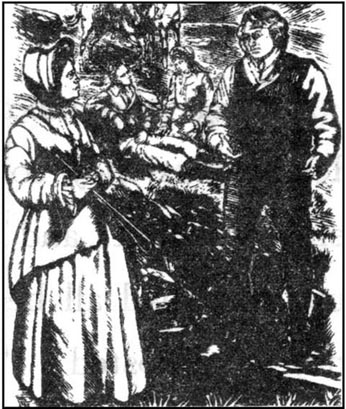
1800年
就在主人不准凯茜去看林顿过后几天，他问我对那个小伙子有什么看法，
“跟我说实话，艾伦，你觉得他品行怎么样？”
“嗯，先生，我觉得他不恶毒，不像他父亲。可是要了解他，您得花很多功夫，先生。他太小，还不能结婚。”
艾加先生走到窗前，朝外望去。那是一个雾濛濛的2月的夜晚，刚刚能看到教堂墓地。
“我常盼着死去，艾伦。有我的小凯茜，我非常幸福。但在那6月的漫漫长夜里我躺在她母亲的坟冢上，期望着能在另一个世界与她重逢的时候，我也同样欣慰！我剩下的时间不多了，艾伦。我死之前能为凯茜做些什么呢？她该嫁给林顿吗？只要他爱她，能做个好丈夫，我不会在乎他是希斯克利夫的儿子。”
“上帝会教我们怎么做的，先生。”我回答。
到了春天艾加先生的病情依旧，他还在为凯茜的前程担忧。有一天，他写信给林顿请他来画眉山庄作客。林顿回了一封长信，解释说他父亲不许他来。他恳求舅舅让他见凯茜一面，到画眉山庄和呼啸山庄之间的荒原上去散步或者骑马，因为他们在哪个家里都不能会面。艾加先生开始不同意，接着林顿又给他写了几封信。我肯定那些信在寄出前都经希斯克利夫仔细审查过。
最终艾加先生同意了。他希望如果凯茜嫁给林顿（他将继承林顿家的财产），那她至少还能住在她自己家的房子里。他不知道林顿已重病缠身，我也不知道。我怎么也想不到一个父亲能那么无情、狠毒地对待一个垂死的孩子，这是我们后来才发现的。
在一个炎热、阳光明媚的夏日，凯茜和我骑马去见她表弟。看见他既不能骑马又不能走路，而是躺在草地上等着我们，我们都大吃一惊。他比上次我见到他时脸色更苍白、身体更虚弱。我们在一起的时候他好像对凯茜和凯茜说的事都不感兴趣。凯茜当时就看出来了。
“那好，林顿，”她停了一会儿说道，“你不想和我说话，那我想我还是回家吧。”
“不，别走！”他叫起来，有些激动，“先别走！留在这儿——至少再待半个钟头！如果你早走了，我父亲会对我发火的！”
“我想我们还能再待几分钟。”凯茜说。
林顿小睡了一会儿，我们边等边小声说着话。有时他疼得叫出声。
“你觉得他的身体比以前好些了吗？”凯茜低声说。
“很遗憾，凯茜小姐，我觉得大不如从前。”我回答。
凯茜唤了一声她的小马，声音把林顿弄醒了。
“如果你见到我父亲，”他犹犹豫豫地说道，“你能不能跟他说我挺高兴的？他马上就会来了！”说罢惊恐地往四下看了看。
“我下礼拜四来！”凯茜大声说，一边跳上马。“走罢，艾伦！”
在此后的一周里，艾加先生的病日渐恶化。尽管很不情愿，凯茜还是意识到了病情严重性，于是不分昼夜地守在他的床前，她愁眉不展，气色很差。她成天只在父亲的房间待着。到了礼拜四，我琢磨骑马透透新鲜空气会对她有好处，而且艾加先生很高兴地允许她去看林顿。他希望死后不至于把她孤孤单单地撇下。我不想让他在最后的日子有什么放心不下的，所以没告诉他林顿也快死了。
我们骑着马上了荒原，看到林顿还像上次一样躺在同一个地方，面带惊惧之色。
“我以为你不来了呢！”他说。
“你为什么不说实话？”凯茜顿时哭了，“要是你不愿见我，为什么还要把我叫来？我父亲的病很重，我应该陪着他。”
眼泪顺着林顿的面庞往下淌，像是很害怕的样子。
“噢，我受不了啦！”他呜咽道，“凯茜，我不敢说！可要是你离开我，他会杀了我的！亲爱的凯茜，我的命攥在你的手里！善良、可爱的凯茜，你或许会答应，这样他就不会折磨我了！”
凯茜不再那么不耐烦。“答应什么，林顿？”她轻声问，“全都告诉我！你不会做伤害我的事，对么，林顿？我是你最好的朋友。”
“我不敢告诉你！我父亲——”这孩子喘了口气。就在这时希斯克利夫出现了。他没看凯茜和林顿，他们还在接着说话，他悄悄地对我说。
“艾伦，艾加怎么样啦？他是快死了吗？村里的人是这么讲的。”
“是的，老爷将不久于人世了。”我回答。
“那孩子也快要死了。我只希望艾加死在他前面。要是林顿先死，我的计划就落空了。”他向儿子怒斥道，“起来，林顿！”然后又彬彬有礼地对凯茜说，“凯茜小姐，你能扶他回家去吗。他一个人走不了太远的路。”
“父亲不让我进你们家的宅子。”凯茜说。
“好罢，走，林顿。那我来带你回家。”希斯克利夫说。
“不！不！不！求你啦，凯茜！你一定要跟我来！”林顿大叫起来。他没命地抱着凯茜的胳膊。
凯茜无法拒绝他，他好像是吓得快发疯了。于是我们一起走这几步到了呼啸山庄。可当我们一进屋，我吃惊地看到希斯克利夫把前门锁上了。钥匙在他手里。
“哈里顿、约瑟夫和齐拉都不在，”他平静地说，‘所以只有我们自己。’
“把钥匙给我！”凯茜愤怒地喊道，“我不怕你！”她抓住他攥着的手咬了一口。，他使劲打了她头两侧几下，她倒在了椅子里，浑身颤抖着。我朝他冲过去，但他把我推开了。
“你愿意怎么哭就怎么哭，凯茜小姐。”他说，“过不了几天我就是你父亲啦，只要需要，我会就这样教训你！”
希斯克利夫出去找我们的马的时候，凯茜和我忙着在厨房里找逃路。但所有的门和窗户都上了锁。林顿在炉火旁的椅子里安然地坐着，很高兴他这次没受到惩罚。我们劝说他把他父亲的计划告诉我们。
“父亲怕我很快就要死了，你知道，所以他想让我们明天上午结婚。你一整夜都要在这儿待着了，凯茜。上午他可能就让你回家。”
“你和这个漂亮、健康的年轻小姐结婚？”我叫道，“你一定疯了！而且恶毒！你和你父亲用计把我们骗到这儿！”我晃着他，直到他开始咳嗽为止。
“我现在必须回家。父亲肯定已经担心了，”凯茜说，“我爱我父亲胜过爱你，林顿！”
希斯克利夫回来后把儿子送到楼上的床上。
“希斯克利夫先生，”凯茜哀求道，“要是我不回家，父亲会很难过的。求您让我走吧。我答应嫁给林顿。父亲会喜欢这样的，我爱他。你为什么要逼着我做我原本愿意的事？”
“他不能强迫你！”我叫道，“我要去找警察！”
“见你的鬼去罢，艾伦！凯茜小姐，你父亲难过我很开心。要是这样，你自然要在这儿待24小时。你得实现要嫁给林顿的诺言，否则别想离开这儿。”
“请让艾伦去给我父亲报个平安！”凯茜泣不成声，“可怜的父亲！他会以为我们迷路了！”
“你来到这世上时你父亲一定恨你（至少我是这样），而在他离开这世上时还会恨你。接着哭吧。你当了林顿的妻子就只能以泪洗面了。我想必他会是个无情、自私的丈夫。”
希斯克利夫把我们弄到楼上齐拉的房间里，被锁在里面过了一夜。我们俩都睡不着。第二天早晨7点他来找凯茜，把她带走了。在此之后整整四个昼夜里，除了哈里顿来给我送吃的，我就谁的面也没见到了。
第五天的早晨齐拉来到了房间。她见到我很吃惊，也很高兴，告诉我村里人都以为凯茜和我四天前就在荒原上迷路死了。我跑出房间去找凯茜。
大厨房里洒满了阳光，门是开着的，但只有林顿一个人在。
“她在哪儿？凯茜小姐在哪儿？”我厉声问道。
“楼上，锁在房间里，”他不动声色地答道，正吃着一块糖。“我们还不能放她走。父亲说我对凯茜不能手软。我们已经举行了婚礼，所以她现在是我妻子，得和我在一起。我不在乎她哭不哭、病不病！”
“你忘了她去年冬天对你多好，你写信给她说你爱她，她顶风冒雪来看你？如今你听信了你父亲说她的鬼话！你把她孤独地撇在一旁，任她在一个陌生的房子里生病、痛苦！你可怜自己，却不肯可怜她！你真是个没心没肺、自私的小子！”
“我无法和她待在一起！她没命地哭，我受不了！吵得我睡不着。她答应要是我把我们房间的钥匙给她，她就把她所有的书还有小马给我，但我告诉她说她没有什么东西可给我的啦。它们已经是我的了，或者说很快就会属于我。然后她哭了起来，从脖子上拿下一个小金框。里面有两张肖像，一张是她母亲，另一张是她父亲。我想把它们都从她手里拿过来，可她不肯，所以我就大叫起来。我父亲来了，命令她把画像和金框都交给他。她不肯，他——他就扇了她一记耳光，把她打倒在地，用脚踩坏了金框。他把她母亲的肖像拿走了。”
“看到凯茜小姐受虐待你挺开心吧？”我问。
“我父亲惩罚她没错。但我不喜欢看她满嘴是血的样子。她疼得说不出话来。你让我说了这么多话我都累了！你找不到房间钥匙的！走开！”
看来要劝说他帮凯茜逃走是没什么指望了，我决定尽快赶回画眉山庄，过后再救她。
回到画眉山庄，我受到仆人们的热情迎接，他们都以为我死了！但我没时间跟他们讲原委。我径直去了主人的房间。他躺在床上，极度虚弱，快要不行了。我告诉他希斯克利夫是如何骗我们入了圈套，还有凯茜很可能已嫁给了林顿。艾加先生明白过来他的仇敌是想通过他的儿子来抢夺自己的财产。他叫我去找他的律师，做好安排使凯茜不至于失去全部的继承权。
我照他说的做了，可律师捎信来说第二天才能来。我还派了四个壮汉带着武器到呼啸山庄去解救我家小姐。他们空手而归，我很生气，因为希斯克利夫把他们赶了回来。
可我没必要担心。当天深夜，我正去给主人送水，听见前门有敲门声就去开门。正是我家宝贝小姐！
“艾伦，艾伦！”她呜咽着，“父亲还活着吗？”
“是的，”我哭了，“感谢上帝你又平平安安地回到了我们身边！”
“我想法儿让林顿帮我逃出了那房间！现在我得见父亲！”
他们会面时我不忍在场。我在卧室门外等着。但他们俩都很平静。凯茜的绝望和她父亲的欣慰都在沉默中表达了。他是非常安祥地死去的，洛克伍德先生。他亲着她，微弱地说，“我要去见她了，而你，亲爱的孩子，也会和我们团聚的！”他再也没有动、没有说话。
凯茜没哭，但整个上午都在他的遗体旁默默地坐着。午饭时律师来了，太晚了，已帮不了凯茜。希斯克利夫贿赂了他要他别管这事，他传达了希斯克利夫的指令。除我之外，所有的仆人都被遣走了。只允许凯茜，现在是希斯克利夫夫人，在她父亲下葬前住在画眉山庄。
16 Cathy becomes a widow
16
Cathy becomes a widow
1800—1 On the evening after the burial, Heathcliff came to fetch Cathy.
'Why not let her stay here with me?' I begged.
'I'm looking for someone to rent the Grange from me,' he answered. 'You'll stay on here as housekeeper, Ellen, but Cathy must come to Wuthering Heights. From now on she'll have to work for her food.'
'I shall work,' replied Cathy. 'And I'll look after Linton. He's all I've got to love in the world. I'm just sorry for you, Mr Heathcliff. You have nobody to love you! You are as lonely and miserable as the devil! Nobody will cry for you when you die! I'm glad I'm not you!'
'Go and get your clothes, you wicked girl,' he said. 'We'll be leaving in a few minutes.' When she had gone, he walked across the room to look at the picture of Cathy's mother, Catherine, which was hanging on the wall.
'Do you know what I did yesterday, Ellen?' he said, turning quickly away from the picture. 'I went to the churchyard, and asked the man who was digging Edgar's grave to open the lid of Catherine's coffin for me. Her face looked just the same! I could not stop looking at her. When the man closed the lid, broke open one side of her coffin, the side away from Edgar's grave, and covered it up with earth. And I bribed the man to bury me there when I die, next to her, and to take the side of my coffin away too, so that I shall have her in my arms, not Edgar!'
'You were very wicked, Mr Heathcliff, to disturb the dead!'
'I disturbed nobody, Ellen, and I feel much happier now. She is the one who has disturbed me. For eighteen years she has haunted me. You know I was wild, almost mad, after she died. For days I prayed for her ghost to return to me. On the day of her burial, I went to her grave in the evening. There was a bitter wind, and snow on the ground. I wanted so much to have her in my arms again! So I dug down through the loose earth to her coffin, and was about to pull the lid off, when I felt a warm breath on my face. She seemed to be with me, not in the earth, but close to me. I was so happy that she was with me again! I filled in the grave, and ran eagerly home to the Heights. I looked impatiently round for her. I could feel her but I could not see her! And since then, she has played plenty of tricks on me like that. When I sleep in her bedroom, I can hear her outside the window, or entering the room, or even breathing close to me, but when I open my eyes, I'm always disappointed. Slowly, slowly, she's killing me, with the ghost of a hope that's lasted eighteen years!'
He was talking almost to himself, so I did not answer. When Cathy came in, he stood up, ready to go.
'Goodbye, Ellen!' whispered my dear little mistress. 'Come and visit me!' As she kissed me, her face felt as cold as ice.
'Oh, no you won't, Ellen!' said Heathcliff. 'I'll send for you if I want you!' and together they left the Grange.
I haven't seen Cathy since then. Once I went to the Heights to visit her, but I was not allowed to see her. About six weeks ago I had a long conversation with Zillah, the housekeeper, who gave me news of Cathy. It appeared that, when she arrived at the Heights, she did her best to look after her sick husband. He was obviously dying, although Heathcliff refused to call the doctor. Only a few weeks after her arrival, Linton died in the night, with only Cathy by his bedside. Heathcliff inherited all of Linton's, and what had been Cathy's, fortune, so Cathy is now very poor.
She must be very miserable, and very lonely, in that dark, unpleasant house. Heathcliff hates her, and Joseph and Zillah don't speak to her, because they think she's too proud. Poor Hareton would like to be friendly with her, but she scorns him because he's uneducated. I would like to leave my job here, rent a little cottage and ask Cathy to come and live with me, but Mr Heathcliff will never permit that. Of course, if she married again, she could leave that house, but I can't arrange that.
fetch v. go and get someone or something. 去取，带走。
from now on after this. 从此以后，今后。
lid n. cover for a box, pot, etc. 盖子。
coffin n. box in which a dead person lies. 棺材。
bury v. put a person or thing in the ground, in a grave, etc. 埋葬，掩埋。
cottage n. small house in the country. 农舍，小屋。
凯茜成了寡妇
16 凯茜成了寡妇
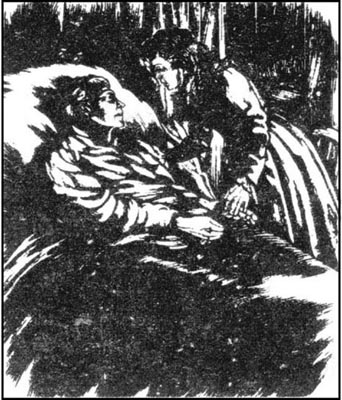
1880—1881年
葬礼后的当天晚上，希斯克利夫来领凯茜。
“你就不能让凯茜和我在一起吗？”我乞求道。
“我在找人来租我的画眉山庄，”他回答，“你住在这儿做管家，艾伦，但凯茜必须来呼啸山庄。从现在起她要干活才有饭吃。”
“我会干活的，”凯茜回答，“我来照顾林顿，他是这世上我唯一需要去爱的人。我只是为你感到难过，希斯克利夫先生。没有人爱你！你就像个鬼一样孤独痛苦！你死的时候没人会为你掉眼泪！我庆幸我不是你！”
“去取你的衣服，你这个混账丫头，”他说，“我们几分钟后就走。”她出去后，他走到房间的另一头，看着挂在墙上凯茜母亲凯瑟琳的画像。
“你知道昨天我干了什么，艾伦？”他很快把视线从画像上转回来说道，“我去了教堂墓地，让给艾加掘墓的人替我打开了凯瑟琳的棺材盖。她的面容看上去跟以前完全一样！我禁不住地盯着她看。那人盖上棺材后，我把她棺材不靠艾加墓的一面砸开了，然后用土埋上。我还收买了那个人，等我死后把我埋在那儿，埋在她旁边，我也要把我棺材的一面去掉，这样我就可以搂着她了，艾加不能！”
“你真恶毒，希斯克利夫先生，去惊动死去的人！”
“我谁也没惊动，艾伦，我现在感觉高兴多了。她才是惊动了我的人。18年来她在索我的命。你知道，她死后我变得狂野，几乎发了疯。好几天我都在祈求她的鬼魂能回到我身边。在她下葬的那天，我晚上去了她的墓前。当时凄风阵阵，地上积着雪。我太想再把她抱在怀里啦！所以我挖开盖在她棺材上疏松的泥土，正想掀开盖子，突然觉得我的脸上有一股温暖的气息。她好像就在我身边，不在泥土里，而且紧靠着我。她又和我在一起了，我欣喜不已！我覆盖好坟墓，急冲冲地跑回呼啸山庄家里。我焦急地四下里找她。我能感觉到她，但看不见她！打那以后她如法炮制地屡次捉弄我。我睡在她房间的时候，我能听到她在窗外，或进了屋，或就在我身边呼吸，可当我一睁开眼，我总是失望。慢慢地、慢慢地，她用持续了18年之久的幽灵般飘渺的希望试图弄死我！”
他几乎是在自言自语，所以我也没有回答。凯茜进来了，他站起来，准备走。
“再见，艾伦！”我亲爱的小女主人小声说，“来看我！”她亲我的时候，我觉得她脸上冰凉。
“噢，你不能，艾伦！”希斯克利夫说，“如果我需要你，我会派人来叫你的！”他们一起离开了画眉山庄。
此后我就没有见过凯茜。有一次我去呼啸山庄看她，但没让我见她。大概六个星期以前我和女管家齐拉长谈了一次，她跟我讲了凯茜的消息。看来在凯茜到呼啸山庄后一直尽心尽力照顾她生病的丈夫。很明显他快要死了，尽管如此，希斯克利夫还是不让找大夫。在她到呼啸山庄仅几个星期之后，林顿在夜里死了，当时只有凯茜陪在他床边。希斯克利夫继承了林顿的（原本是凯茜的）所有财产，所以现在凯茜一贫如洗。
在那栋阴暗、压抑的宅子里，她一定过得很痛苦、很孤独。希斯克利夫恨她，约瑟夫和齐拉也因为觉得她孤傲而不跟她说话。可怜的哈里顿想对她友善一点，可她又看不起他没教养。我愿意辞了这儿的工作，租上一间小农舍让凯茜来和我一起住，但希斯克利夫决不会答应的。当然，要是她再嫁人的话她就能离开那宅子，可要我安排我又无能为力。
17 Mr Lockwood visits Wuthering Heights again
17
Mr Lockwood visits Wuthering Heights again
1802 After hearing the end of Mrs Dean's story, I made my plans for the future. I decided I did not want to spend another winter at the Grange, and told her I would ride to the Heights to inform my landlord. She handed me a letter to give to Cathy Heathcliff.
When I arrived at the gate, Hareton met me and took me into the house. Cathy was there, preparing vegetables for lunch. She did not bother to greet me.
'She may be beautiful,' I thought, 'but she's not very polite.' I passed by her chair, and cleverly dropped Mrs Dean's note in front of her, so that Hareton wouldn't see it. She, however, just said aloud, 'What's that?'
'A letter from the housekeeper at the Grange,' I said, annoyed with her. She gasped, and tried to pick it up, but Hareton got there first.
'Mr Heathcliff will want to look at this,' he said, putting it in his pocket. But when Cathy pretended to cry, Hareton could not bear to make her sad, and he threw the letter down on the table. She eagerly read every word, and asked me several questions about the people at the Grange.
'Mrs Dean will want an answer to her letter,' I reminded her.
'You must tell her that I have no paper or pens to write with. I haven't even any books!' she answered sadly.
'No books!' I cried. 'How can you manage without them in this lonely place?'
'I always used to read so much that Mr Heathcliff decided to take away my only pleasure and destroy my books. I've looked all over the house for them. Joseph only reads the Bible, but some of my books are in Hareton's room! Why did you take them, Hareton? Just because you enjoy stealing? They can't be any use to you!'
'I think Mr Hareton wants to learn,' I said, hoping to prevent a quarrel between them. 'No doubt he took them away to study them.'
'Yes,' replied Cathy, laughing. 'I hear him trying to read to himself sometimes and it's extremely funny! He makes some terrible mistakes!'
After a moment's shocked silence Hareton left the room. He returned almost immediately with his arms full of books, and threw them angrily down at Cathy's feet.
'Take them!' he shouted. 'I never want to see them again!'
'I won't have them now,' she said. 'I'll hate them because they'll make me think of you.'
Hareton picked up the books and threw them on the fire, then walked quickly out of the house.
Mr Heathcliff came in as Hareton went out. He had a restless, anxious expression on his face.
'Mr Heathcliff,' I said, 'I must tell you I'm leaving for London next week, for six months, and I shan't want to rent the Grange any more after October.'
'So, Mr Lockwood, you've got tired of the moors already, have you? Well, have your lunch with Hareton and me, anyway. Cathy, take your lunch in the kitchen with Joseph and Zillah.'
I did not enjoy lunch with my two silent companions, and left the Heights straight afterwards.
'What a pity,' I thought, 'that Cathy Heathcliff and I didn't fall in love, as Mrs Dean would have liked! Then I could have taken her away from this miserable place for ever!'
Several months later, in September, I was travelling to visit friends in Yorkshire. I found myself near Thrushcross Grange, and decided to spend a night there. After all, I was still paying rent for it. When I arrived, I was surprised to find a different housekeeper, who told me Mrs Dean had become housekeeper at the Heights. I wanted to have a walk after travelling all day, so I left orders for the woman to cook my supper and prepare a bedroom for me, and I walked the four miles to Wuthering Heights.
As I came close to the old house, I noticed that there were flowers in the garden, and the doors and windows stood open. I could see two people inside, and I stopped for a moment, curious to hear a little of their conversation.
'Read it again, stupid!' said a voice as sweet as a silver bell. 'Read it correctly this time, or I'll pull your hair!'
'You must kiss me if I get it right,' answered a deep voice. The man was sitting at a table, reading from a book. His handsome face shone with pleasure, and his eyes often left the book to look at the small white hand that lay on his shoulder. The girl stood behind him, bending over to help him. Her face—it was fortunate he could not see her face, or he would never have been able to concentrate on his studies. I could see it, and I was bitterly sorry that I had thrown away my chance of seeing that beauty every day of my life.
I did not want to disturb their happiness, so I went round to the back door, where I discovered my old friend Ellen Dean.
'Oh, Mr Lockwood, welcome back!' she cried. 'Are you staying at the Grange again?'
'Yes, Mrs Dean, just for one night. But tell me, why are you housekeeper here now and not at the Grange?'
'Zillah left, you see, and Mr Heathcliff wanted me here.'
'I have a little business with him, about the rent.'
'Oh! Mr Heathcliff is dead, sir. He died three months ago. I manage all Mrs Heathcliff's business for her. She hasn't learnt to do it herself yet, you see.'
'Heathcliff is dead!' I repeated, surprised. 'Well! Tell me how it happened, Mrs Dean!'
'Sit down, sir, and drink some beer. I'll gladly tell you. His life ended very strangely.'
inform v. tell something to someone. 告诉，通知。
no doubt certainly. 无疑地。
after all when you thought something else would happen. 毕竟，究竟。
curious adj. eager to know or learn. 好奇的，很想知道的。
concentrate v. think hard about, or look hard at something. 集中。
洛克伍德先生再访呼啸山庄
17 洛克伍德先生再访呼啸山庄
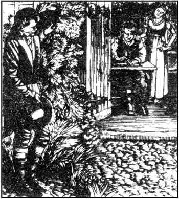
1802年
听完了迪恩夫人的故事，我为自己的将来做好了计划。我拿定主意不想在画眉山庄过第二个冬天了，我告诉她我要骑马到呼啸山庄去通知我的房东。她交给我一封信要我带给凯茜·希斯克利夫。
我到大门口时，哈里顿迎我进了房子。凯茜在，正准备午餐用的蔬菜。她懒得和我打招呼。
“她也许漂亮，”我想，“可她太无礼了。”走过她的椅子时我巧妙地把迪恩夫人的便条丢在她面前，这样哈里顿就看不见了。可她却大声说道，“那是什么？”
“画眉山庄女管家的信。”我说，有些生她的气。她愣了一下，刚想要拣起来，但哈里顿先拿到了。
“希斯克利夫先生会想看看的。”他说，把信揣进了口袋里。可当凯茜假装哭的时候，哈里顿不忍让她伤心，把信扔到桌子上。她急切地读着每一个字，还问了我几个关于画眉山庄里的人的问题。
“迪恩夫人想要回信。”我提醒她。
“你一定要告诉她我没有可用来写信的纸和笔。我连书都没有！”她难过地说。
“没有书！”我叫道，“在这么孤寂的地方没有书你是怎么过的？”
“我过去总是很喜欢读书，所以希斯克利夫先生决定剥夺我唯一的乐趣，把我的书毁掉。我整个屋子都找遍了。约瑟夫只读《圣经》，可我的一些书却在哈里顿的房间里！你为什么要拿那些书，哈里顿？只是因为你喜欢偷东西吗？它们对你没什么用！”
“我想哈里顿先生是想学习，”我说，希望他们别吵起来。“无疑他拿走书是去研读的。”
“是的，”凯茜笑着答道。“我听到他有时自己试着读书，可笑极了！有时犯严重的错误。”
哈里顿很吃惊，呆呆地说不出话来，过了一会儿离开了房间。他随后即抱着一怀抱书回来，怒气冲冲地将书扔在凯茜的脚边。
“拿走吧！”他嚷道，“我再也不想看了！”
“我现在也不想要它们了，”她说，“我会恨它们的，因为它们会让我想起你。”
哈里顿捡起书扔进了火里，然后快步走出了房子。
哈里顿一出去希斯克利夫先生就进来了，满脸焦虑不安的表情。
“希斯克利夫先生，”我说，“我得告诉您我下周要去伦敦，要走六个月，所以10月份以后我就不想再租用画眉山庄了。”
“这么说，洛克伍德先生，您已经厌倦荒原了，是吗？好，不管怎么样，您跟哈里顿和我一起用午餐吧。凯茜，你在厨房同约瑟夫和齐拉吃午餐。”
跟两位默不作声的人一起用午餐真不是件乐事，之后我就直接离开了呼啸山庄。
“真遗憾，”我想，“凯茜·希斯克利夫和我没有像迪恩夫人希望的那样彼此相爱！那样的话我就带她永远离开这个伤心的地方。”
几个月之后，正值9月，我去看望在约克郡的朋友，途中我发现自己离画眉山庄不远，于是决定去那儿过一夜。没想到到了那儿却发现管家已换了个人，新的管家告诉我迪恩夫人已到呼啸山庄去做管家了。经过一整天的旅行我想散散步，于是吩咐女管家为我做好晚餐，准备一间卧室，然后我步行四英里去呼啸山庄。
当我走近那栋老宅子，我注意到花园里开着花，门和窗也都是开着的。我能看见里面有两个人，我驻足站了一会儿，好奇地听到他们之间的一点谈话。
“再读一遍，笨蛋！”一个银铃般甜美的声音说道，“这次别读错了，否则我就拽你的头发！”
“我要是读对了你一定要吻我。”一个低沉的声音回答。这个人坐在桌旁，正读一本书。他英俊的面庞洋溢着喜悦的光彩，他的双眼不时离开书本看着搭在他肩上的白皙的小手。那姑娘站在他身后，弯着腰辅导他。她的面庞——幸亏他看不到她的面庞，否则他决不能集中精神学习。可我能看到这面庞，我真是懊悔自己丢掉了此生终日与这个美人相见的机会。
我不想打搅他们的快乐，所以绕到了后门，在那儿看到了我的老朋友艾伦·迪恩。
“噢，洛克伍德先生，欢迎回来！”她叫道，“您又在画眉山庄住了？”
“是的，迪恩夫人，只住一夜。先告诉我，你为什么在这儿做管家而不在画眉山庄了？”
“齐拉走了，你知道，希斯克利夫先生想要我到这儿来。”
“我和他还有一些事务，租房子的事。”
“噢！希斯克利夫先生死了，先生。他三个月以前死的。我替希斯克利夫夫人处理一切事务。她还没学会自己来干，你知道。”
“希斯克利夫死了！”我惊异地重复道。“那么，告诉我是怎么回事，迪恩夫人！”
“请坐，先生，喝点啤酒。我很乐意告诉您。他的生命结束得很奇特。”
18 Heathcliff's end
18
Heathcliff's end
1801—2 I was delighted to come back to the Heights, and hoped I could make Cathy's life more comfortable. But she was restless, and complained of loneliness. At first she continued to annoy Hareton, by laughing at him, but after a while she decided she really wanted him as a friend. She apologized for being rude to him, and offered to teach him everything she knew. From that moment on, the two cousins have always been together, studying. Hareton has a lot to learn, and Cathy is not the most patient of teachers. But what they have in common is their love for each other. You see, Mr Lockwood, it was easy enough to win Cathy's heart. But now I'm glad you didn't try. I'll be the happiest woman in England when those two marry!
Heathcliff noticed little of what was happening around him, and would never have been aware of the cousins' feelings, if it hadn't been for Joseph. In the middle of our lunch one day, the old man rushed into the room, shaking with anger.
'I'll have to leave! I wanted to die here, where I've been a servant for sixty years! But now she's taken my garden from me! She's stolen the boy's soul, master! I can't bear it!'
'Is the fool drunk?' asked Heathcliff. 'Can you explain this, Hareton?'
'I've pulled up two or three of his fruit-trees,' confessed Hareton, 'but I'll put them back again.'
'It was my fault,' added Cathy bravely. 'I asked him to do it. We wanted to plant some flowers there.'
'Who the devil gave you permission?' growled Heathcliff.
'You should let me have a bit of garden, as you've taken all my land!' replied Cathy sharply. 'And you've taken Hareton's land too! He and I are friends now! I'll tell him about you!'
The master stood up, staring at her fiercely.
'Out of the room, wicked girl!' he shouted. 'I'll kill you if I get near you!'
'If you hit me, Hareton will hit you. He won't obey you any more, and soon he'll hate you as much as I do!'
'You'd better leave, Cathy,' whispered Hareton urgently. 'I won't quarrel with Mr Heathcliff.'
But it was too late. I was sure Heathcliff was going to hit her. He took hold of her, one strong hand in her hair and the other raised over her head. But when he looked into her face, his anger suddenly disappeared, and he let his arm fall to his side. He sat heavily down in his chair and put his hand over his eyes for a moment. We all stared at him.
'You must learn not to make me angry,' he said, trying to be calm. 'Go away, all of you! Leave me alone!' A little later he went out, saying he would return in the evening.
As darkness fell, Cathy and Hareton were busy at their studies in the kitchen. I was sitting with them, happy to see them helping each other so well. I feel they're almost my children, Mr Lockwood, and I'm very proud of them. As the master entered the house, he had a full view of us three. They lifted their eyes to meet his. Perhaps you haven't noticed it, but their eyes are very similar, and they are exactly like those of Catherine Earnshaw. Mr Heathcliff stopped and stared, then looked away. At a sign from me, Cathy and Hareton went quietly out into the garden, leaving me alone with Mr Heathcliff.
'It's silly, isn't it, Ellen,' he muttered, 'that I have worked all my life to destroy these two families, the Earnshaws and the Lintons. I've got their money and their land. Now I can take my final revenge on the last Earnshaw and the last Linton, I no longer want to! There's a strange change coming in my life. I'm in its shadow. I'm so little interested in daily events that I even forget to eat and drink. I don't want to see those two, that's why I don't care if they spend time together. She only makes me angry. And he looks so like Catherine! But everything reminds me of Catherine! In every cloud, in every tree I see her face! The whole world reminds me that she was here once, and I have lost her!'
'You don't feel ill, sir, do you? Are you afraid of death?'
'I'm not ill, Ellen, and I'm not afraid to die. But I can't continue like this! I have to remind myself to breathe—almost to remind my heart to beat! I have a single wish, for something my whole body and heart and brain have wanted for so long! Oh God! It's a long fight! I wish it were finished!'
For some days after that, Mr Heathcliff avoided meeting us at meals. He ate less and less. Late one night I heard him leave the house. He did not return until the morning. When he came in, I noticed a change in his expression. There was a strange, wild happiness in his face, although he was pale and trembling.
'Will you have some breakfast, sir?' I asked.
'No, I'm not hungry,' he answered.
'I don't think you should stay outside at night, sir. You'll catch a bad cold or a fever!'
'Leave me alone, Ellen,' he replied.
I began to worry about him. He was strong and healthy, but a man must eat in order to live. For the next three days he ate nothing. At every meal the food lay untouched on the plate in front of him. He did not look at the food, or at us. He seemed to be looking at something quite close to him, something we could not see. His fierce black eyes followed it with such eager interest that he sometimes stopped breathing for as much as half a minute.
He did not sleep either. For three days he had spent the night in Catherine Earnshaw's old bedroom, and I could hear him walking up and down, and talking, calling, crying all night.
One morning I managed to speak to him, and make him listen to me. 'Mr Heathcliff, you must have some food and sleep. Look at yourself in the mirror! You look ill and tired.'
'It's not my fault that I can't eat or rest. You wouldn't tell a drowning man to rest when he can see the shore! I'm close to what I've wanted for eighteen years, very close! But my soul's happiness is killing my body!'
'It's a strange kind of happiness, master. Take my advice, and pray to God to forgive you for what you've done wrong in the past, if you think you're going to die.'
'Thank you, Ellen, you've reminded me of something. It's the way I want to be buried. My coffin will be carried to the churchyard in the evening. You and Hareton will be present, nobody else. And make sure my orders about the two coffins are obeyed! I want no ceremony, or words from the Bible—I don't believe in any of that.'
He spent the next night, and the next day, in Catherine's room, muttering and sobbing all the time. I sent for Dr Kenneth, but the door was locked, so the doctor could not see him. The following night was very wet, and in the morning as I walked in the garden, I noticed that the bedroom window was wide open.
'He must be very wet if he's in bed,' I thought, 'the bed is so close to the window. I'll go and look.' I found another key which fitted the lock, and opened the door. Mr Heathcliff was there in bed, lying on his back. His eyes were staring at me, so eagerly and fiercely, and he seemed to be smiling! His face and clothes were wet from the rain, and he did not move. I realized he was dead!
I closed the window. I combed his long, black hair from his forehead. I tried to close his eyes, but they would not shut. Suddenly frightened, I called for Joseph. The old servant came at once, but refused to touch the body.
'Ah, the devil's taken his soul! I warned him that would happen!' he cried. 'You see how wicked he is, smiling at death! But thank God Hareton Earnshaw will have the house and land now, that he should have inherited from his father!' And he went down on his knees to pray.
Hareton was, in fact, the only one who was sad at Heathcliff's death. He and I were present at the burial. Heathcliff was buried next to Catherine's grave, as he had wished. As we were not sure of his age or anything else about him, there is only one word on his gravestone—Heathcliff. The villagers are very frightened of his ghost. They say he often haunts the churchyard and the moors.
Hareton and Cathy will be married on New Year's Day, and they'll move to the Grange. I'll be their housekeeper. Joseph will take care of Wuthering Heights, but most of the rooms here won't be used again.
You'll pass the churchyard, Mr Lockwood, on your way back to the Grange, and you'll see the three gravestones close to the moor. Catherine's, the middle one, is old now, and half buried in plants which have grown over it. On one side is Edgar Linton's, and on the other is Heathcliff's new one. If you stay there a moment, and watch the insects flying in the warm summer air, and listen to the soft wind breathing through the grass, you'll understand how quietly they rest, the sleepers in that quiet earth.
offer to to express willingness (to do sth). 表示愿意（做某事）。
confess v. to admit (a fault, crime, something wrong). 坦白，承认。
look into to examine the meaning or cause of. 观察，调查。
be proud of having or expressing personal satisfaction and pleasure in something. 自豪的。
fierce adj. angry, violent, and cruel. 严厉的。
drown v. to die under water because unable to breathe. 淹死，溺死。
churchyard n. an open space around and belonging to a church, often used for burials. 教堂周围属于教堂的空地，通常用作墓地。
希斯克利夫的结局
18 希斯克利夫的结局
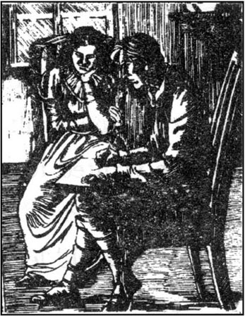
1801—1802年
回到呼啸山庄我很高兴，我希望能使凯茜的生活过得更舒心些。可她很烦躁，抱怨说孤独。开始她还招惹哈里顿，嘲笑他，但过了一段时间她觉得自己真的想要他做朋友。她为自己对他的无礼道了歉，并提出要把她会的一切都教给他。从此，这两个表兄妹就形影不离，在一起学习。哈里顿有好些要学的，而凯茜又不是个很耐心的老师。但他们的共同点是他们彼此相爱。你看，洛克伍德先生，要赢得凯茜小姐的心不难。可现在我庆幸您没有试。他们俩结婚时我就是英格兰最幸福的女人了！
希斯克利夫对他身边发生的事几乎没有注意到，要不是约瑟夫，他也决不会察觉这对表兄妹的感情。一天，我们正吃着午饭，那个老头冲进屋里，气得浑身发抖。
“我得离开！我本想死在这儿，我在这儿做了60年的仆人！可她现在把我花园抢走了！她偷走了这孩子的魂儿，主人！我无法忍受了！”
“这傻瓜喝醉了？”希斯克利夫问。“你能解释一下吗，哈里顿？”
“我拔了他两三棵果树，”哈里顿坦白道，“但我会把它们种回去的。”
“是我的错，”凯茜大胆地插话道，“是我让他拔的。我们想在那儿种些花儿。”
“谁他妈的批准的？”希斯克利夫咆哮道。
“你把我全部土地都拿走了，总该让我有一片花园吧！”凯茜不饶地反驳道。“而且你还夺走了哈里顿的土地！他和我现在是朋友！我要把你的事告诉他！”
主人站了起来，两眼恶狠狠地盯着她。
“滚出这房间，坏丫头！”他嚷道。“要是让我走近你，我会杀了你！”
“如果你打我，哈里顿会打你的。他不会再听你的话，过不了多久，他也会像我一样恨你！”
“你最好离开这儿，凯茜，”哈里顿小声催促道。“我不会同希斯克利夫先生争吵。”
但太晚了。我肯定希斯克利夫要打她了。他抓住她，一只大手揪住她的头发，另一只手举过了她头顶。可当他看到她的脸的时候，怒气突然消失了，把手臂放了下来。他重重地坐回椅子上，双手捂住眼睛待了一会儿。我们都目不转睛地看着他。
“你要学着别惹我生气，”他说道，想镇静下来，“滚开，都滚！别烦我！”不一会儿他出去了，说晚上回来。
夜幕降临，凯茜和哈里顿在厨房忙着学习。我在旁边坐着，看到他们互帮互助处得那样融洽我很高兴。我觉得他们是我自己的孩子似的，洛克伍德先生，我为他们感到非常自豪。主人进到房子时，一眼就看见了我们三个。他们抬起眼，与希斯克利夫相对而视。可能您没留意，他们俩的眼睛很相像，而且跟凯瑟琳·欧肖的眼睛几乎一模一样。希斯克利夫先生站住凝视了一会儿，然后眼光转向了别处。在我的示意下，凯茜和哈里顿悄悄溜进了花园，只剩下我和希斯克利夫先生。
“真傻，是吧，艾伦，”他喃喃道，“我倾尽一生精力要摧毁这两个家庭，欧肖和林顿家。我得到了他们的钱财和土地。如今我可以对最后一个姓欧肖的和最后一个姓林顿的施加最后的报复，我却不想干了！我的生命里发生着奇怪的变化，我正处在这变化的阴影之中。我对日常的事务提不起兴趣，甚至想不起吃喝。我不想见到他们俩，所以我不管他们是不是在一起。她只会惹我生气，而他长得真像凯瑟琳！可什么东西都能让我想起凯瑟琳来！在每一朵云团、每一棵树上我都能看到她的脸！整个世界都在提醒我她曾经在这儿，而我却失去了她！”
“您没感到不舒服吧，先生，是吗？您惧怕死么？”
“我没病，艾伦，我也不怕死。可我不能继续这样下去了！我得提醒自己要喘气——几乎得提醒自己的心去跳！我只有一个愿望，那是我许久以来殚精竭力、挖空心思想得到的东西！噢，上帝！这是一场漫长的搏斗！我希望它结束吧！”
在以后的几天里，希斯克利夫先生吃饭的时候躲着我们。他吃得越来越少。有一天深夜我听见他出了宅子，第二天上午才回来。他进来时，我注意到他神情有些异样。尽管气色苍白、全身颤抖，可脸上洋溢着诡秘、疯狂的喜悦。
“您用点早餐吗，先生？”我问。
“不，我不饿。”他回答。
“我觉得您不该在外面过夜，先生。您会感冒发烧的！”
“别管我，艾伦。”他回答。
我开始为他担心。他身体强健，但要活着总要吃饭呀。此后三天他什么也没吃，每顿饭放到他面前他都没动。他根本不看饭菜，也不看我们。他似乎在看着就在他身边的什么东西，我们却看不见。他炽烈的黑眼睛聚精会神地紧盯着它，有时甚至半分钟也不喘气。
他也不睡觉。他在凯瑟琳·欧肖从前住的卧室里连续待了三个晚上，我能听到他走来走去，整夜地说话、嗥叫、痛哭。
一天早晨我跟他搭话，让他听我的。“希斯克利夫先生，你一定得吃得睡。用镜子看看您自己！您看上去疲病交加的。”
“我吃不下、睡不着不是我的错。当一个快淹死的人看见岸边时，你不会让他歇息吧！我就要得到18年来梦寐以求的东西，快了！可我灵魂的欢乐扼杀着我的肉体！”
“那是一种怪诞的欢乐，主人。听我的，如果您认为自己将不久于人世，就祈求上帝宽恕您以往的过错吧。”
“谢谢，艾伦，你提醒了我一件事，是关于我下葬的方式。我的棺材要在晚上抬到教堂墓地。你和哈里顿要在场，不要别人。要保证按我放置两口棺材的命令去做！我不要葬礼，也不要读《圣经》——我一概不信。”
他当天晚上和第二天白天都待在凯瑟琳的房间，一直在喃喃自语和呜咽抽泣。我叫人去找肯尼士大夫，但卧室的门上了锁，大夫没法看他。那天晚上很潮湿，早晨我在花园里走，注意到那卧室的窗户是大开着的。
“如果他在床上一定会被打得很湿，”我想，“床离窗户很近。我要去看看。”我找到了能开那把锁的另一把钥匙，打开门。希斯克利夫先生在床上仰面躺着，他的双眼瞪着我，热切而激动，似乎是在微笑！他的脸和衣裳被雨打湿了，他没有动弹。我意识到他是死了！
我关上窗，为他梳理了额头长长的黑发。我试着帮他闭上眼睛，可它们不肯阖上。突然间我很害怕，喊叫起约瑟夫来。那老仆人马上就来了，但不肯动遗体。
“啊，魔鬼取走了他的灵魂！我警告过他会这样的！”他叫道，“你看他有多邪恶，死的时候还笑！谢天谢地，哈里顿·欧肖现在将拥有这房子和土地，他本应从他父亲那儿就继承到的！”他跪下开始祈祷。
实际上只有哈里顿对希斯克利夫的死感到难过。他和我参加了下葬。如他自己所愿，希斯克利夫被埋在凯瑟琳的墓旁。因为我们不知道他确切年龄或其他情况，所以墓碑上只有一个字——希斯克利夫。村里人很害怕他的鬼魂，他们说他经常在教堂墓地和荒原上游荡。
哈里顿和凯茜将在元旦那天结婚，然后他们搬到画眉山庄去。我将给他们做管家。约瑟夫看管呼啸山庄，但大多数房间都不会再使用了。
您回画眉山庄的路上会经过教堂墓地，洛克伍德先生，您可以看见靠近荒原的三个墓碑。中间凯瑟琳的已经旧了，被周围生长的杂草掩住了一半。一边是艾加·林顿的，另一边是希斯克利夫的新墓碑。如果您在那儿待一会儿，看着在温暖夏日的空气里纷飞的昆虫，听着在草丛中喘息的柔风，您就会知道在静谧的泥土下，长眠的人在多么平静地安息。
Exercises
Exercises
A Checking your understanding
Chapters 1–6 How much can you remember? Check your answers.
1 Who was the ghost Mr Lockwood saw at Wuthering Heights?
2 Which family had owned Wuthering Heights for centuries?
3 Give the names of the two housekeepers in the story.
4 Where did Mr Earnshaw find the gipsy child?
5 What did Mr and Mrs Linton die of?
6 Give the name of Hareton's father.
Chapters 7–12 Are these sentences true (T) or false (F)?
1 Edgar and Catherine had never been really happy together since their wedding.
2 Heathcliff fell in love with Isabella.
3 Catherine's illness was more serious than Ellen thought at first.
4 Hindley Earnshaw was planning to kill Heathcliff.
5 Catherine died in Heathcliff's arms.
6 Heathcliff came to Thrushcross Grange to collect his son.
Chapters 13–18 Write answers to these questions.
1 Why was Cathy's birthday never celebrated?
2 Why didn't Cathy inherit her father's fortune?
3 How did Cathy keep her evening visits to Linton a secret from Ellen?
4 How did Heathcliff arrange for his son to marry Cathy?
5 Who will Cathy's second husband be?
B Working with language
1 Choose the best linking word and complete these sentences with information from the story.
1 Isabella ran away with Heathcliff because/although...
2 Edgar married Catherine before/after...
3 Heathcliff told Cathy he would keep her locked up at Wuthering Heights in case/until...
4 Hareton would have inherited Wuthering Heights if/unless...
2 Put together these beginnings and endings of sentences. Check your answers in Chapter 18.
1 As the master entered the house
2 Perhaps you haven't noticed it
3 Mr Heathcliff stopped and stared
4 There was a strange, wild happiness in his face
5 I sent for Dr Kenneth, but the door was locked
6 He did not look at the food
7 or at us.
8 then looked away.
9 he had a full view of us three.
10 so the doctor could not see him.
11 although he was pale and trembling.
12 but their eyes are very similar.
C Activities
1 You are a newspaper reporter. Write a report to describe Heathcliff's burial, which you attended, giving as much information about Heathcliff's life as you can.
2 Do you think Catherine should have married Heathcliff rather than Edgar? What would you have done in her position? Write an essay giving your opinions.
3 Write Ellen Dean's diary for one of the four days she was kept prisoner by Heathcliff at Wuthering Heights.
封底
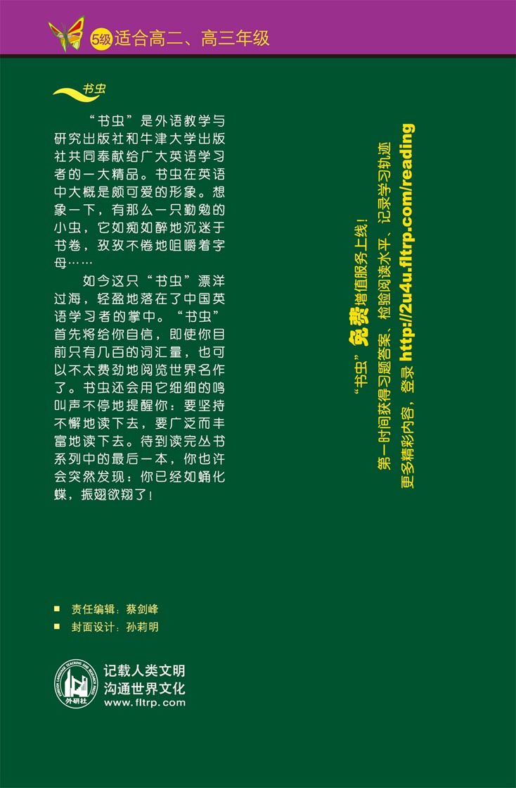